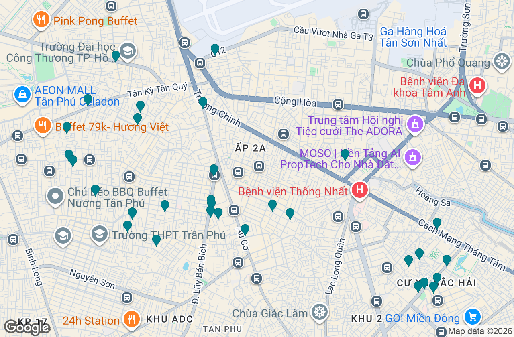
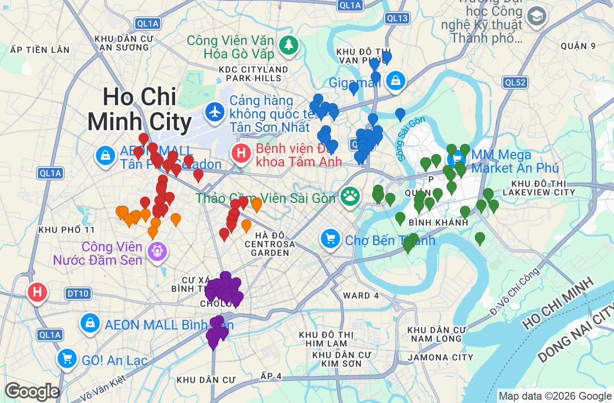
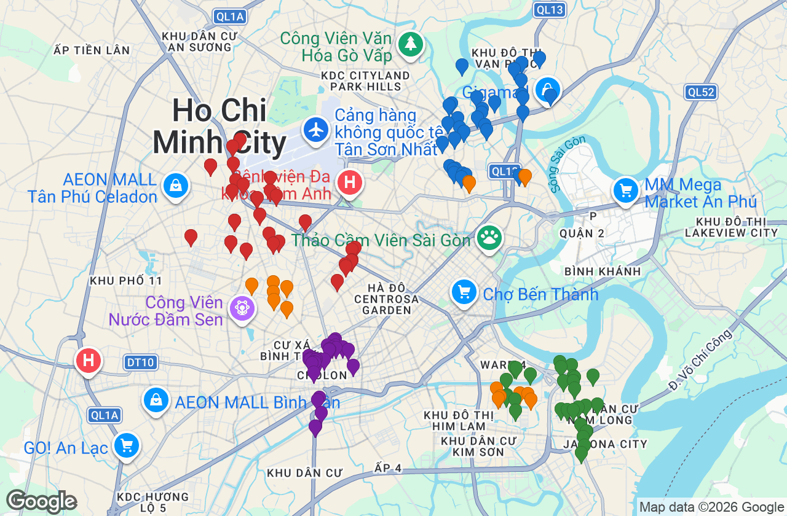
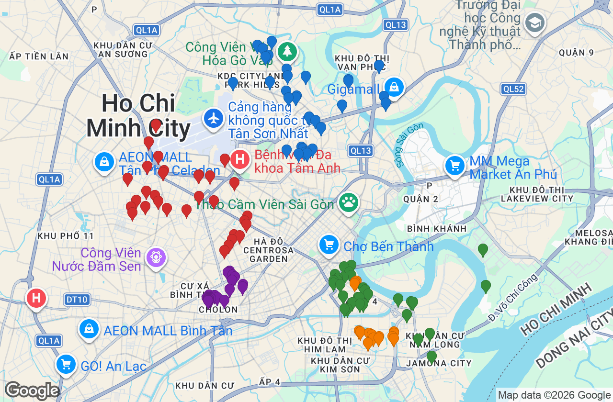
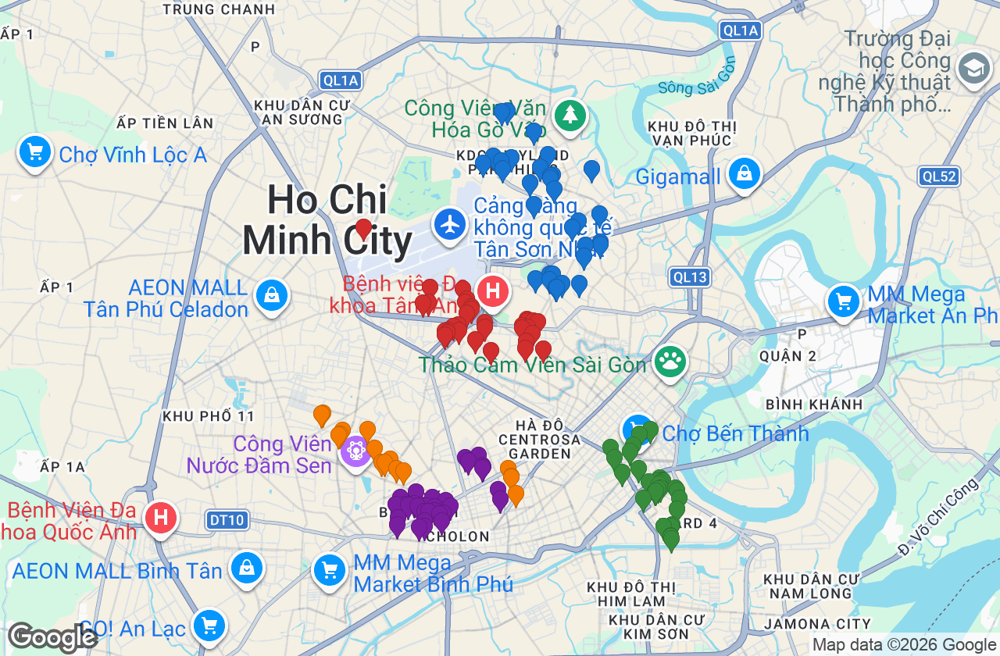
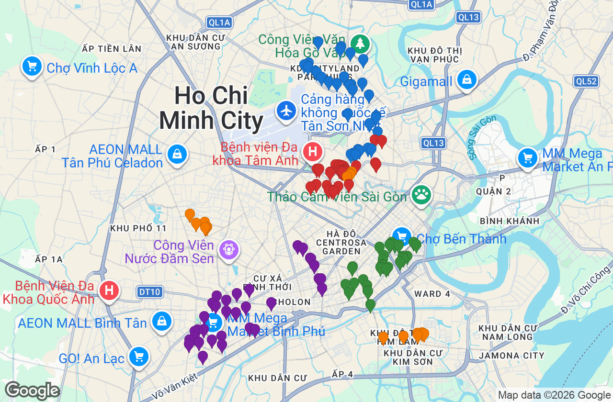
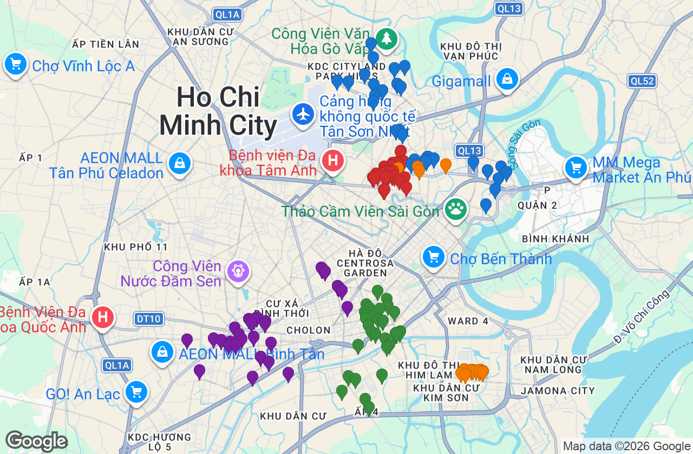
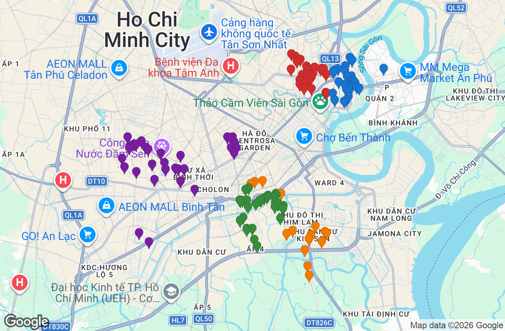
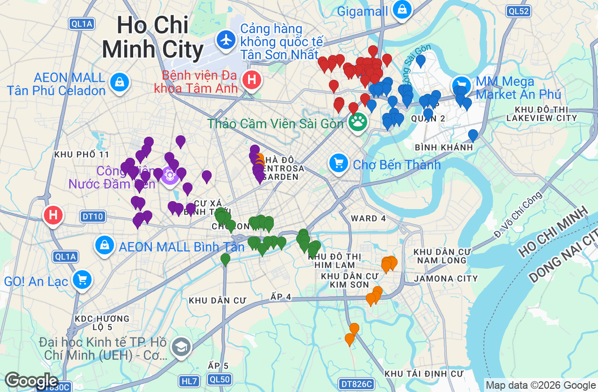

| 담당 | 구역 | 방문 | 매물업종 | 가입/매물 |
|---|---|---|---|---|
| 파일럿 (1명) | Bảy Hiền | 32 | 24 | 8 / 12 |
| # | 상호 | 업종 | 주소 | 전화 | 등록 품목 | 지도 |
|---|---|---|---|---|---|---|
| 1 | Cứu Hộ Xe Máy - Sửa Xe Lưu Động Quận Tân Phú Minh Thành Motor | 튜닝·액세서리 | 76 Nguyễn Cửu Đàm | +84 399 859 679 | 핸들바 · LED · 데칼 · 시트커버 중 2점 | 지도 |
| 2 | Cửa Hàng Phụ Kiện Motor Bike | 튜닝·액세서리 | 95 Nguyễn Ngọc Nhựt | +84 937 535 860 | 핸들바 · LED · 데칼 · 시트커버 중 2점 | 지도 |
| 3 | Cửa hàng Khôi Decal | 튜닝·액세서리 | 157 Lê Trọng Tấn | +84 972 245 245 | 핸들바 · LED · 데칼 · 시트커버 중 2점 | 지도 |
| 4 | Dán Keo Xe - Đồ Chơi Xe Máy Phạm Tùng | 튜닝·액세서리 | 324 Tân Kỳ Tân Quý | +84 343 630 345 | 핸들바 · LED · 데칼 · 시트커버 중 2점 | 지도 |
| 5 | Fastyre Bàu Cát | 튜닝·액세서리 | 1 Bàu Cát 8 | +84 902 716 594 | 핸들바 · LED · 데칼 · 시트커버 중 2점 | 지도 |
| 6 | Motor Phát Tài | 튜닝·액세서리 | 53/5 Đ. Lũy Bán Bích | +84 927 900 900 | 핸들바 · LED · 데칼 · 시트커버 중 2점 | 지도 |
| 7 | Phú Tài Decal | 튜닝·액세서리 | 49/4 Lê Liễu | +84 909 058 283 | 핸들바 · LED · 데칼 · 시트커버 중 2점 | 지도 |
| 8 | Phố Xe Điện quận Tân Phú | 튜닝·액세서리 | 684 Đ. Lũy Bán Bích | +84 1800 9008 | 핸들바 · LED · 데칼 · 시트커버 중 2점 | 지도 |
| 9 | Phụ Kiện Việt Phương | 튜닝·액세서리 | 26 Đường C12 | +84 938 530 007 | 핸들바 · LED · 데칼 · 시트커버 중 2점 | 지도 |
| 10 | Phụ Tùng Xe Máy Tốc Độ | 튜닝·액세서리 | 131 Đ. Gò Dầu | +84 916 780 628 | 핸들바 · LED · 데칼 · 시트커버 중 2점 | 지도 |
| 11 | Scooter BRO - Motocycles & Life | 튜닝·액세서리 | 339/22 Đ. Nguyễn Thái Bình | +84 938 280 258 | 핸들바 · LED · 데칼 · 시트커버 중 2점 | 지도 |
| 12 | Shop Đèn Led xe máy ZAHA | 튜닝·액세서리 | Hẻm 46/17C Trần Văn Ơn | 핸들바 · LED · 데칼 · 시트커버 중 2점 | 지도 | |
| 13 | Tiệm Chuyên Phục Hồi Phuộc Nhún Các Loại Xe | 튜닝·액세서리 | 989 Âu Cơ | +84 979 912 763 | 핸들바 · LED · 데칼 · 시트커버 중 2점 | 지도 |
| 14 | Vespa Hưng Phát | 튜닝·액세서리 | 32/78 Phan Sào Nam | 핸들바 · LED · 데칼 · 시트커버 중 2점 | 지도 | |
| 15 | Vương Bá Shop | 튜닝·액세서리 | 111/43 Đ. Vườn Lài | +84 842 814 286 | 핸들바 · LED · 데칼 · 시트커버 중 2점 | 지도 |
| 16 | XBS PHỤ TÙNG XE | 튜닝·액세서리 | 204 Đ. Nguyễn Súy | +84 908 040 600 | 핸들바 · LED · 데칼 · 시트커버 중 2점 | 지도 |
| 17 | ĐỒ CHƠI CBR | 튜닝·액세서리 | 160A/36 Đ. Vườn Lài | +84 937 234 236 | 핸들바 · LED · 데칼 · 시트커버 중 2점 | 지도 |
| 18 | Đồ Chơi GSX | 튜닝·액세서리 | 36 Đ. Vườn Lài | +84 937 234 236 | 핸들바 · LED · 데칼 · 시트커버 중 2점 | 지도 |
| 19 | Bọc yên xe máy Hùng | Bọc yên xe Tân Bình | 중고 오토바이 | 26 Phan Sào Nam | +84 762 551 429 | 중고 오토바이 2대 (연식·주행거리 확인) | 지도 |
| 20 | CỬA HÀNG XE GẮN MÁY A TỊNH | 중고 오토바이 | 1009 Đ. Lũy Bán Bích | +84 903 818 306 | 중고 오토바이 2대 (연식·주행거리 확인) | 지도 |
| 21 | CỬA HÀNG XE MÁY TNT | 중고 오토바이 | 24 Bác Ái | +84 788 383 968 | 중고 오토바이 2대 (연식·주행거리 확인) | 지도 |
| 22 | Cửa Hàng Xe Máy Cường Tự | 중고 오토바이 | 724 Đ. Lũy Bán Bích | +84 983 222 698 | 중고 오토바이 2대 (연식·주행거리 확인) | 지도 |
| 23 | Cửa Hàng Xe Máy Gia Phúc - Thu Mua Xe Máy Cũ Giá Cao | 중고 오토바이 | 170/11 Đ. Vườn Lài | +84 987 207 681 | 중고 오토바이 2대 (연식·주행거리 확인) | 지도 |
| 24 | Cửa Hàng Xe Máy Hưng Thịnh | 중고 오토바이 | 712 Đ. Lũy Bán Bích | +84 28 6267 1711 | 중고 오토바이 2대 (연식·주행거리 확인) | 지도 |
| 25 | Tiệm Rửa Xe Dân Trí | 세차 | 43 Dân Trí | 가입만 | 지도 | |
| 26 | Mr Thành mobile - Sửa chữa mua bán điện thoại | 폰수리 | 59/24 Đ. Nghĩa Hòa | 가입만 | 지도 | |
| 27 | 5Scare - Sửa chữa Laptop - Điện thoại & Thiết bị công nghệ | 폰수리 | 798 Cách Mạng Tháng Tám | 가입만 | 지도 | |
| 28 | Cứu Hộ Xe Máy - Sửa Xe Máy Tại Nhà Minh Thành Motor | 견인 | 352 Bắc Hải | 가입만 | 지도 | |
| 29 | Rửa xe Mười Nghề | 세차 | 133 Đ. Bắc Hải | 가입만 | 지도 | |
| 30 | Cứu Hộ Xe Máy Minh Thành Motor - Sửa Xe Lưu Động | 타이어 | 78 Cửu Long | 가입만 | 지도 | |
| 31 | Kau Coffee | 카페 | D1C Đ. Thất Sơn | 가입만 | 지도 | |
| 32 | Quán Cơm Lan Anh | 음식 | 93 Bắc Hải | 가입만 | 지도 |

| 담당 | 구역 | 방문 | 매물업종 | 가입/매물 |
|---|---|---|---|---|
| 작업자 A | Bảy Hiền | 32 | 24 | 8 / 12 |
| 작업자 B | Bình Thạnh · Bình Lợi Trung | 32 | 24 | 8 / 12 |
| 작업자 C | An Khánh | 32 | 24 | 8 / 12 |
| 작업자 D | Chợ Lớn | 32 | 24 | 8 / 12 |
| 감독자 (A조 순회) | Hòa Bình | 16 | 12 | 4 / 6 |
| # | 상호 | 업종 | 주소 | 전화 | 등록 품목 | 지도 |
|---|---|---|---|---|---|---|
| 1 | Cửa Hàng Xe Máy Ly Sport | 중고 오토바이 | Đ. Lũy Bán Bích | +84 918 008 977 | 중고 오토바이 2대 (연식·주행거리 확인) | 지도 |
| 2 | Cửa Hàng Xe Máy Nguyễn Nhật | 중고 오토바이 | 937 Đ. Lũy Bán Bích | +84 905 245 522 | 중고 오토바이 2대 (연식·주행거리 확인) | 지도 |
| 3 | Cửa Hàng Xe Máy Quang Liêm | 중고 오토바이 | 1007 Âu Cơ | +84 931 835 826 | 중고 오토바이 2대 (연식·주행거리 확인) | 지도 |
| 4 | Cửa Hàng Xe Máy Sơn Tay Ga | 중고 오토바이 | 757 Đ. Lũy Bán Bích | +84 933 731 346 | 중고 오토바이 2대 (연식·주행거리 확인) | 지도 |
| 5 | Cửa Hàng Xe Máy Thái Thiện | 중고 오토바이 | 973 Đ. Lũy Bán Bích | +84 909 159 697 | 중고 오토바이 2대 (연식·주행거리 확인) | 지도 |
| 6 | Cửa Hàng Yên Xe Tấn Kiệt | 중고 오토바이 | 985 Đ. Lũy Bán Bích | +84 908 150 788 | 중고 오토바이 2대 (연식·주행거리 확인) | 지도 |
| 7 | Cửa hàng Xe máy Toàn Giàu | 중고 오토바이 | 965 Đ. Lũy Bán Bích | +84 938 176 666 | 중고 오토바이 2대 (연식·주행거리 확인) | 지도 |
| 8 | Cửa hàng mua bán xe máy cũ Nam Trang | 중고 오토바이 | 1079 Đ. Lũy Bán Bích | +84 988 885 385 | 중고 오토바이 2대 (연식·주행거리 확인) | 지도 |
| 9 | FATCAR | 중고 오토바이 | 126 Nguyễn Hữu Dật | +84 995 678 668 | 중고 오토바이 2대 (연식·주행거리 확인) | 지도 |
| 10 | HEAD ITC#2 | Đại lý xe máy | 중고 오토바이 | 683 Âu Cơ | +84 28 3842 5523 | 중고 오토바이 2대 (연식·주행거리 확인) | 지도 |
| 11 | Head ITC1 | 중고 오토바이 | 439 Trường Chinh | +84 28 3810 5637 | 중고 오토바이 2대 (연식·주행거리 확인) | 지도 |
| 12 | Nhung Xe Điện - Mua Bán Xe Điện TP.HCM | 중고 오토바이 | 111/10 Đ. Vườn Lài | +84 938 900 030 | 중고 오토바이 2대 (연식·주행거리 확인) | 지도 |
| 13 | PHÒNG KINH DOANH ONLINE XE MÁY VISACOOP | 중고 오토바이 | 478 Cộng Hòa | +84 357 531 554 | 중고 오토바이 2대 (연식·주행거리 확인) | 지도 |
| 14 | Phương Đông - Thu Mua Xe Điện, Xe Máy & Đồ Cũ | 중고 오토바이 | 24 Ngô Bệ | +84 886 025 555 | 중고 오토바이 2대 (연식·주행거리 확인) | 지도 |
| 15 | Phố Xe Điện quận Tân Bình | 중고 오토바이 | 322A Trường Chinh | +84 1800 9008 | 중고 오토바이 2대 (연식·주행거리 확인) | 지도 |
| 16 | Shop 186 | 중고 오토바이 | Trường Chinh Phường Tân Sơn Nhì ❤️581/22 Trường Chinh Q.Tân Phú ( gần chợ, Võ Thành Trang - Bà Quẹo | +84 935 560 560 | 중고 오토바이 2대 (연식·주행거리 확인) | 지도 |
| 17 | Shop xe máy Phú Lực | 중고 오토바이 | 6 Đường số 27 | 중고 오토바이 2대 (연식·주행거리 확인) | 지도 | |
| 18 | Thu mua xe máy | 중고 오토바이 | 248/14/2 Hẻm 248/14 Nguyễn Thái Bình | 중고 오토바이 2대 (연식·주행거리 확인) | 지도 | |
| 19 | Xe Máy Công Quyền | 중고 오토바이 | 815 Đ. Lũy Bán Bích | +84 936 989 879 | 중고 오토바이 2대 (연식·주행거리 확인) | 지도 |
| 20 | Xe Điện Linh Trung - Thu Mua Xe Điện Cũ TP.HCM | 중고 오토바이 | 710/70 Đ. Lũy Bán Bích | +84 941 236 197 | 중고 오토바이 2대 (연식·주행거리 확인) | 지도 |
| 21 | Yamaha Town Minh Quang 5 | 중고 오토바이 | 175-177 Cộng Hòa | +84 28 7301 2988 | 중고 오토바이 2대 (연식·주행거리 확인) | 지도 |
| 22 | Điện Máy Nam Hoàng - Chuyên Loa Kéo Nanomax | 중고 오토바이 | Thoại Ngọc Hầu | +84 901 800 800 | 중고 오토바이 2대 (연식·주행거리 확인) | 지도 |
| 23 | Chuỗi vệ sinh xe, mũ bảo hiểm GoWash | 헬멧·보호구 | 1/1 Trường Chinh | +84 909 490 098 | 헬멧 2종 (풀페이스 / 하프) | 지도 |
| 24 | Cửa Hàng Mũ Bảo Hiểm Kim Anh 16Tan son nhi | 헬멧·보호구 | +84 937 031 799 | 헬멧 2종 (풀페이스 / 하프) | 지도 | |
| 25 | Rửa Xe Thay Nhớt Sơn Nguyễn 68 | 세차 | 60 Bắc Hải | 가입만 | 지도 | |
| 26 | NGON 2 | 음식 | QMM7+575 | 가입만 | 지도 | |
| 27 | Cà Phê Xưa | 카페 | 45 Cửu Long | 가입만 | 지도 | |
| 28 | Cứu hộ xe máy Quận 10 | 견인 | 30 Trường Sơn | 가입만 | 지도 | |
| 29 | Quán Cafe rang xay nguyên chất, hạt sạch - TA Coffee | 카페 | P3 Bạch Mã | 가입만 | 지도 | |
| 30 | Cứu Hộ Xe Máy Minh Thành Motor - Sửa Xe Lưu Động | 타이어 | 136 Đ. Tam Đảo | 가입만 | 지도 | |
| 31 | Circle K Việt Nam | 편의점 | 70 Đ. Đồng Nai | 가입만 | 지도 | |
| 32 | Giặt Sấy Bà Già | 세탁 | 590/E5 Cách Mạng Tháng Tám | 가입만 | 지도 |
| # | 상호 | 업종 | 주소 | 전화 | 등록 품목 | 지도 |
|---|---|---|---|---|---|---|
| 1 | MINH LONG MOTOR Quận Bình Thạnh | 중고 오토바이 | 72 74 Đinh Bộ Lĩnh | +84 898 888 816 | 중고 오토바이 2대 (연식·주행거리 확인) | 지도 |
| 2 | Mua Xe Máy Cũ Tận Nhà | 중고 오토바이 | 2 Chu Văn An | +84 814 230 875 | 중고 오토바이 2대 (연식·주행거리 확인) | 지도 |
| 3 | Phê Motor | 중고 오토바이 | 232 QL13 | +84 977 933 837 | 중고 오토바이 2대 (연식·주행거리 확인) | 지도 |
| 4 | Thu Mua xe cũ Lê Nhân 88 Bạch Đằng | 중고 오토바이 | 88 Bạch Đằng | +84 906 899 252 | 중고 오토바이 2대 (연식·주행거리 확인) | 지도 |
| 5 | VIETMOTO Cho Thuê Xe Máy / Motorbike rental / Аренда байков | 중고 오토바이 | 04 Đinh Bộ Lĩnh | +84 385 858 671 | 중고 오토바이 2대 (연식·주행거리 확인) | 지도 |
| 6 | Yamaha Town Hồng Hải Anh | 중고 오토바이 | 101 Nơ Trang Long | +84 28 3551 1136 | 중고 오토바이 2대 (연식·주행거리 확인) | 지도 |
| 7 | Cửa hàng nón bảo hiểm Quốc Việt. | 헬멧·보호구 | 227 Đinh Bộ Lĩnh | 헬멧 2종 (풀페이스 / 하프) | 지도 | |
| 8 | Shop Nón Bảo Hiểm Phú Khang | 헬멧·보호구 | 178 Nơ Trang Long | 헬멧 2종 (풀페이스 / 하프) | 지도 | |
| 9 | CF | 용품 | 166 Đ. Phan Văn Trị | 미러 · 머플러 · 브레이크패드 · 체인 중 2점 | 지도 | |
| 10 | Cửa Hàng Phụ Tùng Honda Hồng Biển | 용품 | 685 Xô Viết Nghệ Tĩnh | +84 28 3898 1964 | 미러 · 머플러 · 브레이크패드 · 체인 중 2점 | 지도 |
| 11 | HEAD Tường Nguyên | 용품 | 3 Đinh Bộ Lĩnh | +84 28 3511 5067 | 미러 · 머플러 · 브레이크패드 · 체인 중 2점 | 지도 |
| 12 | Phụ Tùng Xe Máy Minh Độ | 용품 | 89 Đinh Bộ Lĩnh | 미러 · 머플러 · 브레이크패드 · 체인 중 2점 | 지도 | |
| 13 | Phụ tùng xe | 용품 | Cầu Đinh Bộ Lĩnh, 85 Đinh Bộ Lĩnh | 미러 · 머플러 · 브레이크패드 · 체인 중 2점 | 지도 | |
| 14 | Sửa Xe Honda Ngọc Châu | 중고 용품 | 140 Bình Quới | +84 933 367 393 | 중고 부품 2점 | 지도 |
| 15 | Cà Phê Chợ Đồ Cổ | 튜닝·액세서리 | 311/27 Nơ Trang Long | +84 932 731 127 | 핸들바 · LED · 데칼 · 시트커버 중 2점 | 지도 |
| 16 | Cứu Hộ Xe Máy - Sửa Xe Lưu Động Minh Thành Motor | 튜닝·액세서리 | 85 Đ.Trần Quốc Tuấn | +84 399 859 679 | 핸들바 · LED · 데칼 · 시트커버 중 2점 | 지도 |
| 17 | Siêu thị Emart - Phan Văn Trị | 튜닝·액세서리 | 366 Đ. Phan Văn Trị | +84 28 3895 5555 | 핸들바 · LED · 데칼 · 시트커버 중 2점 | 지도 |
| 18 | Tiệm Sửa Xe Lưu Động 24h - Cứu Hộ Xe | 튜닝·액세서리 | 346/5 Đ. Phan Văn Trị | +84 358 863 338 | 핸들바 · LED · 데칼 · 시트커버 중 2점 | 지도 |
| 19 | ĐẠT DÌ (thằng đệ) sữa chữa xe máy quận bình thạnnh | 튜닝·액세서리 | 338 Nơ Trang Long | +84 989 318 439 | 핸들바 · LED · 데칼 · 시트커버 중 2점 | 지도 |
| 20 | Đồ Chơi Sao Việt - Cung cấp thiết bị mầm non | 튜닝·액세서리 | 80 Đường 2 | +84 903 196 220 | 핸들바 · LED · 데칼 · 시트커버 중 2점 | 지도 |
| 21 | HEAD Lai Hương 4 | 중고 오토바이 | 198 QL13 | +84 911 052 847 | 중고 오토바이 2대 (연식·주행거리 확인) | 지도 |
| 22 | Lân Nguyễn Motor | 중고 오토바이 | 46A Bình Lợi | +84 943 191 709 | 중고 오토바이 2대 (연식·주행거리 확인) | 지도 |
| 23 | Phát Yên Xe NVX (Nệm Tiến Phát) | 중고 오토바이 | 371 Đ. Phan Văn Trị | +84 948 869 488 | 중고 오토바이 2대 (연식·주행거리 확인) | 지도 |
| 24 | VINFAST THỦ ĐỨC - SAIGON XANH | 중고 오토바이 | TP, 255 QL13 | +84 818 333 877 | 중고 오토바이 2대 (연식·주행거리 확인) | 지도 |
| 25 | Sửa xe, Vá Xe, Rửa xe Mạnh | 세차 | 101 Đinh Bộ Lĩnh | 가입만 | 지도 | |
| 26 | Rửa xe 96 | 세차 | 42/68 Đ. Ung Văn Khiêm | 가입만 | 지도 | |
| 27 | Bãi giữ xe sinh viên Hutech | 주차장 | 53 Đ. Ung Văn Khiêm | 가입만 | 지도 | |
| 28 | Bãi Gửi Xe 24/24 | 주차장 | 36A Đinh Bộ Lĩnh | 가입만 | 지도 | |
| 29 | VND HOME COFFEE | 카페 | 451 Xô Viết Nghệ Tĩnh | 가입만 | 지도 | |
| 30 | Tiệm Tự Giặt Sấy Đô Thị - Phan Văn Trị | Đô Thị Self-Service Laundry | 세탁 | 130 Đ. Phan Văn Trị | 가입만 | 지도 | |
| 31 | Quán Bún Thịt Nướng Cây Mận | 음식 | 324 Bùi Đình Tuý | 가입만 | 지도 | |
| 32 | ĐEN ĐẬM Cà Phê | 카페 | 362 Bùi Đình Tuý | 가입만 | 지도 |
| # | 상호 | 업종 | 주소 | 전화 | 등록 품목 | 지도 |
|---|---|---|---|---|---|---|
| 1 | Cứu Hộ Xe Máy 24h - Sửa Xe Máy Lưu Động | 중고 오토바이 | 9 Nguyễn Hoàng | +84 944 883 288 | 중고 오토바이 2대 (연식·주행거리 확인) | 지도 |
| 2 | CỬA HÀNG MUA BÁN XE SH HỒ HIẾU | 중고 오토바이 | 199 Nguyễn Thị Định | +84 909 535 353 | 중고 오토바이 2대 (연식·주행거리 확인) | 지도 |
| 3 | DiamondCars | 중고 오토바이 | 9 Lê Hiến Mai | +84 902 678 699 | 중고 오토바이 2대 (연식·주행거리 확인) | 지도 |
| 4 | Khánh Hoàng Motorbike for rent | 중고 오토바이 | 6 Nguyễn Ư Dĩ | +84 935 731 283 | 중고 오토바이 2대 (연식·주행거리 확인) | 지도 |
| 5 | Kia Thảo Điền | 중고 오토바이 | 03 Quốc Hương | +84 911 728 866 | 중고 오토바이 2대 (연식·주행거리 확인) | 지도 |
| 6 | MAZDA THẢO ĐIỀN | 중고 오토바이 | 03 Quốc Hương | +84 911 718 866 | 중고 오토바이 2대 (연식·주행거리 확인) | 지도 |
| 7 | TRACOMECO-MIỀN TÂY | 중고 오토바이 | 15 Số 3 | +84 918 118 541 | 중고 오토바이 2대 (연식·주행거리 확인) | 지도 |
| 8 | TRUNG TÂM CHĂM SÓC XE MẠNH HÀ AN PHÚ | 중고 오토바이 | 86 Vũ Tông Phan | +84 909 230 866 | 중고 오토바이 2대 (연식·주행거리 확인) | 지도 |
| 9 | Tiệm Sửa Xe Tuấn 4.0 | 중고 오토바이 | QPMW+HFC | 중고 오토바이 2대 (연식·주행거리 확인) | 지도 | |
| 10 | VINFAST THỦ THIÊM - VINFAST THỦ ĐỨC | 중고 오토바이 | 70 Lương Định Của | +84 971 220 630 | 중고 오토바이 2대 (연식·주행거리 확인) | 지도 |
| 11 | Vinfast SKYTT Thủ Đức | 중고 오토바이 | 12B Nguyễn Thị Định | +84 862 172 217 | 중고 오토바이 2대 (연식·주행거리 확인) | 지도 |
| 12 | Aramour Coffee the Garden | 헬멧·보호구 | 2b Đ.Số 12 | 헬멧 2종 (풀페이스 / 하프) | 지도 | |
| 13 | Cửa Hàng Nón Sơn - Chi Nhánh Nguyễn Thị Định | 헬멧·보호구 | 21 Nguyễn Thị Định | +84 28 3535 6221 | 헬멧 2종 (풀페이스 / 하프) | 지도 |
| 14 | Dolphy Café 113 Dương Văn An | 헬멧·보호구 | 113 Dương Văn An | +84 848 084 985 | 헬멧 2종 (풀페이스 / 하프) | 지도 |
| 15 | Early Morning Tea & Coffee - Sala | 헬멧·보호구 | 62 Hoàng Thế Thiện An Lợi Đông Sarina 1, Block C, C00.15 | +84 392 730 420 | 헬멧 2종 (풀페이스 / 하프) | 지도 |
| 16 | Highlands Coffee Sari Town Sala | 헬멧·보호구 | 06 Saritown Đ. Số 5 | +84 28 7100 0246 | 헬멧 2종 (풀페이스 / 하프) | 지도 |
| 17 | Luna Wash - Thảo Điền - Dịch vụ giặt nón bảo hiểm | 헬멧·보호구 | 5 Nguyễn Đăng Giai | +84 388 410 280 | 헬멧 2종 (풀페이스 / 하프) | 지도 |
| 18 | Nón Bảo Hiểm Nón Xinh | 헬멧·보호구 | 274 Trần Não | +84 936 181 858 | 헬멧 2종 (풀페이스 / 하프) | 지도 |
| 19 | H2T Custom | 용품 | 50 Đường Số 37 | +84 906 798 626 | 미러 · 머플러 · 브레이크패드 · 체인 중 2점 | 지도 |
| 20 | Lốp xe Rửa Xe Minh Đức | 중고 용품 | 209 Trần Não | +84 975 525 042 | 중고 부품 2점 | 지도 |
| 21 | Sửa Xe Máy Lưu Động 24H | 중고 용품 | 15 Nguyễn Hoàng | +84 348 528 622 | 중고 부품 2점 | 지도 |
| 22 | TT Moto | 용품 | 136 Cao Đức Lân | +84 902 756 545 | 미러 · 머플러 · 브레이크패드 · 체인 중 2점 | 지도 |
| 23 | Yamaha An Phú | 중고 용품 | 177 Trần Não | +84 948 022 020 | 중고 부품 2점 | 지도 |
| 24 | Đại lý Ắc Quy Radi Việt Nam | 중고 용품 | 10 Nguyễn Hoàng | +84 977 357 559 | 중고 부품 2점 | 지도 |
| 25 | Cứu Hộ Xe Máy 247 - Minh Thành Motor | 타이어 | 5 Lương Định Của | 가입만 | 지도 | |
| 26 | Cà Phê Ông Bầu | 카페 | 10 Đường D8 | 가입만 | 지도 | |
| 27 | Valleys Coffee Sala | 카페 | Toà Sarina, 62 Đ. Hoàng Thế Thiện | 가입만 | 지도 | |
| 28 | Rửa xe Cô Vân | 세차 | 25 Nguyễn Hữu Cảnh | 가입만 | 지도 | |
| 29 | Sửa Xe Lưu Động - Cứu Hộ Xe Máy Minh Thành Motor | 타이어 | 185 Ngô Tất Tố | 가입만 | 지도 | |
| 30 | Kimochi Sushi | 음식 | 167/2/5 Ngô Tất Tố | 가입만 | 지도 | |
| 31 | Rửa Xe Hữu Cảnh | 세차 | 23/3 Nguyễn Hữu Cảnh | 가입만 | 지도 | |
| 32 | Cứu Hộ Cứu Hộ Xe Máy - Tiệm Sửa Xe Máy Lưu Động 24/7 - Phục Vụ Tại Nhà | 견인 | 144 Nguyễn Hữu Cảnh | 가입만 | 지도 |
| # | 상호 | 업종 | 주소 | 전화 | 등록 품목 | 지도 |
|---|---|---|---|---|---|---|
| 1 | Tiệm Đồ Chơi Xe Máy Minh Giang | 튜닝·액세서리 | 101E Nguyễn hữu chí | +84 768 731 633 | 핸들바 · LED · 데칼 · 시트커버 중 2점 | 지도 |
| 2 | Đồ Chơi Xe Máy HUY LỆ | 튜닝·액세서리 | 99A Phạm Hữu Chí | +84 901 576 100 | 핸들바 · LED · 데칼 · 시트커버 중 2점 | 지도 |
| 3 | Đồ Chơi Xe Máy Trung Decal | 튜닝·액세서리 | 169B Nguyễn Chí Thanh | +84 376 523 032 | 핸들바 · LED · 데칼 · 시트커버 중 2점 | 지도 |
| 4 | Đồ chơi xe máy Lâm Định | 튜닝·액세서리 | 79 Dương Tử Giang | +84 932 658 976 | 핸들바 · LED · 데칼 · 시트커버 중 2점 | 지도 |
| 5 | Bãi Xe 1199 Phạm Thế Hiển | 중고 오토바이 | 1199 Phạm Thế Hiển | +84 902 593 972 | 중고 오토바이 2대 (연식·주행거리 확인) | 지도 |
| 6 | Chợ đồ cũ Nhật Tảo 2 | 중고 오토바이 | 107 Tân Phước | 중고 오토바이 2대 (연식·주행거리 확인) | 지도 | |
| 7 | CỬA HÀNG XE MÁY 35 TÂN KHAI | 중고 오토바이 | 35 Tân Khai | +84 903 688 982 | 중고 오토바이 2대 (연식·주행거리 확인) | 지도 |
| 8 | Cửa Hàng Chú Meng | 중고 오토바이 | 222 Đ. Đỗ Ngọc Thạnh | +84 234 5738 788 | 중고 오토바이 2대 (연식·주행거리 확인) | 지도 |
| 9 | Cửa Hàng Mua Bán Xe Chín | 중고 오토바이 | 1355 Phạm Thế Hiển | 중고 오토바이 2대 (연식·주행거리 확인) | 지도 | |
| 10 | Cửa Hàng Xe máy Chí Lợi | 중고 오토바이 | 1291B Phạm Thế Hiển | +84 901 810 102 | 중고 오토바이 2대 (연식·주행거리 확인) | 지도 |
| 11 | Cửa hàng xe máy | 중고 오토바이 | 8 Đặng Minh Khiêm | +84 903 688 982 | 중고 오토바이 2대 (연식·주행거리 확인) | 지도 |
| 12 | Cửa hàng xe máy Tuấn Khanh | 중고 오토바이 | 1466 Phạm Thế Hiển | +84 902 562 447 | 중고 오토바이 2대 (연식·주행거리 확인) | 지도 |
| 13 | DNTN Kim Hoàng | 중고 오토바이 | 15 Lý Nam Đế | +84 1900 996642 | 중고 오토바이 2대 (연식·주행거리 확인) | 지도 |
| 14 | Mua Bán Xe Gắn Máy Tài | 중고 오토바이 | 1459 Phạm Thế Hiển | +84 919 999 891 | 중고 오토바이 2대 (연식·주행거리 확인) | 지도 |
| 15 | Pô Xe Máy Nguyễn Thành | 중고 오토바이 | 12 Phạm Hữu Chí | +84 903 192 363 | 중고 오토바이 2대 (연식·주행거리 확인) | 지도 |
| 16 | Siêu Thị Xe Máy Hùng Phương | 중고 오토바이 | 107 Đ. Lý Thường Kiệt | +84 28 3855 2062 | 중고 오토바이 2대 (연식·주행거리 확인) | 지도 |
| 17 | Vespa-Lambretta Cổ | 중고 오토바이 | 100 Tân Khai | 중고 오토바이 2대 (연식·주행거리 확인) | 지도 | |
| 18 | Xe máy Hào Cường | 중고 오토바이 | 1217A Phạm Thế Hiển | +84 903 451 294 | 중고 오토바이 2대 (연식·주행거리 확인) | 지도 |
| 19 | Cửa hàng Nón bảo hiểm Đức Huy | 헬멧·보호구 | 324 Đ.Tùng Thiện Vương | +84 906 631 672 | 헬멧 2종 (풀페이스 / 하프) | 지도 |
| 20 | Mũ bảo hiểm Đức Huy | 헬멧·보호구 | 86/9 Tân Thành | +84 919 369 568 | 헬멧 2종 (풀페이스 / 하프) | 지도 |
| 21 | Nón Trùm Quận 8 - Cửa Hàng Mũ Bảo Hiểm Royal ROC Andes KYT Chính Hãng | 헬멧·보호구 | 414 Đ.Tùng Thiện Vương | +84 1900 3123 | 헬멧 2종 (풀페이스 / 하프) | 지도 |
| 22 | Tiệm nón bảo hiểm 162 Liên Tỉnh 5 | 헬멧·보호구 | 162 Liên Tỉnh 5 | +84 703 850 299 | 헬멧 2종 (풀페이스 / 하프) | 지도 |
| 23 | Chợ phụ tùng xe máy Tân Thành | 용품 | 139 Tân Thành | 미러 · 머플러 · 브레이크패드 · 체인 중 2점 | 지도 | |
| 24 | Cửa Hàng Mua Bán Phụ Tùng Honda | 용품 | 150 Dương Tử Giang | +84 28 3955 9711 | 미러 · 머플러 · 브레이크패드 · 체인 중 2점 | 지도 |
| 25 | Quán Ăn Nhân Mập | 음식 | QM36+F88, Hẻm 714 Đ. Nguyễn Trãi | 가입만 | 지도 | |
| 26 | Bãi Gửi Xe Bình Minh | 주차장 | 27 Tân Hưng | 가입만 | 지도 | |
| 27 | Laha Coffee - 283 Hồng Bàng, Q.5 | 카페 | 579 Đ. Hồng Bàng | 가입만 | 지도 | |
| 28 | Quán Ăn Gia Đình Thiên Thiên | 음식 | 69 Đ. Tản Đà | 가입만 | 지도 | |
| 29 | Cứu Hộ Xe Máy Quận 5 - Sửa Xe Lưu Động Minh Thành Motor | 타이어 | 38 Đ. Hồng Bàng | 가입만 | 지도 | |
| 30 | Bãi Giữ Xe Hungvuong | 주차장 | 18 Nguyễn Kim | 가입만 | 지도 | |
| 31 | Giặt Sấy Xanh - Cửa hàng số 1 | 세탁 | Mặt sau, 646G Nguyễn Trãi | 가입만 | 지도 | |
| 32 | Quán Cơm Người Hẹ | 음식 | 39/20 Đ. Lý Thường Kiệt | 가입만 | 지도 |
| # | 상호 | 업종 | 주소 | 전화 | 등록 품목 | 지도 |
|---|---|---|---|---|---|---|
| 1 | Nguyễn Hiệp Motor PKL | 중고 오토바이 | 54 Nguyễn Sơn | +84 908 005 696 | 중고 오토바이 2대 (연식·주행거리 확인) | 지도 |
| 2 | Cửa Hàng Phụ Tùng Xe Máy Lâm Văn Cọc | 용품 | 10, Đường Khuông Việt | +84 905 564 876 | 미러 · 머플러 · 브레이크패드 · 체인 중 2점 | 지도 |
| 3 | Cửa hàng xe máy Nguyễn Hoàng ( Chi nhánh 2 ) | 중고 오토바이 | 635 Đ. Lũy Bán Bích | 중고 오토바이 2대 (연식·주행거리 확인) | 지도 | |
| 4 | Cửa Hàng Phụ Tùng Xe Vinh Phát | 용품 | 172 Nguyễn Sơn | +84 839 780 072 | 미러 · 머플러 · 브레이크패드 · 체인 중 2점 | 지도 |
| 5 | Head Tân Long Vân 3 | 중고 오토바이 | 135 Nguyễn Sơn | +84 1800 577738 | 중고 오토바이 2대 (연식·주행거리 확인) | 지도 |
| 6 | Phụ Kiện Phượt | 중고 용품 | 308 Nguyễn Sơn | +84 909 877 448 | 중고 부품 2점 | 지도 |
| 7 | Cửa Hàng Phụ Tùng Xe Máy Hương Dũ | 용품 | 310 Nguyễn Sơn | +84 918 336 758 | 미러 · 머플러 · 브레이크패드 · 체인 중 2점 | 지도 |
| 8 | PHƯỢNG PÔ SHOP | 중고 용품 | 26D Đ. Võ Văn Dũng | +84 902 598 730 | 중고 부품 2점 | 지도 |
| 9 | tienphattp | 중고 오토바이 | Đ. Võ Văn Dũng | +84 907 346 166 | 중고 오토바이 2대 (연식·주행거리 확인) | 지도 |
| 10 | Phụ Tùng XE TUI - Đồ chơi phụ tùng xe máy | 용품 | 303B Nguyễn Sơn | +84 909 877 448 | 미러 · 머플러 · 브레이크패드 · 체인 중 2점 | 지도 |
| 11 | Shop Phụ Kiện Moto | 헬멧·보호구 | 303B Nguyễn Sơn | +84 909 991 448 | 헬멧 2종 (풀페이스 / 하프) | 지도 |
| 12 | XE MÁY PHƯỚC THỌ CHUYÊN XE 50cc,XE ĐIỆN CHÍNH HÃNG | 중고 용품 | 402 Đ. Lũy Bán Bích | +84 906 637 079 | 중고 부품 2점 | 지도 |
| 13 | Tiệm Cà Phê Hẻm - 243 Tô Hiến Thành | 카페 | 243/1/22A Tô Hiến Thành | 가입만 | 지도 | |
| 14 | Huy Dũng Mobile - Chuyên sửa chữa điện thoại | 폰수리 | 129 Đ. Đỗ Thị Lời | 가입만 | 지도 | |
| 15 | Giặt sấy Plus. | 세탁 | 143 Đ. Đỗ Thị Lời | 가입만 | 지도 | |
| 16 | Quán ăn @Vũ | 음식 | 130 Đ. Đỗ Thị Lời | 가입만 | 지도 |

| 담당 | 구역 | 방문 | 매물업종 | 가입/매물 |
|---|---|---|---|---|
| 작업자 A | Bảy Hiền | 32 | 24 | 8 / 12 |
| 작업자 B | Bình Lợi Trung | 32 | 24 | 8 / 12 |
| 작업자 C | Tân Thuận | 32 | 24 | 8 / 12 |
| 작업자 D | Chợ Lớn | 32 | 24 | 8 / 12 |
| 감독자 (B조 순회) | Hòa Bình · Tân Hưng | 16 | 12 | 4 / 6 |
| # | 상호 | 업종 | 주소 | 전화 | 등록 품목 | 지도 |
|---|---|---|---|---|---|---|
| 1 | Cửa Hàng Nón Bảo Hiểm Phượng Hoàng | 헬멧·보호구 | 84/6/1A Tân Sơn Nhì | +84 935 248 002 | 헬멧 2종 (풀페이스 / 하프) | 지도 |
| 2 | Falcon Helmets - Mũ Bảo Hiểm Chính Hãng | 헬멧·보호구 | 50A Dương Đức Hiền | +84 862 140 699 | 헬멧 2종 (풀페이스 / 하프) | 지도 |
| 3 | Hebi.vn | 헬멧·보호구 | 96A Trương Vĩnh Ký | +84 945 686 811 | 헬멧 2종 (풀페이스 / 하프) | 지도 |
| 4 | MŨ BẢO HIỂM TÂN BÌNH | 헬멧·보호구 | 82 Đ. Vườn Lài | +84 901 183 007 | 헬멧 2종 (풀페이스 / 하프) | 지도 |
| 5 | Mũ Bảo Hiểm An Trần | 헬멧·보호구 | 33/23 Trường Chinh | +84 28 6265 7489 | 헬멧 2종 (풀페이스 / 하프) | 지도 |
| 6 | Mũ Bảo Hiểm Hải Đăng | 헬멧·보호구 | 41/13A Đồng Xoài | +84 902 416 809 | 헬멧 2종 (풀페이스 / 하프) | 지도 |
| 7 | Mũ Bảo Hiểm PROTEC Chính Hãng | 헬멧·보호구 | 390 Trường Chinh | +84 973 853 852 | 헬멧 2종 (풀페이스 / 하프) | 지도 |
| 8 | NIC Helmets - Mũ Bảo Hiểm & Phụ Kiện Chính Hãng | 헬멧·보호구 | 50A Dương Đức Hiền | +84 906 994 129 | 헬멧 2종 (풀페이스 / 하프) | 지도 |
| 9 | Nón Alpha Kính Hít - Mũ bảo hiểm kính nam châm by Aker | 헬멧·보호구 | 23/11 Mai Lão Bạng | +84 989 220 041 | 헬멧 2종 (풀페이스 / 하프) | 지도 |
| 10 | Nón POC Tân Phú Hebi | 헬멧·보호구 | 96A Trương Vĩnh Ký | +84 945 686 811 | 헬멧 2종 (풀페이스 / 하프) | 지도 |
| 11 | Nón Trùm Tân Phú - Cửa Hàng Mũ Bảo Hiểm Royal ROC Andes KYT Chính Hãng | 헬멧·보호구 | 80A Đ. Vườn Lài | +84 901 183 007 | 헬멧 2종 (풀페이스 / 하프) | 지도 |
| 12 | PAL STORE - Mũ bảo hiểm & Phụ kiện | 헬멧·보호구 | 1/15 Đ. Phạm Quý Thích | +84 909 777 637 | 헬멧 2종 (풀페이스 / 하프) | 지도 |
| 13 | Showroom Royal Helmet | Nón Bảo Hiểm Royal ROC Asia | 헬멧·보호구 | 147 Đồng Đen | +84 938 632 169 | 헬멧 2종 (풀페이스 / 하프) | 지도 |
| 14 | Tiệm Nón Sài Gòn: Có Sửa Nón | 헬멧·보호구 | 390 Trường Chinh | +84 973 853 852 | 헬멧 2종 (풀페이스 / 하프) | 지도 |
| 15 | Đồ Phượt Tân Bình_ Nón Bảo Hiểm 3/4, fullface | 헬멧·보호구 | 243 Đ. Hồng Lạc | +84 932 083 479 | 헬멧 2종 (풀페이스 / 하프) | 지도 |
| 16 | 305 Cộng Hoà p13 quận Tân Bình | 용품 | 305 Cộng Hòa | +84 28 3812 2683 | 미러 · 머플러 · 브레이크패드 · 체인 중 2점 | 지도 |
| 17 | Bảo ic racing | 용품 | 11/26 Hồ Đắc Di | +84 935 177 407 | 미러 · 머플러 · 브레이크패드 · 체인 중 2점 | 지도 |
| 18 | Cửa Hàng Máy May Thuận Phát - 596 | 중고 용품 | 596 Đ. Hoàng Văn Thụ | +84 922 255 669 | 중고 부품 2점 | 지도 |
| 19 | Cửa Hàng Phụ Tùng Phước Tài - sơn xịt SAMURAI | 용품 | 31 Tân Kỳ Tân Quý | +84 28 3813 2163 | 미러 · 머플러 · 브레이크패드 · 체인 중 2점 | 지도 |
| 20 | Cửa Hàng Phụ Tùng Xe Máy Hoàng Kim | 용품 | 127 Phạm Văn Bạch | +84 28 3815 6206 | 미러 · 머플러 · 브레이크패드 · 체인 중 2점 | 지도 |
| 21 | Cửa Hàng Phụ Tùng Xe Triều | 용품 | 292 Đ. Hồng Lạc | +84 28 5408 4880 | 미러 · 머플러 · 브레이크패드 · 체인 중 2점 | 지도 |
| 22 | Cửa Hàng Phụ Tùng Xe Trường Giang 1 | 용품 | +84 28 3815 1548 | 미러 · 머플러 · 브레이크패드 · 체인 중 2점 | 지도 | |
| 23 | Cửa hàng phụ tùng xe máy Ngọc Hoa | 용품 | 7 Nghiêm Toản | 미러 · 머플러 · 브레이크패드 · 체인 중 2점 | 지도 | |
| 24 | Hệ Thống Sửa Xe Thông Minh | 중고 용품 | 33 Trương Công Định | +84 984 399 913 | 중고 부품 2점 | 지도 |
| 25 | Bãi giữ xe Minh Quý | 주차장 | 550 Cách Mạng Tháng Tám | 가입만 | 지도 | |
| 26 | DD35 Bạch Mã - Quán ăn gia đình Cây Gòn | 음식 | DD35 Bạch Mã | 가입만 | 지도 | |
| 27 | Trên Tầng Thượng | 카페 | 540/17 Cách Mạng Tháng Tám | 가입만 | 지도 | |
| 28 | Quán Ăn KK10 | 음식 | KK10 Đ. Ba Vì | 가입만 | 지도 | |
| 29 | Coffee Nắng | 카페 | 156 Đ. Hồ Bá Kiện | 가입만 | 지도 | |
| 30 | Trạm rửa xe máy - Washzone | 세차 | 179 Đ. Thành Thái | 가입만 | 지도 | |
| 31 | Rửa Xe thay nhớt Motul 111 | 세차 | 111 Đ. Hồ Bá Kiện | 가입만 | 지도 | |
| 32 | Tiệm Trà Vườn Nắng | 카페 | 117 Đ. Hồ Bá Kiện | 가입만 | 지도 |
| # | 상호 | 업종 | 주소 | 전화 | 등록 품목 | 지도 |
|---|---|---|---|---|---|---|
| 1 | Xe Cũ KHOI LE | 중고 오토바이 | 482 62Lê Quang Định | +84 903 707 750 | 중고 오토바이 2대 (연식·주행거리 확인) | 지도 |
| 2 | Xe Nâng VinaBoss - Sửa Chữa Xe Nâng - Mua Bán Xe Nâng - Cho Thuê Xe Nâng TP.HCM - Thành Phố Hồ Chí Minh | 중고 오토바이 | 421 Vườn Lài | +84 911 755 722 | 중고 오토바이 2대 (연식·주행거리 확인) | 지도 |
| 3 | 300s- Vệ sinh nón bảo hiểm (Hẹn trước) - Mobile Helmet Cleaning Service | 헬멧·보호구 | 245/26 Nơ Trang Long | +84 964 300 149 | 헬멧 2종 (풀페이스 / 하프) | 지도 |
| 4 | In logo mũ bảo hiểm quảng cáo | 헬멧·보호구 | 8 Số 3 | +84 797 747 456 | 헬멧 2종 (풀페이스 / 하프) | 지도 |
| 5 | Luna Wash - Gigamall - Dịch vụ giặt nón bảo hiểm | 헬멧·보호구 | TTTM Gigamall, 242 Đ. Phạm Văn Đồng | +84 933 927 630 | 헬멧 2종 (풀페이스 / 하프) | 지도 |
| 6 | Mũ bảo hiểm quảng cáo Pluto | 헬멧·보호구 | 408 Nguyễn Xí, Phường 13, Q. Bình Thạnh, Đ. Nguyễn Xí | +84 971 454 749 | 헬멧 2종 (풀페이스 / 하프) | 지도 |
| 7 | The Show Coffee | 헬멧·보호구 | 41f/44/7, Đ. Đặng Thuỳ Trâm | +84 862 381 833 | 헬멧 2종 (풀페이스 / 하프) | 지도 |
| 8 | Triệu Coffee & Tea | 헬멧·보호구 | 112/1 Dương Quảng Hàm | +84 968 566 272 | 헬멧 2종 (풀페이스 / 하프) | 지도 |
| 9 | Zone-Workshop - ZoneHelmet | 헬멧·보호구 | 520/32/18 QL13,P.HIEP BÌNH PHƯỚC THỦ ĐỨC | +84 387 913 690 | 헬멧 2종 (풀페이스 / 하프) | 지도 |
| 10 | Ở đây có bán Bao Tay Xe Máy, Phụ Kiện Tài Xế Công Nghệ, Giá Đỡ Điện Thoại, Mũ Bảo Hiểm,... | 헬멧·보호구 | 341 Đ. Phạm Văn Đồng | 헬멧 2종 (풀페이스 / 하프) | 지도 | |
| 11 | Chuyên Nắp Thùng Xe Bán Tải - DNL Việt Nam | 중고 용품 | 96 Đ. Số 2 | +84 979 242 056 | 중고 부품 2점 | 지도 |
| 12 | Con Gà Lôi Motorcycle Accessories | 용품 | RPC2+WM4 | +84 907 463 960 | 미러 · 머플러 · 브레이크패드 · 체인 중 2점 | 지도 |
| 13 | Cửa Hàng Phụ Tùng Honda Xuân Hùng | 용품 | 89 QL13 | +84 908 604 828 | 미러 · 머플러 · 브레이크패드 · 체인 중 2점 | 지도 |
| 14 | Cửa Hàng Phụ Tùng Xe Lý Đường | 용품 | 40/4, Quốc Lộ 13, Phường Hiệp Bình Phước, Quận Thủ Đức | +84 28 3897 7620 | 미러 · 머플러 · 브레이크패드 · 체인 중 2점 | 지도 |
| 15 | Cửa Hàng Phụ Tùng Xe Máy Trường Phát-OiL DEPOT | 용품 | 239 Đ. Nguyễn Xí | +84 28 3553 0100 | 미러 · 머플러 · 브레이크패드 · 체인 중 2점 | 지도 |
| 16 | Cửa Hàng Phụ Tùng Xe Máy Xuân Hùng | 용품 | 미러 · 머플러 · 브레이크패드 · 체인 중 2점 | 지도 | ||
| 17 | Cửa Hàng Phụ Tùng Xe Phát Lợi | 용품 | 294 Đ. Phan Văn Trị | +84 28 3894 0668 | 미러 · 머플러 · 브레이크패드 · 체인 중 2점 | 지도 |
| 18 | Cửa Hàng Xe Máy Lâm Phương (Dịch Vụ Sang Tên Xe Máy) | 중고 용품 | 354/41/10 Phan Văn Trị, Phường bình lợi trung, Đ. Phan Văn Trị | +84 932 493 245 | 중고 부품 2점 | 지도 |
| 19 | Lộc Lại Underbone | 용품 | 332/44 Đ. Phan Văn Trị | +84 903 973 137 | 미러 · 머플러 · 브레이크패드 · 체인 중 2점 | 지도 |
| 20 | Max Power Phụ Tùng Xe Máy | 용품 | 1 Đ. Đặng Thuỳ Trâm | +84 904 463 849 | 미러 · 머플러 · 브레이크패드 · 체인 중 2점 | 지도 |
| 21 | Phụ Tùng KIA Bình Triệu | 용품 | 153 QL13 | +84 967 773 893 | 미러 · 머플러 · 브레이크패드 · 체인 중 2점 | 지도 |
| 22 | Phụ Tùng Máy Xúc | 용품 | 22 Bình Lợi | +84 942 563 423 | 미러 · 머플러 · 브레이크패드 · 체인 중 2점 | 지도 |
| 23 | Phụ Tùng Xe Máy Thành Phát | 용품 | 399 Nơ Trang Long | 미러 · 머플러 · 브레이크패드 · 체인 중 2점 | 지도 | |
| 24 | Phụ Tùng Xe Máy Tuấn 668 | 용품 | 436 QL13 | 미러 · 머플러 · 브레이크패드 · 체인 중 2점 | 지도 | |
| 25 | Sửa Điện Thoại, Laptop Bình Thạnh - Thanh Trang Mobile | 폰수리 | 246 Lê Quang Định | 가입만 | 지도 | |
| 26 | Trung tâm sửa chữa điện thoại Thuận Phát Mobile Lê Quang Định | 폰수리 | 197a Lê Quang Định | 가입만 | 지도 | |
| 27 | Quán ăn Đông Hoa Xuân | 음식 | 49 Nơ Trang Long | 가입만 | 지도 | |
| 28 | Mua Bán & Sửa Chữa Điện Thoại - ALÔ Mobile | 폰수리 | 389 Bùi Đình Tuý | 가입만 | 지도 | |
| 29 | Quán Hải Sản Hùng | 음식 | 17 Đ. Phan Văn Trị | 가입만 | 지도 | |
| 30 | Rửa xe Bình Triệu Hoá Dầu | 세차 | 28bis Nơ Trang Long | 가입만 | 지도 | |
| 31 | Rửa Xe Bi | 세차 | 3 Nguyễn Huy Lượng | 가입만 | 지도 | |
| 32 | Tiệm Rửa Xe 26 D5 | 세차 | 26 D5 | 가입만 | 지도 |
| # | 상호 | 업종 | 주소 | 전화 | 등록 품목 | 지도 |
|---|---|---|---|---|---|---|
| 1 | Cứu Hộ Xe Máy - Sửa Xe Di Động | 튜닝·액세서리 | 21 Đ. Phú Thuận | +84 964 631 664 | 핸들바 · LED · 데칼 · 시트커버 중 2점 | 지도 |
| 2 | Cửa Hàng Xe Máy 763 | 튜닝·액세서리 | 761 Huỳnh Tấn Phát | +84 933 330 341 | 핸들바 · LED · 데칼 · 시트커버 중 2점 | 지도 |
| 3 | HEAD Dũng Tiến Huỳnh Tấn Phát | 튜닝·액세서리 | 330 Huỳnh Tấn Phát | +84 28 3636 4037 | 핸들바 · LED · 데칼 · 시트커버 중 2점 | 지도 |
| 4 | Shop2banh | 튜닝·액세서리 | 845 Huỳnh Tấn Phát | +84 906 730 430 | 핸들바 · LED · 데칼 · 시트커버 중 2점 | 지도 |
| 5 | CARHUB PREMIUM - Chuyên Xe Sang | 중고 오토바이 | 40 Đ. Số 1 | +84 941 800 199 | 중고 오토바이 2대 (연식·주행거리 확인) | 지도 |
| 6 | Cửa hàng xe Hoàng Vân | 중고 오토바이 | 563 Huỳnh Tấn Phát | +84 909 885 254 | 중고 오토바이 2대 (연식·주행거리 확인) | 지도 |
| 7 | HEAD Hòa Bình Minh 7 - Quận 7 | 중고 오토바이 | 673 Huỳnh Tấn Phát | +84 1800 1257 | 중고 오토바이 2대 (연식·주행거리 확인) | 지도 |
| 8 | Honda Dũng Tiến 7 | 중고 오토바이 | 35/1A Huỳnh Tấn Phát | +84 366 118 635 | 중고 오토바이 2대 (연식·주행거리 확인) | 지도 |
| 9 | Honda Lê Kim Long | 중고 오토바이 | 330 Huỳnh Tấn Phát | +84 28 3872 1860 | 중고 오토바이 2대 (연식·주행거리 확인) | 지도 |
| 10 | Mua Bán Xe Máy Trí Q7 | 중고 오토바이 | 719/52 Huỳnh Tấn Phát | 중고 오토바이 2대 (연식·주행거리 확인) | 지도 | |
| 11 | Mua bán xe máy cũ Quận 7 | 중고 오토바이 | 719 Huỳnh Tấn Phát/48 Huỳnh Tấn Phát | +84 933 914 422 | 중고 오토바이 2대 (연식·주행거리 확인) | 지도 |
| 12 | TL Motor Coffee | 중고 오토바이 | Đường d5 | +84 968 030 030 | 중고 오토바이 2대 (연식·주행거리 확인) | 지도 |
| 13 | Thu mua đồ cũ Quận 7 - Ngọc Tuấn | 중고 오토바이 | 23/21 Đ. Số 1 | +84 937 816 224 | 중고 오토바이 2대 (연식·주행거리 확인) | 지도 |
| 14 | Tân Thuận Ford | 중고 오토바이 | Lô DVTM-08 & Lô DVTM-11, Đường số 7, KCX | +84 916 489 919 | 중고 오토바이 2대 (연식·주행거리 확인) | 지도 |
| 15 | Xe Máy Quận 7 | 중고 오토바이 | 673 Huỳnh Tấn Phát | +84 1900 7250 | 중고 오토바이 2대 (연식·주행거리 확인) | 지도 |
| 16 | Xe Máy Tứng Tài | 중고 오토바이 | PPRH+Q9G, Hẻm 502 Huỳnh Tấn Phát | +84 927 932 611 | 중고 오토바이 2대 (연식·주행거리 확인) | 지도 |
| 17 | Xe Máy Điện_Halo Ebike | 중고 오토바이 | 153 Trần Trọng Cung | +84 819 868 468 | 중고 오토바이 2대 (연식·주행거리 확인) | 지도 |
| 18 | Yadea Việt Thanh(雅迪專賣店) | 중고 오토바이 | 308 Huỳnh Tấn Phát | +84 902 572 288 | 중고 오토바이 2대 (연식·주행거리 확인) | 지도 |
| 19 | Yamaha Town Minh Quang | 중고 오토바이 | 327 Đường Huỳnh Tấn Phát | +84 28 3872 0755 | 중고 오토바이 2대 (연식·주행거리 확인) | 지도 |
| 20 | xe máy củ. Mai Hiếu | 중고 오토바이 | 1G Đ. Số 4 | +84 931 281 117 | 중고 오토바이 2대 (연식·주행거리 확인) | 지도 |
| 21 | Đóng pin quận 7 - Xe điện - Máy pin các loại | 중고 오토바이 | 128/39 Huỳnh Tấn Phát | 중고 오토바이 2대 (연식·주행거리 확인) | 지도 | |
| 22 | Cửa Hàng Mũ Bảo HiểmHiệp Lan 367 | 헬멧·보호구 | 367 Huỳnh Tấn Phát | +84 913 845 381 | 헬멧 2종 (풀페이스 / 하프) | 지도 |
| 23 | DT SHOP - Nón Bảo Hiểm & Đồ Phượt | 헬멧·보호구 | 370A Huỳnh Tấn Phát | +84 987 464 035 | 헬멧 2종 (풀페이스 / 하프) | 지도 |
| 24 | Cửa Hàng Nón Bảo Hiểm Hiệu Protect | 용품 | 189 Huỳnh Tấn Phát | +84 28 3872 7707 | 미러 · 머플러 · 브레이크패드 · 체인 중 2점 | 지도 |
| 25 | Tiệm Rửa Xe Hoàng Hải | 세차 | 28 Đ. Trần Xuân Soạn | 가입만 | 지도 | |
| 26 | Tràng An Quán - Nhà hàng Ẩm Thực Đồng Quê Ngon Quận 7 | 음식 | 131 Số 47 | 가입만 | 지도 | |
| 27 | Tiệm giặt ủi BONG BÓNG | 세탁 | 133 Số 17 | 가입만 | 지도 | |
| 28 | Bãi giữ xe Minh Hân | 주차장 | 78 Tôn Thất Thuyết | 가입만 | 지도 | |
| 29 | Tiệm cà phê - giải khát An Sài Gòn | 카페 | 36 Số 10 | 가입만 | 지도 | |
| 30 | Quán ăn 4A | 음식 | 4a Đường Số 15 | 가입만 | 지도 | |
| 31 | Rửa xe và Trạm sạc Quang Linh | 세차 | 78 Tôn Thất Thuyết | 가입만 | 지도 | |
| 32 | Rửa Xe 37 | 세차 | QP25+2WF, Bế Văn Cấm/37 Vào cổng kho | 가입만 | 지도 |
| # | 상호 | 업종 | 주소 | 전화 | 등록 품목 | 지도 |
|---|---|---|---|---|---|---|
| 1 | Cửa Hàng Phụ Kiện Xe Vũ Trụ | 용품 | 122 Dương Tử Giang | +84 28 3854 9990 | 미러 · 머플러 · 브레이크패드 · 체인 중 2점 | 지도 |
| 2 | Cửa Hàng Phụ Tùng Anh Em Út | 용품 | 92 Phạm Hữu Chí | +84 908 688 388 | 미러 · 머플러 · 브레이크패드 · 체인 중 2점 | 지도 |
| 3 | Cửa Hàng Phụ Tùng Honda Trung Nghĩa | 용품 | 466A Nguyễn Chí Thanh | +84 28 3856 3062 | 미러 · 머플러 · 브레이크패드 · 체인 중 2점 | 지도 |
| 4 | Cửa Hàng Phụ Tùng Xe 1289 | 용품 | 1289 Phạm Thế Hiển | +84 28 3902 3718 | 미러 · 머플러 · 브레이크패드 · 체인 중 2점 | 지도 |
| 5 | Cửa Hàng Phụ Tùng Xe Máy 161 | 용품 | 161 QL50 | +84 28 3891 0590 | 미러 · 머플러 · 브레이크패드 · 체인 중 2점 | 지도 |
| 6 | Cửa Hàng Phụ Tùng Xe Máy Hòa Tân thành | 용품 | 98 Tân Hưng | +84 907 676 239 | 미러 · 머플러 · 브레이크패드 · 체인 중 2점 | 지도 |
| 7 | Cửa Hàng Phụ Tùng Xe Máy Linh | 용품 | 65 Lý Nam Đế | +84 28 3601 1626 | 미러 · 머플러 · 브레이크패드 · 체인 중 2점 | 지도 |
| 8 | Cửa Hàng Phụ Tùng Xe Máy Thanh Loani | 중고 용품 | 중고 부품 2점 | 지도 | ||
| 9 | Cửa Hàng Phụ Tùng Xe Máy Trần Hiệp Thuận | 용품 | 112 Tân Hưng | +84 934 565 545 | 미러 · 머플러 · 브레이크패드 · 체인 중 2점 | 지도 |
| 10 | Cửa Hàng Phụ Tùng Xe Đạp - Xe Máy Thuỷ Sky 48a | 용품 | 112 Tân Thành | +84 943 414 586 | 미러 · 머플러 · 브레이크패드 · 체인 중 2점 | 지도 |
| 11 | Cửa hàng Kim Thành | 용품 | 72-74 Phạm Hữu Chí | +84 28 3854 7570 | 미러 · 머플러 · 브레이크패드 · 체인 중 2점 | 지도 |
| 12 | Cửa hàng Xe máy Đại Thành | 용품 | 5 Lý Nam Đế | +84 903 322 996 | 미러 · 머플러 · 브레이크패드 · 체인 중 2점 | 지도 |
| 13 | Cửa hàng phụ tùng Quốc Nguyên | 용품 | 27 Đ. Đỗ Ngọc Thạnh | +84 937 260 188 | 미러 · 머플러 · 브레이크패드 · 체인 중 2점 | 지도 |
| 14 | Cửa hàng phụ tùng xe Thành Yến | 용품 | 89b Đ. Đỗ Ngọc Thạnh | +84 903 853 169 | 미러 · 머플러 · 브레이크패드 · 체인 중 2점 | 지도 |
| 15 | Cửa hàng phụ tùng xe máy Hùng Ký | 용품 | 5c Lý Nam Đế | +84 903 932 811 | 미러 · 머플러 · 브레이크패드 · 체인 중 2점 | 지도 |
| 16 | Cửa hàng phụ tùng xe máy Lộc | 용품 | 465 Đ.Tùng Thiện Vương | +84 938 422 984 | 미러 · 머플러 · 브레이크패드 · 체인 중 2점 | 지도 |
| 17 | Cửa hàng phụ tùng xe máy Như Ý | 용품 | 63 Phạm Hữu Chí | 미러 · 머플러 · 브레이크패드 · 체인 중 2점 | 지도 | |
| 18 | Cửa hàng phụ tùng xe máy Quậy Ký - Ngọc Xinh | 용품 | 123 Dương Tử Giang | +84 903 829 560 | 미러 · 머플러 · 브레이크패드 · 체인 중 2점 | 지도 |
| 19 | Khánh Hoàng Pô | 중고 용품 | 32 Phạm Hữu Chí | +84 983 444 502 | 중고 부품 2점 | 지도 |
| 20 | MRacing Shop | 중고 용품 | Đường số 266/B9 Lô A Bùi Minh Trực | +84 904 560 915 | 중고 부품 2점 | 지도 |
| 21 | Minh 308 Motorbike Parts Shop | 용품 | 570 Nguyễn Chí Thanh | +84 28 3855 0453 | 미러 · 머플러 · 브레이크패드 · 체인 중 2점 | 지도 |
| 22 | Motorbike parts market Cho Phu Tung Xe May | 용품 | 79 Đ. Đỗ Ngọc Thạnh | 미러 · 머플러 · 브레이크패드 · 체인 중 2점 | 지도 | |
| 23 | Phụ Tùng Honda Hưng Lợi | 용품 | 97 Tân Thành | +84 28 3956 2148 | 미러 · 머플러 · 브레이크패드 · 체인 중 2점 | 지도 |
| 24 | Phụ Tùng Honda Tân Thành Phát | 용품 | 164 Dương Tử Giang | +84 983 507 970 | 미러 · 머플러 · 브레이크패드 · 체인 중 2점 | 지도 |
| 25 | Tiệm Cơm Truyền Ký | 음식 | 39/20 Đ. Lý Thường Kiệt | 가입만 | 지도 | |
| 26 | Bãi giữ xe 500/4 | 주차장 | 500/4 Nguyễn Chí Thanh | 가입만 | 지도 | |
| 27 | Bãi giữ xe gần BV Chợ Rẫy | 주차장 | 229 Đ. Đào Duy Từ | 가입만 | 지도 | |
| 28 | Quán cơm KTX Cô Diễm | 음식 | 12 Hoà Hảo | 가입만 | 지도 | |
| 29 | Bãi đậu xe Thống Nhất | 주차장 | QM66+8R8 | 가입만 | 지도 | |
| 30 | Rửa Xe Văn Minh | 세차 | 87 Nguyễn Kim | 가입만 | 지도 | |
| 31 | Cứu hộ xe máy 24/7 tận nơi | 견인 | 600 Nguyễn Trãi | 가입만 | 지도 | |
| 32 | FamilyMart | 편의점 | 111 Đ. Ngô Quyền | 가입만 | 지도 |
| # | 상호 | 업종 | 주소 | 전화 | 등록 품목 | 지도 |
|---|---|---|---|---|---|---|
| 1 | Mua xe cũ tận nhà giá cao | 중고 오토바이 | 654 6 Lạc Long Quân | +84 937 992 889 | 중고 오토바이 2대 (연식·주행거리 확인) | 지도 |
| 2 | Phụ Tùng Toàn-Toàn Phát | 용품 | 41A Hoàng Xuân Nhị | +84 931 345 680 | 미러 · 머플러 · 브레이크패드 · 체인 중 2점 | 지도 |
| 3 | THẢO CAFE | 헬멧·보호구 | 83 Số 3 | +84 935 024 099 | 헬멧 2종 (풀페이스 / 하프) | 지도 |
| 4 | Phụ Tùng Tân Thành | 용품 | 423/34/3C Lạc Long Quân | +84 931 433 112 | 미러 · 머플러 · 브레이크패드 · 체인 중 2점 | 지도 |
| 5 | Shop Bigbike | 헬멧·보호구 | 79/30/52 Âu Cơ | +84 764 640 679 | 헬멧 2종 (풀페이스 / 하프) | 지도 |
| 6 | Phụ Tùng Xe Máy Sài Gòn (Minh Trí) | 용품 | 533 Lạc Long Quân | +84 908 128 285 | 미러 · 머플러 · 브레이크패드 · 체인 중 2점 | 지도 |
| 7 | Phụ Tùng Thiện Kim | 용품 | Đ. Lâm Văn Bền | +84 349 411 986 | 미러 · 머플러 · 브레이크패드 · 체인 중 2점 | 지도 |
| 8 | Cửa Hàng Phụ Tùng Xe Máy Trung Nghĩa 2 | 용품 | 64B Đường Số 15 | +84 914 783 788 | 미러 · 머플러 · 브레이크패드 · 체인 중 2점 | 지도 |
| 9 | Cầm Đồ Quận 7 Cầm Đồ T88 | 중고 오토바이 | 102 Đ. Lâm Văn Bền | +84 928 566 789 | 중고 오토바이 2대 (연식·주행거리 확인) | 지도 |
| 10 | Cửa Hàng Phụ Tùng Xe Máy Tân Đạt | 용품 | 200 Số 17 | +84 28 3771 7369 | 미러 · 머플러 · 브레이크패드 · 체인 중 2점 | 지도 |
| 11 | Cửa hàng Mũ Bảo Hiểm Trương Thị Nội | 헬멧·보호구 | 80-82a Đ. Kênh Tân Hóa | +84 949 166 660 | 헬멧 2종 (풀페이스 / 하프) | 지도 |
| 12 | Cửa hàng xe máy Hiếu Chợ Tốt | 중고 오토바이 | 5 Số 35 | +84 567 777 077 | 중고 오토바이 2대 (연식·주행거리 확인) | 지도 |
| 13 | GS25 Huỳnh Đình Hai | 편의점 | 38a Huỳnh Đình Hai | 가입만 | 지도 | |
| 14 | QUÁN ĂN GIA ĐÌNH HÈM | QUÁN ĂN GIA ĐÌNH BÌNH THẠNH | HÈM QUÁN | 음식 | 55 Huỳnh Đình Hai | 가입만 | 지도 | |
| 15 | Sửa iPhone Bình Thạnh | 폰수리 | 53 D5 | 가입만 | 지도 | |
| 16 | Sửa Chữa Điện Thoại Bình Thạnh - Ngọc Quang | 폰수리 | 69 D5 | 가입만 | 지도 |

| 담당 | 구역 | 방문 | 매물업종 | 가입/매물 |
|---|---|---|---|---|
| 작업자 A | Bảy Hiền · Tân Sơn Nhất | 32 | 24 | 8 / 12 |
| 작업자 B | Bình Lợi Trung · Hạnh Thông | 32 | 24 | 8 / 12 |
| 작업자 C | Tân Thuận · Khánh Hội | 32 | 24 | 8 / 12 |
| 작업자 D | Chợ Lớn | 32 | 24 | 8 / 12 |
| 감독자 (C조 순회) | Tân Hưng | 16 | 12 | 4 / 6 |
| # | 상호 | 업종 | 주소 | 전화 | 등록 품목 | 지도 |
|---|---|---|---|---|---|---|
| 1 | Hộ Kinh Doanh Phụ Tùng Xe Lê Tấn | 용품 | 56 Đ. Tái Thiết | +84 933 043 678 | 미러 · 머플러 · 브레이크패드 · 체인 중 2점 | 지도 |
| 2 | Mua xe máy cũ quận Tân Phú | 중고 용품 | 2 Chu Văn An | +84 814 230 875 | 중고 부품 2점 | 지도 |
| 3 | PHỤ TÙNG XE MÁY TRƯỜNG GIANG | 용품 | 147 Phạm Văn Bạch | +84 346 696 797 | 미러 · 머플러 · 브레이크패드 · 체인 중 2점 | 지도 |
| 4 | Phụ Tùng Hương Trà | 용품 | 481/36/3, Trường Chinh | +84 902 815 954 | 미러 · 머플러 · 브레이크패드 · 체인 중 2점 | 지도 |
| 5 | Phụ Tùng Xe Máy Vũ Trụ | 용품 | 103 Đ. Tân Thành | +84 589 155 260 | 미러 · 머플러 · 브레이크패드 · 체인 중 2점 | 지도 |
| 6 | Phụ Tùng Xe Pháo Mã | 용품 | Lê Đình Thám | +84 365 005 550 | 미러 · 머플러 · 브레이크패드 · 체인 중 2점 | 지도 |
| 7 | Phụ kiện xe máy An Thành | 용품 | 37/2a Đ.C18 | +84 28 6292 5366 | 미러 · 머플러 · 브레이크패드 · 체인 중 2점 | 지도 |
| 8 | Phụ kiện xe máy Tín Đạt | 용품 | Đ.C18 | +84 789 255 256 | 미러 · 머플러 · 브레이크패드 · 체인 중 2점 | 지도 |
| 9 | Phụ tùng Suzuki Tân Hoà Lợi | 용품 | 160/65 Đ. Vườn Lài | +84 908 982 377 | 미러 · 머플러 · 브레이크패드 · 체인 중 2점 | 지도 |
| 10 | Phụ tùng Thế Hữu | 용품 | 119 Đ. Vườn Lài | 미러 · 머플러 · 브레이크패드 · 체인 중 2점 | 지도 | |
| 11 | Phụ tùng xe máy minh ngô | 용품 | 1/19/37 Đ. Lê Thúc Hoạch | +84 779 039 390 | 미러 · 머플러 · 브레이크패드 · 체인 중 2점 | 지도 |
| 12 | Phụ tùng xe máy sài gòn (Minh Đức) | 용품 | 33 Đ. Độc Lập | +84 908 128 258 | 미러 · 머플러 · 브레이크패드 · 체인 중 2점 | 지도 |
| 13 | Phụ tùng đồ chơi xe máy. TMTMOTO | 용품 | 138 đường Nguyễn Trường Tộ | +84 909 151 595 | 미러 · 머플러 · 브레이크패드 · 체인 중 2점 | 지도 |
| 14 | SAGOBI - Đồ xe Nhật Bản | 용품 | 124-126 Bành Văn Trân | +84 837 555 557 | 미러 · 머플러 · 브레이크패드 · 체인 중 2점 | 지도 |
| 15 | Sai Gon MaxSpeed | 용품 | 61/1 Đường số 1 | +84 902 623 588 | 미러 · 머플러 · 브레이크패드 · 체인 중 2점 | 지도 |
| 16 | Sang Kim Thành Chuyên Khoá Chống Trộm Smartkey Đèn Trợ Sáng Cho Xe Máy | 용품 | 84/16A, Tân Sơn Nhì | +84 934 167 812 | 미러 · 머플러 · 브레이크패드 · 체인 중 2점 | 지도 |
| 17 | Shop2banh | 용품 | 309 Đ. Vườn Lài | +84 906 644 645 | 미러 · 머플러 · 브레이크패드 · 체인 중 2점 | 지도 |
| 18 | SẠC BÌNH ẮC QUY,KÍCH BÌNH ,THU MUA BÌNH ĐIỆN CŨ | 중고 용품 | 481/36/3, 481/11 Trường Chinh | +84 782 073 000 | 중고 부품 2점 | 지도 |
| 19 | Thay Nhớt Xe Máy Tân Phú | 용품 | 309 Đ. Vườn Lài | +84 938 820 202 | 미러 · 머플러 · 브레이크패드 · 체인 중 2점 | 지도 |
| 20 | Việt Phụ Tùng Sh Ý (-636 Cộng Hoà ,P13 , Tân Bình ) | 용품 | 636 Cộng Hòa | +84 901 406 040 | 미러 · 머플러 · 브레이크패드 · 체인 중 2점 | 지도 |
| 21 | phụ tùng và sửa chữa xe máy Pé Long chuyên các dòng xe nhập khẩu-trong nước suzuki-honda-yamaha-kymco-sym | 용품 | 759 Trường Chinh | +84 327 545 829 | 미러 · 머플러 · 브레이크패드 · 체인 중 2점 | 지도 |
| 22 | Cứu Hộ Xe Máy, Sửa Xe Lưu Động Quận Tân Bình - Minh Thành Motor | 튜닝·액세서리 | 165 Đ. Nguyễn Thái Bình | +84 399 859 679 | 핸들바 · LED · 데칼 · 시트커버 중 2점 | 지도 |
| 23 | Nhí Decal Wrap - Dán Keo Xe Tân Bình - PPF TPU - Decal Đổi Màu - Shop Có Nhận Dán Keo Xe Tại Nhà | 튜닝·액세서리 | 66 Phạm Văn Hai | +84 859 507 909 | 핸들바 · LED · 데칼 · 시트커버 중 2점 | 지도 |
| 24 | Cứu Hộ Xe Máy 24h - Sửa Xe Máy Tận Nơi Minh Thành Motor | 중고 오토바이 | 79 Đ. Phan Thúc Duyện | +84 399 859 679 | 중고 오토바이 2대 (연식·주행거리 확인) | 지도 |
| 25 | Cứu Hộ Xe Máy 24h - Sửa Xe Lưu Động Minh Thành Motor | 세차 | 6 Đ. Đồng Nai | 가입만 | 지도 | |
| 26 | Rửa xe bọt Tuyết 332 Tô Hiến Thành | 세차 | 332 Tô Hiến Thành | 가입만 | 지도 | |
| 27 | Cửa Hàng Dịch Vụ Giặt Ủi Quận 10 Ms Kiều | 세탁 | 130/32 Đ. Hồ Bá Kiện | 가입만 | 지도 | |
| 28 | Quán Phá Lâu Bò 601B | 음식 | 601 Cách Mạng Tháng Tám | 가입만 | 지도 | |
| 29 | Sửa Chữa, Cứu Hộ Xe Máy 247 - Minh Thành Motor | 세차 | 471 Tô Hiến Thành | 가입만 | 지도 | |
| 30 | Circle K Việt Nam | 편의점 | 525 Tô Hiến Thành | 가입만 | 지도 | |
| 31 | Tiệm Rửa Xe Hùng | 세차 | 39 Đ. Hồ Bá Kiện | 가입만 | 지도 | |
| 32 | Cứu Hộ Xe Máy 24h- Sửa Xe Máy Tận Nơi | 세차 | 848 Sư Vạn Hạnh | 가입만 | 지도 |
| # | 상호 | 업종 | 주소 | 전화 | 등록 품목 | 지도 |
|---|---|---|---|---|---|---|
| 1 | Phụ tùng rã xe hoàng phong | 용품 | 37 Đ. Số 2 | +84 388 788 042 | 미러 · 머플러 · 브레이크패드 · 체인 중 2점 | 지도 |
| 2 | Shop Sh Saigon | 중고 용품 | 55a Đ. Nguyên Hồng | 중고 부품 2점 | 지도 | |
| 3 | Shop phụ tùng xe | 용품 | 31/8/7/10 Đường 17 | +84 982 116 306 | 미러 · 머플러 · 브레이크패드 · 체인 중 2점 | 지도 |
| 4 | SỬA XE LƯU ĐỘNG MINH ĐÔNG | 중고 용품 | 311b Đ. Phan Văn Trị | +84 908 568 512 | 중고 부품 2점 | 지도 |
| 5 | Sửa phá xe Tân Phi Long (sửa mắc tiền) | 중고 용품 | 173 Bình Lợi | +84 932 137 352 | 중고 부품 2점 | 지도 |
| 6 | Thế Giới Turbo | 중고 용품 | Phường 13, Bình Thạnh TP. HCM | 중고 부품 2점 | 지도 | |
| 7 | Vỏ xe Thanh Long | 중고 용품 | 598 Đ. Phạm Văn Đồng | +84 909 355 283 | 중고 부품 2점 | 지도 |
| 8 | Đồ nghề sửa xe máy - Thiết bị sửa xe chuyên nghiệp | 용품 | 169 Bình Lợi | +84 395 352 758 | 미러 · 머플러 · 브레이크패드 · 체인 중 2점 | 지도 |
| 9 | 83 Lê Hoàng Phái Đồ Chơi Xe Máy | 튜닝·액세서리 | 핸들바 · LED · 데칼 · 시트커버 중 2점 | 지도 | ||
| 10 | AZTOYS - Shop Đồ Chơi Gỗ Trí Tuệ, Thông Minh Cho Bé | 튜닝·액세서리 | Hẻm 145 Đường 51, 55, Phường/17 Đ. Lê Đức Thọ | +84 901 335 131 | 핸들바 · LED · 데칼 · 시트커버 중 2점 | 지도 |
| 11 | Bi Race Shop | 튜닝·액세서리 | 27 Đ. Thống Nhất | +84 387 505 747 | 핸들바 · LED · 데칼 · 시트커버 중 2점 | 지도 |
| 12 | BỐ GIÀ GIVI - Thùng Givi Baga Givi Chính Hãng Gò Vấp | 튜닝·액세서리 | 95 Nguyễn Oanh | +84 964 066 066 | 핸들바 · LED · 데칼 · 시트커버 중 2점 | 지도 |
| 13 | Cứu Hộ Xe Máy - Sửa Xe Lưu Động Gò Vấp Minh Thành Motor | 튜닝·액세서리 | 122 Đ. Trần Bá Giao | +84 399 859 679 | 핸들바 · LED · 데칼 · 시트커버 중 2점 | 지도 |
| 14 | DRS Motor | 튜닝·액세서리 | 409/16 Nguyễn Oanh | +84 982 382 652 | 핸들바 · LED · 데칼 · 시트커버 중 2점 | 지도 |
| 15 | Dán Keo Xe Gò Vấp | 튜닝·액세서리 | 133 Đ.Nguyễn Văn Nghi | +84 334 567 370 | 핸들바 · LED · 데칼 · 시트커버 중 2점 | 지도 |
| 16 | Kiên RACING OIL | 튜닝·액세서리 | 141 Đ.Nguyễn Văn Nghi | +84 961 604 567 | 핸들바 · LED · 데칼 · 시트커버 중 2점 | 지도 |
| 17 | MT MOTORCYCLE | 튜닝·액세서리 | 27 Đường Nguyễn Du | +84 898 686 337 | 핸들바 · LED · 데칼 · 시트커버 중 2점 | 지도 |
| 18 | Phụng Gò Vấp - Dán keo xe | 튜닝·액세서리 | 405 Đ. Lê Đức Thọ | +84 933 353 311 | 핸들바 · LED · 데칼 · 시트커버 중 2점 | 지도 |
| 19 | Sài Gòn Độ Xe Quận Gò Vấp | 튜닝·액세서리 | 316 Đ. Phạm Văn Đồng | +84 936 071 289 | 핸들바 · LED · 데칼 · 시트커버 중 2점 | 지도 |
| 20 | SỬA XE RỬA XE MÁY HOÀNG PHÚC OPEN: 6-23h | 튜닝·액세서리 | 84 Đ. Nguyễn Du | +84 779 906 622 | 핸들바 · LED · 데칼 · 시트커버 중 2점 | 지도 |
| 21 | Sửa Chữa, Cứu Hộ Xe Máy 24h - Minh Thành Motor | 튜닝·액세서리 | 38 Đ. Phạm Huy Thông | +84 399 859 679 | 핸들바 · LED · 데칼 · 시트커버 중 2점 | 지도 |
| 22 | Sửa Xe Lưu Động - Cứu Hộ Xe Máy 247 Minh Thành Motor | 튜닝·액세서리 | 130 Trần Thị Nghỉ | +84 399 859 679 | 핸들바 · LED · 데칼 · 시트커버 중 2점 | 지도 |
| 23 | Tuấn Tài Đồ Chơi Xe Máy | 튜닝·액세서리 | 핸들바 · LED · 데칼 · 시트커버 중 2점 | 지도 | ||
| 24 | Đồ Chơi Xe Máy Cao Cấp | Decal Quang Tá | 튜닝·액세서리 | 421 Đ. Lê Đức Thọ | +84 906 272 820 | 핸들바 · LED · 데칼 · 시트커버 중 2점 | 지도 |
| 25 | HOÀNG MÝ MOBILE | SỬA ĐIỆN THOẠI BÌNH THẠNH | 폰수리 | 83a Nguyễn Văn Đậu | 가입만 | 지도 | |
| 26 | Trung Vân Mobile - Sửa Điện Thoại | 폰수리 | 122 Hoàng Hoa Thám | 가입만 | 지도 | |
| 27 | Giặt Ủi Gin- Giao Nhận Tận Nơi | 세탁 | 199/81 Lê Quang Định | 가입만 | 지도 | |
| 28 | TIỆM ĂN HIẾU 81 | 음식 | Đ. Thích Quảng Đức | 가입만 | 지도 | |
| 29 | Tay Nguyen Coffee | 카페 | 80 Hoàng Hoa Thám | 가입만 | 지도 | |
| 30 | Cà Phê Tranh ( Lớp Vẽ Voi Con ) | 카페 | 105 Hoàng Hoa Thám | 가입만 | 지도 | |
| 31 | Cứu Hộ Xe Máy 24h - Minh Thành Motor | 세차 | 66 Hoàng Hoa Thám | 가입만 | 지도 | |
| 32 | Cứu Hộ Xe Máy - Sửa Xe Máy Tại Nhà 24h Minh Thành Motor | 세차 | 42A Nguyễn Văn Đậu | 가입만 | 지도 |
| # | 상호 | 업종 | 주소 | 전화 | 등록 품목 | 지도 |
|---|---|---|---|---|---|---|
| 1 | Cửa Hàng Phụ Tùng Xe Máy Trung Nghĩa | 용품 | 593 Huỳnh Tấn Phát | +84 902 991 638 | 미러 · 머플러 · 브레이크패드 · 체인 중 2점 | 지도 |
| 2 | Cửa Hàng Xe Đạp - Xe Điện Phượng Hoàng KF15 | 중고 용품 | KF15 Huỳnh Tấn Phát | +84 762 321 545 | 중고 부품 2점 | 지도 |
| 3 | GIA PHÚC SPORT SHOP | 중고 용품 | 88/89/30/26/55, Nguyễn Văn Quỳ | +84 968 694 443 | 중고 부품 2점 | 지도 |
| 4 | HYP Moto | 중고 용품 | 1102 Đ. số 103-TML | +84 567 839 779 | 중고 부품 2점 | 지도 |
| 5 | Nova4x4 | 중고 용품 | 1 Nguyễn Thanh Sơn | +84 1900 4479 | 중고 부품 2점 | 지도 |
| 6 | Phụ Tùng Trạm xe Ông Già | 용품 | 258 Huỳnh Tấn Phát | +84 904 772 474 | 미러 · 머플러 · 브레이크패드 · 체인 중 2점 | 지도 |
| 7 | Phụ Tùng Xe Máy Niệm Mẫn | 용품 | 38 Đường D7 | +84 931 401 808 | 미러 · 머플러 · 브레이크패드 · 체인 중 2점 | 지도 |
| 8 | Tinhdu | 중고 용품 | 27/12a Trần Trọng Cung | 중고 부품 2점 | 지도 | |
| 9 | Tiệm phụ tùng xe gắn máy Huy Hoàng | 용품 | 214 Huỳnh Tấn Phát | 미러 · 머플러 · 브레이크패드 · 체인 중 2점 | 지도 | |
| 10 | Meow Meow Kidsplay Cafe | 튜닝·액세서리 | 39-39B Bến Vân Đồn | +84 967 797 886 | 핸들바 · LED · 데칼 · 시트커버 중 2점 | 지도 |
| 11 | Sửa Xe Đức Phương - Motorbike Repair | 튜닝·액세서리 | U40 Nguyễn Hữu Hào | +84 938 923 192 | 핸들바 · LED · 데칼 · 시트커버 중 2점 | 지도 |
| 12 | Văn Thái Racing Shop | 튜닝·액세서리 | 645 Đ. Trần Xuân Soạn | +84 775 822 388 | 핸들바 · LED · 데칼 · 시트커버 중 2점 | 지도 |
| 13 | Bãi giữ xe Bộ đội Biên phòng cũ. | 중고 오토바이 | 39606 Đ. Nguyễn Tất Thành | 중고 오토바이 2대 (연식·주행거리 확인) | 지도 | |
| 14 | Bãi giữ xe máy chùa Bồ Đề | 중고 오토바이 | 109/8A Bến Vân Đồn | 중고 오토바이 2대 (연식·주행거리 확인) | 지도 | |
| 15 | CH XE GẮN MÁY ĐƯỢC / ĐƯỢC motorcycle Store | 중고 오토바이 | 40 Nguyễn Hữu Hào | +84 908 000 897 | 중고 오토바이 2대 (연식·주행거리 확인) | 지도 |
| 16 | Chợ Xóm Chiếu | 중고 오토바이 | Chợ Xóm Chiếu số1, Đinh Lễ | 중고 오토바이 2대 (연식·주행거리 확인) | 지도 | |
| 17 | Cửa Hàng Xe Máy 183 | 중고 오토바이 | 183 Hoàng Diệu | +84 909 506 882 | 중고 오토바이 2대 (연식·주행거리 확인) | 지도 |
| 18 | Cửa Hàng Xe Máy Nhật Huy | 중고 오토바이 | 593 Đ. Trần Xuân Soạn | 중고 오토바이 2대 (연식·주행거리 확인) | 지도 | |
| 19 | Cửa hàng xe máy VĂN LÂM | 중고 오토바이 | 10 Lô K, Đ. cư xá Vĩnh Hội | +84 906 555 399 | 중고 오토바이 2대 (연식·주행거리 확인) | 지도 |
| 20 | Dung Motorbike Rental & Sale Ho Chi Minh | 중고 오토바이 | 01 Nguyễn Hữu Hào | +84 903 172 047 | 중고 오토바이 2대 (연식·주행거리 확인) | 지도 |
| 21 | HTG Store - Mua Bán Trao Đổi Xe | 중고 오토바이 | 165/36C Tôn Thất Thuyết | +84 941 620 984 | 중고 오토바이 2대 (연식·주행거리 확인) | 지도 |
| 22 | 247 Motorbikes Rental & Sale Hcm | 헬멧·보호구 | 33 Đ. Vĩnh Hội | +84 981 008 414 | 헬멧 2종 (풀페이스 / 하프) | 지도 |
| 23 | Bảo hiểm Xã hội cơ sở Xóm Chiếu | 헬멧·보호구 | 87-89 Đ. Nguyễn Trường Tộ | +84 28 3826 4993 | 헬멧 2종 (풀페이스 / 하프) | 지도 |
| 24 | Cho Thuê Xe Máy Bảy Chín Khánh Hội - Giao xe tận nơi. | 헬멧·보호구 | Bến Vân Đồn/151 Khánh Hội | +84 943 324 965 | 헬멧 2종 (풀페이스 / 하프) | 지도 |
| 25 | Giặt ủi Dì Trinh - Nhanh - Sạch - Rẻ | 세탁 | 300/15 Đoàn Văn Bơ | 가입만 | 지도 | |
| 26 | Giặt Sấy Giá Rẻ White Laundry | 세탁 | 97 Xóm Chiếu | 가입만 | 지도 | |
| 27 | Cứu Hộ Xe Máy - Sửa Xe Lưu Động Quận 4 Minh Thành Motor | 타이어 | 110 Xóm Chiếu | 가입만 | 지도 | |
| 28 | Tiệm Giặt Sấy- Photocopy In Màu Nhà Bill | 세탁 | 198/5 Đoàn Văn Bơ | 가입만 | 지도 | |
| 29 | Rửa Xe Bảo Long | 세차 | Tôn Thất Thuyết | 가입만 | 지도 | |
| 30 | Súp Cua Hằng | 음식 | C200/18 Xóm Chiếu | 가입만 | 지도 | |
| 31 | Quán Chín - Cơm Gà Xối Mỡ | 음식 | 200/25C Xóm Chiếu | 가입만 | 지도 | |
| 32 | Rửa Xe 116 | 세차 | 116 Tôn Thất Thuyết | 가입만 | 지도 |
| # | 상호 | 업종 | 주소 | 전화 | 등록 품목 | 지도 |
|---|---|---|---|---|---|---|
| 1 | Phụ Tùng KYMCO Thành Xíu | 중고 용품 | 146A Phạm Hữu Chí | +84 908 818 779 | 중고 부품 2점 | 지도 |
| 2 | Phụ Tùng Lâm Tú( TÚ TÂN THÀNH) | 용품 | 98 i Dương Tử Giang | +84 965 213 292 | 미러 · 머플러 · 브레이크패드 · 체인 중 2점 | 지도 |
| 3 | Phụ Tùng Xe Máy | 용품 | 137 Tân Thành | +84 922 280 882 | 미러 · 머플러 · 브레이크패드 · 체인 중 2점 | 지도 |
| 4 | Phụ Tùng Xe Máy A Hoà | 용품 | 89a Tân Thành | +84 907 676 239 | 미러 · 머플러 · 브레이크패드 · 체인 중 2점 | 지도 |
| 5 | Phụ Tùng Xe Máy Anh Kỳ | 용품 | 97 Dương Tử Giang | +84 28 3866 3965 | 미러 · 머플러 · 브레이크패드 · 체인 중 2점 | 지도 |
| 6 | Phụ Tùng Xe Máy Chị Thu | 용품 | 26C Phạm Hữu Chí | +84 972 556 223 | 미러 · 머플러 · 브레이크패드 · 체인 중 2점 | 지도 |
| 7 | Phụ Tùng Xe Máy Hương Ốc Kiểu | 용품 | 121 Dương Tử Giang | 미러 · 머플러 · 브레이크패드 · 체인 중 2점 | 지도 | |
| 8 | Phụ Tùng Xe Máy LÂM | 용품 | 79/1 Dương Tử Giang | +84 987 393 969 | 미러 · 머플러 · 브레이크패드 · 체인 중 2점 | 지도 |
| 9 | Phụ Tùng Xe Máy Sao Sáng | 용품 | 75 Dương Tử Giang | +84 378 710 033 | 미러 · 머플러 · 브레이크패드 · 체인 중 2점 | 지도 |
| 10 | Phụ Tùng Xe Máy THUẬN THÀNH | 용품 | 93 Tân Thành | +84 932 685 258 | 미러 · 머플러 · 브레이크패드 · 체인 중 2점 | 지도 |
| 11 | Phụ Tùng Xe Máy Trâm Mành | 용품 | 67-69 Dương Tử Giang | +84 28 3855 5181 | 미러 · 머플러 · 브레이크패드 · 체인 중 2점 | 지도 |
| 12 | Phụ Tùng ỳi. Xe Máy Hạnh Thái | 용품 | 125 Dương Tử Giang | +84 28 3955 0257 | 미러 · 머플러 · 브레이크패드 · 체인 중 2점 | 지도 |
| 13 | Phụ tùng Tuyết Anh | 중고 용품 | 93 Dương Tử Giang | 중고 부품 2점 | 지도 | |
| 14 | Phụ tùng xe máy | 용품 | 98K Dương Tử Giang | +84 812 123 351 | 미러 · 머플러 · 브레이크패드 · 체인 중 2점 | 지도 |
| 15 | Phụ tùng xe máy 99G | 용품 | 99G Phạm Hữu Chí | +84 938 311 246 | 미러 · 머플러 · 브레이크패드 · 체인 중 2점 | 지도 |
| 16 | Phụ tùng xe máy HOÀNG PHI | 용품 | 162/3E Dương Tử Giang | 미러 · 머플러 · 브레이크패드 · 체인 중 2점 | 지도 | |
| 17 | Phụ tùng xe máy Hồng Tâm Vương | 용품 | 114 Dương Tử Giang | +84 914 621 677 | 미러 · 머플러 · 브레이크패드 · 체인 중 2점 | 지도 |
| 18 | Phụ tùng xe máy Recto ( Hodavi ) | 용품 | 115 Tân Thành | +84 28 3955 3399 | 미러 · 머플러 · 브레이크패드 · 체인 중 2점 | 지도 |
| 19 | Phụ tùng xe máy minh quang (Valita) | 용품 | 108 Dương Tử Giang | +84 902 797 186 | 미러 · 머플러 · 브레이크패드 · 체인 중 2점 | 지도 |
| 20 | Shop phụ tùng xe máy Sưởng Tuấn | 용품 | 77/23 Dương Tử Giang | +84 909 816 168 | 미러 · 머플러 · 브레이크패드 · 체인 중 2점 | 지도 |
| 21 | Sơn Q1 | 중고 용품 | 191 Nguyễn Chí Thanh | +84 977 777 868 | 중고 부품 2점 | 지도 |
| 22 | THẾ GIỚI ĐỒ CHƠI PHỤ TÙNG XE MÁY - ANH EM GIA NGHIỆP | 용품 | 140 Phạm Hữu Chí | +84 932 002 828 | 미러 · 머플러 · 브레이크패드 · 체인 중 2점 | 지도 |
| 23 | Thái Ròm Pô | 중고 용품 | 25 Phó Cơ Điều | +84 908 099 544 | 중고 부품 2점 | 지도 |
| 24 | Tài Đạt: Bán đồ phượt, mũ fullface LS2, KYT, Yohe, Zeus, Bulldog chính hãng | 용품 | 297 Hồng Bàng | 미러 · 머플러 · 브레이크패드 · 체인 중 2점 | 지도 | |
| 25 | Quán Chay Dì Sáu | 음식 | 7 Nguyễn Lâm | 가입만 | 지도 | |
| 26 | Viện Di Động Đường 3 Tháng 2 - Sửa Điện Thoại, Laptop Quận 10 | 폰수리 | 743 3 Tháng 2 | 가입만 | 지도 | |
| 27 | Sửa Điện Thoại Laptop Uy Tín Quận 10 - Thanh Trang Mobile | 폰수리 | 729 3 Tháng 2 | 가입만 | 지도 | |
| 28 | MINISTOP | 편의점 | Số 46 Nguyễn Lâm | 가입만 | 지도 | |
| 29 | RỬA XE MINH VŨ ( CÓ RỬA XE ĐIỆN) | 세차 | 524 Vĩnh Viễn | 가입만 | 지도 | |
| 30 | SỬA CHỮA NHANH - SỬA ĐIỆN THOẠI, LAPTOP UY TÍN, GIÁ RẺ. | 폰수리 | 709 3 Tháng 2 | 가입만 | 지도 | |
| 31 | Cứu Hộ Xe Máy Lưu Động Quận 5 - Minh Thành Motor | 타이어 | 135C Nguyễn Chí Thanh | 가입만 | 지도 | |
| 32 | Giặt Sấy Hấp LAUNDRY HP 24/7 | 세탁 | 11 đường Nguyễn Tiểu La | 가입만 | 지도 |
| # | 상호 | 업종 | 주소 | 전화 | 등록 품목 | 지도 |
|---|---|---|---|---|---|---|
| 1 | Quốc Toản motobike | 중고 오토바이 | 107 Đường Số 43 | +84 706 886 386 | 중고 오토바이 2대 (연식·주행거리 확인) | 지도 |
| 2 | Vinfast Thế Toản | 중고 오토바이 | PPV5+HFF, Đ. Số 8 | 중고 오토바이 2대 (연식·주행거리 확인) | 지도 | |
| 3 | Cửa hàng đồ chơi Hata Shop | 튜닝·액세서리 | 80 Đ. Số 25 | +84 969 083 983 | 핸들바 · LED · 데칼 · 시트커버 중 2점 | 지도 |
| 4 | Tiệm Sửa Xe Phước Nguyên | 튜닝·액세서리 | 122 Đường số 45 | +84 938 353 895 | 핸들바 · LED · 데칼 · 시트커버 중 2점 | 지도 |
| 5 | M Racing | 튜닝·액세서리 | 278 Đường Nguyễn Văn Linh | +84 931 173 386 | 핸들바 · LED · 데칼 · 시트커버 중 2점 | 지도 |
| 6 | sửa xe Hậu Nguyễn Suzuki | 용품 | 209 Đ. Lâm Văn Bền | +84 795 729 297 | 미러 · 머플러 · 브레이크패드 · 체인 중 2점 | 지도 |
| 7 | Salon Goodcar | 중고 오토바이 | 290-292 Đường Nguyễn Văn Linh | +84 929 769 999 | 중고 오토바이 2대 (연식·주행거리 확인) | 지도 |
| 8 | TRƯỞNG phụ kiện | 튜닝·액세서리 | 29 Mai Văn Vĩnh | +84 909 226 877 | 핸들바 · LED · 데칼 · 시트커버 중 2점 | 지도 |
| 9 | Cầm oto xe máy trả góp -Cầm đồ Đức Tín 8 | 중고 오토바이 | 184C Đ. Lâm Văn Bền | +84 818 685 898 | 중고 오토바이 2대 (연식·주행거리 확인) | 지도 |
| 10 | Xe Ôm Workshop (Xe Ôm Shop cũ) | 중고 용품 | Đường Nguyễn Văn Linh | +84 965 997 031 | 중고 부품 2점 | 지도 |
| 11 | Mazda Phú Mỹ Hưng | 중고 오토바이 | 314 Đường Nguyễn Văn Linh | +84 933 805 990 | 중고 오토바이 2대 (연식·주행거리 확인) | 지도 |
| 12 | Rửa xe máy 79 Bọt tuyết Villa Hào | 중고 오토바이 | 23 Đường số 79 | 중고 오토바이 2대 (연식·주행거리 확인) | 지도 | |
| 13 | Quán Thiên Tân | 음식 | 13 Tôn Đản | 가입만 | 지도 | |
| 14 | Circle K | 편의점 | 13 Tôn Đản | 가입만 | 지도 | |
| 15 | Rửa Xe Phát Tây | 세차 | 가입만 | 지도 | ||
| 16 | Sửa chữa điện thoại lấy liền Apple gold | 폰수리 | 331 Đoàn Văn Bơ | 가입만 | 지도 |

| 담당 | 구역 | 방문 | 매물업종 | 가입/매물 |
|---|---|---|---|---|
| 작업자 A | Tân Sơn Nhất · Phú Nhuận | 32 | 24 | 8 / 12 |
| 작업자 B | Hạnh Thông | 32 | 24 | 8 / 12 |
| 작업자 C | Khánh Hội · Bến Thành | 32 | 24 | 8 / 12 |
| 작업자 D | Chợ Lớn · Minh Phụng · Bình Tây | 32 | 24 | 8 / 12 |
| 감독자 (D조 순회) | Hòa Bình | 16 | 12 | 4 / 6 |
| # | 상호 | 업종 | 주소 | 전화 | 등록 품목 | 지도 |
|---|---|---|---|---|---|---|
| 1 | Cửa Hàng Xe Máy Cũ Tiến Đạt | 중고 오토바이 | 42 Phạm Văn Bạch | +84 938 755 283 | 중고 오토바이 2대 (연식·주행거리 확인) | 지도 |
| 2 | HEAD Dũng Tiến Cộng Hoà | 중고 오토바이 | 04 Cộng Hòa | +84 867 006 979 | 중고 오토바이 2대 (연식·주행거리 확인) | 지도 |
| 3 | Hello Thợ - Vá Xe Máy Tận Nơi | 중고 오토바이 | 53 Đ. Sầm Sơn | +84 585 508 508 | 중고 오토바이 2대 (연식·주행거리 확인) | 지도 |
| 4 | Quốc Khang | 중고 오토바이 | 128/41 Hẻm 128 Phạm Văn Hai | +84 909 626 819 | 중고 오토바이 2대 (연식·주행거리 확인) | 지도 |
| 5 | Trạm Dịch Vụ Xe Máy OKXE - Út Tịch, HCM | 중고 오토바이 | 40E Út Tịch | +84 1900 636135 | 중고 오토바이 2대 (연식·주행거리 확인) | 지도 |
| 6 | Bảo hiểm Quân đội MIC | 헬멧·보호구 | 146-148 Cộng Hòa | +84 933 455 156 | 헬멧 2종 (풀페이스 / 하프) | 지도 |
| 7 | Cửa Hàng Nón Bảo Hiểm - Hoàng Văn Thụ | 헬멧·보호구 | QMW4+8C7, Đ. Hoàng Văn Thụ | +84 938 638 319 | 헬멧 2종 (풀페이스 / 하프) | 지도 |
| 8 | Cửa Hàng Nón Sơn - Chi Nhánh Hoàng Văn Thụ | 헬멧·보호구 | 323 Đ. Hoàng Văn Thụ | +84 765 275 582 | 헬멧 2종 (풀페이스 / 하프) | 지도 |
| 9 | Cửa hàng Andes - Xuân Diệu | 헬멧·보호구 | 02 Đ. Xuân Diệu | +84 28 6276 3346 | 헬멧 2종 (풀페이스 / 하프) | 지도 |
| 10 | META.vn - Điện Máy Giá Cực Tốt | 헬멧·보호구 | 20A Cộng Hòa | 헬멧 2종 (풀페이스 / 하프) | 지도 | |
| 11 | Nón bảo hiểm Thắng Lợi | 헬멧·보호구 | 13 Thăng Long | +84 902 233 551 | 헬멧 2종 (풀페이스 / 하프) | 지도 |
| 12 | SEAGULL HELMETS - Cửa hàng mũ bảo hiểm chính hãng | 헬멧·보호구 | 68 Út Tịch | 헬멧 2종 (풀페이스 / 하프) | 지도 | |
| 13 | Shop Bảo Hiểm - Nón Vải Pro | 헬멧·보호구 | 395 Đ. Hoàng Văn Thụ | +84 947 325 660 | 헬멧 2종 (풀페이스 / 하프) | 지도 |
| 14 | Cửa Hàng Phụ Tùng Xe Máy Huỳnh Thị Nguyệt Mai | 용품 | 340 Đ. Lê Văn Sỹ | +84 973 615 197 | 미러 · 머플러 · 브레이크패드 · 체인 중 2점 | 지도 |
| 15 | Cửa Hàng Phụ Tùng Xe Máy Nghĩa Thiện | 용품 | 42 Phạm Văn Hai | +84 902 648 875 | 미러 · 머플러 · 브레이크패드 · 체인 중 2점 | 지도 |
| 16 | Cửa hàng Phụ Tùng Chính Hiệu - Thiên Nhẫn | 용품 | 551 Đ. Hoàng Văn Thụ | +84 28 3811 3161 | 미러 · 머플러 · 브레이크패드 · 체인 중 2점 | 지도 |
| 17 | Phụ Tùng Xe Tải HINO ISUZU | 용품 | 100 Cộng Hòa | +84 985 089 578 | 미러 · 머플러 · 브레이크패드 · 체인 중 2점 | 지도 |
| 18 | Shop2banh | 용품 | 457 Đ. Hoàng Văn Thụ | +84 938 999 405 | 미러 · 머플러 · 브레이크패드 · 체인 중 2점 | 지도 |
| 19 | Sửa Xe Tuân Tiến | 용품 | 595 Đ. Hoàng Văn Thụ | 미러 · 머플러 · 브레이크패드 · 체인 중 2점 | 지도 | |
| 20 | Sửa xe tay ga Nguyễn Gia - Mua bán xe cũ giá tốt - Sửa xe Tân Bình uy tín chất lượng , bảo hành 1 Năm . | 중고 용품 | 37A Thăng Long | +84 902 326 268 | 중고 부품 2점 | 지도 |
| 21 | LEEAT MOTOR | 튜닝·액세서리 | 208 Nguyễn Đình Chính | +84 934 742 888 | 핸들바 · LED · 데칼 · 시트커버 중 2점 | 지도 |
| 22 | Nhớt Cao Cấp & Đồ Chơi Xe Máy - TDK | 튜닝·액세서리 | 핸들바 · LED · 데칼 · 시트커버 중 2점 | 지도 | ||
| 23 | Phụ Kiện Thời Trang Đi Biển, Đồ Len, Khăn Choàng Tury | 튜닝·액세서리 | 227 Huỳnh Văn Bánh | +84 767 629 195 | 핸들바 · LED · 데칼 · 시트커버 중 2점 | 지도 |
| 24 | Showroom Xe Điện Cho Bé_Baby Diamon | 튜닝·액세서리 | 162 Nguyễn Trọng Tuyển | +84 937 222 487 | 핸들바 · LED · 데칼 · 시트커버 중 2점 | 지도 |
| 25 | Quán Cô Hồng - Phú Nhuận | 음식 | 44 Trương Quốc Dung | 가입만 | 지도 | |
| 26 | Giặt sấy 62 - LAUNDRY SERVICE | 세탁 | 62 Trương Quốc Dung | 가입만 | 지도 | |
| 27 | Gờ cafe - Nguyễn Trọng Tuyển | 카페 | 220/29 Nguyễn Trọng Tuyển | 가입만 | 지도 | |
| 28 | Circle K Việt Nam | 편의점 | 220 Nguyễn Trọng Tuyển | 가입만 | 지도 | |
| 29 | GS25 Nguyễn Văn Trỗi | 편의점 | 251 Đường Đ. Nguyễn Văn Trỗi | 가입만 | 지도 | |
| 30 | Tiệm Tự Giặt Sấy Đô Thị - Huỳnh Văn Bánh | Đô Thị Self-Service Laundry | 세탁 | 306 Huỳnh Văn Bánh | 가입만 | 지도 | |
| 31 | RITA Wash - Rửa xe máy Nguyễn Trọng Tuyển | 세차 | 184 Nguyễn Trọng Tuyển | 가입만 | 지도 | |
| 32 | Bãi Giữ, Gửi Xe Ô to - Xe Máy 164 Nguyễn Đình Chính, Phú Nhuận | 주차장 | 164 Nguyễn Đình Chính | 가입만 | 지도 |
| # | 상호 | 업종 | 주소 | 전화 | 등록 품목 | 지도 |
|---|---|---|---|---|---|---|
| 1 | Đồ chơi xe máy Tài Lộc Nguyễn | 튜닝·액세서리 | Hẻm 36 Lê Thị Hồng | +84 945 216 191 | 핸들바 · LED · 데칼 · 시트커버 중 2점 | 지도 |
| 2 | Độ Xe Tay Ga VN | 튜닝·액세서리 | 171 Đ. Nguyễn Văn Công | +84 338 969 896 | 핸들바 · LED · 데칼 · 시트커버 중 2점 | 지도 |
| 3 | CHXM PHI TRẦN | 중고 오토바이 | 45A Đ. Nguyễn Thượng Hiền | +84 902 028 020 | 중고 오토바이 2대 (연식·주행거리 확인) | 지도 |
| 4 | Cầm Đồ gần đây Cường Phát Gò Vấp | 중고 오토바이 | 298 Dương Quảng Hàm | +84 976 037 567 | 중고 오토바이 2대 (연식·주행거리 확인) | 지도 |
| 5 | Cửa Hàng Mua Bán Xe Máy Long Thịnh | 중고 오토바이 | Đ. Phan Văn Trị | +84 799 807 989 | 중고 오토바이 2대 (연식·주행거리 확인) | 지도 |
| 6 | Cửa Hàng xe máy cũ Cao Tường Gò Vấp | 중고 오토바이 | 62 Thông Tây Hội | +84 989 048 359 | 중고 오토바이 2대 (연식·주행거리 확인) | 지도 |
| 7 | Cửa hàng Xe Máy cũ Gia Bảo | 중고 오토바이 | 417/17 Quang Trung | +84 902 998 868 | 중고 오토바이 2대 (연식·주행거리 확인) | 지도 |
| 8 | Cửa hàng xe máy Anh Ba | 중고 오토바이 | 33/18 D. Nguyễn Trung Trực | +84 799 991 023 | 중고 오토바이 2대 (연식·주행거리 확인) | 지도 |
| 9 | HEAD Việt Thái Quân 3 | 중고 오토바이 | 01 Quang Trung | +84 28 7109 8198 | 중고 오토바이 2대 (연식·주행거리 확인) | 지도 |
| 10 | Honda Toàn Trung Gò Vấp | 중고 오토바이 | 674-676 Lê Quang Định | +84 935 704 068 | 중고 오토바이 2대 (연식·주행거리 확인) | 지도 |
| 11 | Hoàng Duy Xe Cũ | 중고 오토바이 | 48/440 Thống Nhất/4 4 | +84 353 513 193 | 중고 오토바이 2대 (연식·주행거리 확인) | 지도 |
| 12 | Hoàng Hà Mobile | 중고 오토바이 | 436 Quang Trung | +84 889 968 436 | 중고 오토바이 2대 (연식·주행거리 확인) | 지도 |
| 13 | Kha moto | 중고 오토바이 | 213/59/7 Đ. Số 7 | +84 939 300 080 | 중고 오토바이 2대 (연식·주행거리 확인) | 지도 |
| 14 | Mua Bán Tiền Xưa | 중고 오토바이 | 30/1F Đ. Lê Lai | +84 906 809 596 | 중고 오토바이 2대 (연식·주행거리 확인) | 지도 |
| 15 | Siêu Thị Xe Máy QUANG PHƯƠNG | 중고 오토바이 | Số 3 Nguyễn Oanh | +84 28 3894 6930 | 중고 오토바이 2대 (연식·주행거리 확인) | 지도 |
| 16 | Tiệm xe máy | 중고 오토바이 | 482/92 Lê Quang Định | 중고 오토바이 2대 (연식·주행거리 확인) | 지도 | |
| 17 | Vespa Sapa Nguyễn Oanh | 중고 오토바이 | 130 Nguyễn Oanh | 중고 오토바이 2대 (연식·주행거리 확인) | 지도 | |
| 18 | VinFast Giải Pháp Việt - Bình Thạnh | 중고 오토바이 | 486 Lê Quang Định | +84 977 979 659 | 중고 오토바이 2대 (연식·주행거리 확인) | 지도 |
| 19 | Xe Lăn Tay, Xe Lăn Điện Nhập Khẩu Giá Rẻ | 중고 오토바이 | 48A Đ. Thống Nhất | +84 1900 4601 | 중고 오토바이 2대 (연식·주행거리 확인) | 지도 |
| 20 | Xe Máy Thành Lê | 중고 오토바이 | 3 Đ. Phan Văn Trị | 중고 오토바이 2대 (연식·주행거리 확인) | 지도 | |
| 21 | Xe Máy Tiến Phát-63 | 중고 오토바이 | 118/16 D. Lê Lợi | +84 775 494 878 | 중고 오토바이 2대 (연식·주행거리 확인) | 지도 |
| 22 | Xe máy cũ nhi nguyễn Gò Vấp | 중고 오토바이 | 27/14b Đ. Số 9 | +84 903 977 662 | 중고 오토바이 2대 (연식·주행거리 확인) | 지도 |
| 23 | Xe Điện Z48 | 중고 오토바이 | 104 Đ. Số 1 | +84 911 822 877 | 중고 오토바이 2대 (연식·주행거리 확인) | 지도 |
| 24 | Xe đạp thể thao Hân My | 중고 오토바이 | 184 Đ. Nguyễn Văn Lượng | +84 937 009 995 | 중고 오토바이 2대 (연식·주행거리 확인) | 지도 |
| 25 | Rửa Xe Bi | 세차 | 740 Nguyễn Kiệm | 가입만 | 지도 | |
| 26 | Bãi giữ xe Tháng | 주차장 | 168 Đ. Thích Quảng Đức | 가입만 | 지도 | |
| 27 | Cứu Hộ Xe Máy, Sửa Xe Lưu Động Phú Nhuận - Minh Thành Motor | 타이어 | 106 Đ. Đào Duy Anh | 가입만 | 지도 | |
| 28 | Tiệm Giặt Ủi Nơ Tím | 세탁 | 684 Nguyễn Kiệm | 가입만 | 지도 | |
| 29 | ĐTDĐ PHƯƠNG STOTRE | 폰수리 | RM4J+CG7, 141a Đ. Thích Quảng Đức | 가입만 | 지도 | |
| 30 | Tiêm rửa xe phương thảo | 세차 | M12A Đ. Nguyễn Đình Chiểu | 가입만 | 지도 | |
| 31 | Tiệm Rửa Xe Hoàng Anh | 세차 | RM4J+22R, Lê Tự Tài | 가입만 | 지도 | |
| 32 | Giặt sấy Hưng Thịnh | 세탁 | 308 Đ. Nguyễn Thượng Hiền | 가입만 | 지도 |
| # | 상호 | 업종 | 주소 | 전화 | 등록 품목 | 지도 |
|---|---|---|---|---|---|---|
| 1 | Của hàng Nón Bảo Hiểm HOÀNG LONG Chính Hãng | 헬멧·보호구 | 7 Lê Văn Lương | +84 903 863 757 | 헬멧 2종 (풀페이스 / 하프) | 지도 |
| 2 | Cửa Hàng Mũ Bảo Hiểm Tạ Thị Hồng Nương | 헬멧·보호구 | 377, Đường Tôn Đản, Phường 15, Quận 4 | +84 977 690 589 | 헬멧 2종 (풀페이스 / 하프) | 지도 |
| 3 | SPK - Đại lý Givi, Dầu nhớt nhập khẩu chính hãng và phụ kiện xe máy | 헬멧·보호구 | 4 O Tôn Thất Thuyết | +84 896 691 519 | 헬멧 2종 (풀페이스 / 하프) | 지도 |
| 4 | Shop Nón Bảo Hiểm | 헬멧·보호구 | 136 Hoàng Diệu | 헬멧 2종 (풀페이스 / 하프) | 지도 | |
| 5 | Đại Lý Nón Bảo Hiểm Phúc Hậu | 헬멧·보호구 | 253 Đoàn Văn Bơ | +84 772 677 363 | 헬멧 2종 (풀페이스 / 하프) | 지도 |
| 6 | Capta Shop | 중고 용품 | 64 Đoàn Văn Bơ | +84 987 483 420 | 중고 부품 2점 | 지도 |
| 7 | Cửa Hàng Phụ Tùng Xe | 용품 | 262/91 Đoàn Văn Bơ | +84 902 668 842 | 미러 · 머플러 · 브레이크패드 · 체인 중 2점 | 지도 |
| 8 | Cửa Hàng Phụ Tùng Xe Bảo Thịnh | 용품 | 205 Tôn Đản | +84 962 713 207 | 미러 · 머플러 · 브레이크패드 · 체인 중 2점 | 지도 |
| 9 | Cửa Hàng Phụ Tùng Xe Honda Tâm | 용품 | 132 Hoàng Diệu | +84 908 886 391 | 미러 · 머플러 · 브레이크패드 · 체인 중 2점 | 지도 |
| 10 | Cửa Hàng Phụ Tùng Xe Máy Sang | 용품 | 146 Hoàng Diệu | +84 908 997 675 | 미러 · 머플러 · 브레이크패드 · 체인 중 2점 | 지도 |
| 11 | Cửa Hàng Phụ Tùng Xe Máy Sinh | 용품 | 93 Tôn Đản | +84 28 3826 0926 | 미러 · 머플러 · 브레이크패드 · 체인 중 2점 | 지도 |
| 12 | Cửa hàng bảo dưỡng xe máy TIẾN ĐẠT | 용품 | 41 Lê Văn Lương | +84 942 607 070 | 미러 · 머플러 · 브레이크패드 · 체인 중 2점 | 지도 |
| 13 | Phụ tùng- Sửa xe Phương Linh( Tư Út) | 용품 | 23 Lê Văn Lương | +84 913 620 727 | 미러 · 머플러 · 브레이크패드 · 체인 중 2점 | 지도 |
| 14 | Shop2banh | 용품 | 359a Tôn Đản | +84 902 451 151 | 미러 · 머플러 · 브레이크패드 · 체인 중 2점 | 지도 |
| 15 | Song Minh Dai Phat Company LTD | 용품 | 104 Đoàn Văn Bơ | +84 903 386 264 | 미러 · 머플러 · 브레이크패드 · 체인 중 2점 | 지도 |
| 16 | Sửa Xe Bi (Chuyên Tân Trang Mua Bán Phụ Tùng Xe Máy) | 용품 | 111 Số 45 | 미러 · 머플러 · 브레이크패드 · 체인 중 2점 | 지도 | |
| 17 | Cửa Hàng Chuyên Đồ Chơi Phụ Kiện Trang Trí Xe Vespa Sprint HCM | 튜닝·액세서리 | 191 bis Lê Thánh Tôn | +84 909 758 182 | 핸들바 · LED · 데칼 · 시트커버 중 2점 | 지도 |
| 18 | Cửa Hàng Đồ Chơi Xe Máy | 튜닝·액세서리 | QM9W+WG3, 101 Phạm Ngũ Lão | +84 908 124 158 | 핸들바 · LED · 데칼 · 시트커버 중 2점 | 지도 |
| 19 | KKV | 튜닝·액세서리 | 28 Lê Lợi | 핸들바 · LED · 데칼 · 시트커버 중 2점 | 지도 | |
| 20 | Sửa xe máy lưu động Phúc - Cứu hộ xe máy tận nơi | 튜닝·액세서리 | 145a Đề Thám | +84 906 993 806 | 핸들바 · LED · 데칼 · 시트커버 중 2점 | 지도 |
| 21 | Văn Thái Racing Shop | 튜닝·액세서리 | 31 Yersin | +84 775 822 388 | 핸들바 · LED · 데칼 · 시트커버 중 2점 | 지도 |
| 22 | Đậu Đậu Studio | 튜닝·액세서리 | 35 Nguyễn Văn Tráng | +84 938 970 772 | 핸들바 · LED · 데칼 · 시트커버 중 2점 | 지도 |
| 23 | Bãi giữ xe TNXP | 중고 오토바이 | 4 Trương Định | 중고 오토바이 2대 (연식·주행거리 확인) | 지도 | |
| 24 | Cho Thuê Xe Máy Sài Gòn TpHCM Xe Mới Giá Tốt | 중고 오토바이 | 219 Phạm Ngũ Lão | +84 986 575 604 | 중고 오토바이 2대 (연식·주행거리 확인) | 지도 |
| 25 | Quán Ốc Thảo Quận 4 | 음식 | 383 Đ. Vĩnh Khánh | 가입만 | 지도 | |
| 26 | Giữ Xe Phương | 주차장 | 가입만 | 지도 | ||
| 27 | Tiệm Giặt Sấy CozyWash | 세탁 | R8 Cư Xá Vĩnh Hội Đ, Nguyễn Hữu Hào | 가입만 | 지도 | |
| 28 | MINISTOP | 편의점 | 192A Hoàng Diệu | 가입만 | 지도 | |
| 29 | Mike's Laundry - Cửa hàng giặt sấy quần áo, đồ khách sạn | 세탁 | F109 Hoàng Diệu | 가입만 | 지도 | |
| 30 | Quán Bé Ốc | 음식 | 58/44 Đ. Vĩnh Khánh | 가입만 | 지도 | |
| 31 | Phúc Mobile | 폰수리 | 170 Hoàng Diệu | 가입만 | 지도 | |
| 32 | Sửa Xe Máy 24h Minh Thành Motor - Cứu Hộ Xe Máy | 타이어 | 45 Nguyễn Hữu Hào | 가입만 | 지도 |
| # | 상호 | 업종 | 주소 | 전화 | 등록 품목 | 지도 |
|---|---|---|---|---|---|---|
| 1 | Tân Heine Racing | 중고 용품 | 31 Đặng Minh Khiêm | +84 968 811 290 | 중고 부품 2점 | 지도 |
| 2 | phụ Tùng Xe Đạp Xe Máy TRUNG TIẾN | 용품 | 117/32/7 Đ. Đỗ Ngọc Thạnh | +84 28 3955 1518 | 미러 · 머플러 · 브레이크패드 · 체인 중 2점 | 지도 |
| 3 | ĐỒ CHƠI XE MÁY TIẾN TÂN THÀNH | 용품 | 71 Dương Tử Giang | +84 902 687 080 | 미러 · 머플러 · 브레이크패드 · 체인 중 2점 | 지도 |
| 4 | Shop khánh nhỏ | 튜닝·액세서리 | 78/8 Đ. Hàn Hải Nguyên | +84 935 079 027 | 핸들바 · LED · 데칼 · 시트커버 중 2점 | 지도 |
| 5 | Shop Đồ Chơi Xe Máy BTB | 튜닝·액세서리 | 176 Đ. Hàn Hải Nguyên | +84 969 908 339 | 핸들바 · LED · 데칼 · 시트커버 중 2점 | 지도 |
| 6 | SunChâu Motor | 중고 오토바이 | 36 Đ. Hàn Hải Nguyên | +84 901 899 998 | 중고 오토바이 2대 (연식·주행거리 확인) | 지도 |
| 7 | XE MÁY HỒNG AN | 중고 오토바이 | Lô E05, Đường, 8 Lô D Chung Cư Bình Thới | +84 907 957 435 | 중고 오토바이 2대 (연식·주행거리 확인) | 지도 |
| 8 | Cửa Hàng Nón Bảo Hiểm 352 | 헬멧·보호구 | 352 Đ. Hồng Bàng | +84 28 3855 4974 | 헬멧 2종 (풀페이스 / 하프) | 지도 |
| 9 | Mũ bảo hiểm Đức Huy | 헬멧·보호구 | 421 Đ. Hồng Bàng | +84 988 333 868 | 헬멧 2종 (풀페이스 / 하프) | 지도 |
| 10 | A Dậu | 중고 용품 | 36 Thái Phiên | +84 903 675 903 | 중고 부품 2점 | 지도 |
| 11 | CỬA HÀNG HÙNG MAI - có bán Phụ Tùng Xe Máy | 용품 | 106 Trần Quý | +84 939 633 835 | 미러 · 머플러 · 브레이크패드 · 체인 중 2점 | 지도 |
| 12 | Cửa Hàng Phụ Tùng Xe Phương Ân | 용품 | 153 Đ. Hàn Hải Nguyên | +84 908 181 522 | 미러 · 머플러 · 브레이크패드 · 체인 중 2점 | 지도 |
| 13 | Cửa Hàng Xe Máy Công Nghệ | 용품 | 169 Tạ Uyên | +84 28 3955 0332 | 미러 · 머플러 · 브레이크패드 · 체인 중 2점 | 지도 |
| 14 | Cửa hàng phụ tùng xe máy 259 | 용품 | 259 đường Nguyễn Thị Nhỏ | +84 909 135 715 | 미러 · 머플러 · 브레이크패드 · 체인 중 2점 | 지도 |
| 15 | Dịch Vụ Sửa Xe Vá Vỏ ĐÔNG HOÀ | 중고 용품 | 1203 3 Tháng 2 | +84 919 077 771 | 중고 부품 2점 | 지도 |
| 16 | MotorSpa | 중고 용품 | 214/38 Đ. Hàn Hải Nguyên | +84 869 997 898 | 중고 부품 2점 | 지도 |
| 17 | Phụ Tùng Xe Máy - Long Sắc | 용품 | 127/3 Dương Tử Giang | +84 786 667 887 | 미러 · 머플러 · 브레이크패드 · 체인 중 2점 | 지도 |
| 18 | Phụ tùng xe máy Thịnh Hào Phụng | 용품 | YaMaha, 846 Nguyễn Chí Thanh | +84 918 185 060 | 미러 · 머플러 · 브레이크패드 · 체인 중 2점 | 지도 |
| 19 | Shop Đồ chơi xe máy 68 | 중고 용품 | 269A Trần Quý | +84 908 228 248 | 중고 부품 2점 | 지도 |
| 20 | Shop2banh | 중고 용품 | 83 Đ. Hàn Hải Nguyên | +84 909 278 933 | 중고 부품 2점 | 지도 |
| 21 | Trang trí xe máy Hoàng Trí | 중고 용품 | 160 Đ. Hàn Hải Nguyên | +84 909 503 025 | 중고 부품 2점 | 지도 |
| 22 | Vỏ Xe Michelin - Vỏ Xe Long Phụng | 중고 용품 | 902 Nguyễn Chí Thanh | +84 936 393 918 | 중고 부품 2점 | 지도 |
| 23 | Yên Xe Anh Sang | 중고 용품 | 120 Nguyễn Thị Nhỏ | +84 934 078 508 | 중고 부품 2점 | 지도 |
| 24 | Chị Hai Dọn Xe sửa làm nồi tay ga GreenNetworks | 튜닝·액세서리 | 753 Đ. Hồng Bàng | +84 967 067 706 | 핸들바 · LED · 데칼 · 시트커버 중 2점 | 지도 |
| 25 | Ministop | 편의점 | 666/64 Hẻm 7B/99 | 가입만 | 지도 | |
| 26 | Giặt ủi - giặt hấp the wash | 세탁 | 284 /37 Đ. Lý Thường Kiệt | 가입만 | 지도 | |
| 27 | Saigonso Quận 10 - Sửa Điện Thoại, Laptop, Tablet - Đường 3/2 | 폰수리 | 578 3 Tháng 2 | 가입만 | 지도 | |
| 28 | Cứu hộ xe máy - Sửa xe máy tại nhà 24/7 | 세차 | 2-4 Nguyễn Ngọc Lộc | 가입만 | 지도 | |
| 29 | Cứu Hộ Xe Máy - Sửa Xe Lưu Động Minh Thành Motor | 타이어 | 16 Nguyễn Ngọc Lộc | 가입만 | 지도 | |
| 30 | Quán Ăn Hùng Ký | 음식 | 399 Hoà Hảo | 가입만 | 지도 | |
| 31 | GIẶT SẤY NHANH (Tiệm giặt của ÚT) | 세탁 | Thành Thái | 가입만 | 지도 | |
| 32 | GS25 Nguyễn Chí Thanh | 편의점 | 133A Nguyễn Chí Thanh | 가입만 | 지도 |
| # | 상호 | 업종 | 주소 | 전화 | 등록 품목 | 지도 |
|---|---|---|---|---|---|---|
| 1 | Mũ Bảo Hiểm Andes - Ông Ích Khiêm | 헬멧·보호구 | 2 Ông Ích Khiêm | +84 28 6276 3305 | 헬멧 2종 (풀페이스 / 하프) | 지도 |
| 2 | Cửa Hàng Nón Bảo Hiểm Andes | 헬멧·보호구 | 88 Ông Ích Khiêm | 헬멧 2종 (풀페이스 / 하프) | 지도 | |
| 3 | Phụ tùng xe máy Lâm 318 | 용품 | 318 Lạc Long Quân | +84 908 907 868 | 미러 · 머플러 · 브레이크패드 · 체인 중 2점 | 지도 |
| 4 | Cửa Hàng Mũ Bảo Hiểm - Mũ Vải Nguyễn Thu Hiền | 헬멧·보호구 | 331 Lạc Long Quân | +84 902 132 765 | 헬멧 2종 (풀페이스 / 하프) | 지도 |
| 5 | Hoàng Việt Đầm Sen - Quận 11 | 중고 오토바이 | 34-40 Hòa Bình | +84 28 3975 6968 | 중고 오토바이 2대 (연식·주행거리 확인) | 지도 |
| 6 | Phụ Tùng Mạnh Tiến | 용품 | 341/11S Lạc Long Quân | +84 332 615 489 | 미러 · 머플러 · 브레이크패드 · 체인 중 2점 | 지도 |
| 7 | Cửa Hàng Xe Máy 262 | 중고 오토바이 | 185 Khuông Việt | +84 911 113 938 | 중고 오토바이 2대 (연식·주행거리 확인) | 지도 |
| 8 | Xe Máy Lâm 290 | 중고 오토바이 | 290 Đ. Lũy Bán Bích | +84 983 635 495 | 중고 오토바이 2대 (연식·주행거리 확인) | 지도 |
| 9 | Carpla TP HCM | 중고 오토바이 | 314 Đ. Lũy Bán Bích | +84 825 355 355 | 중고 오토바이 2대 (연식·주행거리 확인) | 지도 |
| 10 | Cửa Hàng Phụ Tùng Xe Hiền | 용품 | 367 Đ. Lũy Bán Bích | +84 28 3973 2636 | 미러 · 머플러 · 브레이크패드 · 체인 중 2점 | 지도 |
| 11 | Thu mua xe điện cũ giá cao tận nhà | 중고 오토바이 | 244 Thoại Ngọc Hầu | +84 836 060 707 | 중고 오토바이 2대 (연식·주행거리 확인) | 지도 |
| 12 | Cửa Hàng Xe Máy Nguyên Khang | 중고 오토바이 | 152 Đ. Thạch Lam | +84 909 005 334 | 중고 오토바이 2대 (연식·주행거리 확인) | 지도 |
| 13 | Giặt sấy Ms Wash | 세탁 | 175 Vĩnh Viễn | 가입만 | 지도 | |
| 14 | Circle K Viet Nam | 편의점 | 297 Nguyễn Duy Dương | 가입만 | 지도 | |
| 15 | Circle K Việt Nam | 편의점 | 178A Nguyễn Chí Thanh | 가입만 | 지도 | |
| 16 | Hệ Thống Giặt Sấy Nhanh Hoàng Long | 세탁 | 242 Bà Hạt | 가입만 | 지도 |

| 담당 | 구역 | 방문 | 매물업종 | 가입/매물 |
|---|---|---|---|---|
| 작업자 A | Phú Nhuận · Cầu Kiệu | 32 | 24 | 8 / 12 |
| 작업자 B | Hạnh Thông | 32 | 24 | 8 / 12 |
| 작업자 C | Bến Thành · Chợ Quán | 32 | 24 | 8 / 12 |
| 작업자 D | Bình Tây | 32 | 24 | 8 / 12 |
| 감독자 (A조 순회) | Hòa Bình · Tân Hưng | 16 | 12 | 4 / 6 |
| # | 상호 | 업종 | 주소 | 전화 | 등록 품목 | 지도 |
|---|---|---|---|---|---|---|
| 1 | VUONG KHANG MOTOR CENTER | 튜닝·액세서리 | 123 Đ. Hoàng Văn Thụ | +84 933 333 382 | 핸들바 · LED · 데칼 · 시트커버 중 2점 | 지도 |
| 2 | VƯƠNG KHANG MOTOR | 튜닝·액세서리 | 30 Đ. Lê Văn Sỹ | +84 933 333 382 | 핸들바 · LED · 데칼 · 시트커버 중 2점 | 지도 |
| 3 | Đồ Chơi Gỗ Kendotoy | 튜닝·액세서리 | Nguyễn Trọng Tuyển/335 Đ. Tân Sơn Hoà | +84 949 898 379 | 핸들바 · LED · 데칼 · 시트커버 중 2점 | 지도 |
| 4 | Cửa Hàng Xe Máy 120 - Ngô Hà | 중고 오토바이 | 120 Đ. Hoàng Văn Thụ | +84 934 562 039 | 중고 오토바이 2대 (연식·주행거리 확인) | 지도 |
| 5 | Cửa Hàng Xe Máy 22 | 중고 오토바이 | Đ. Hoàng Văn Thụ | +84 908 555 722 | 중고 오토바이 2대 (연식·주행거리 확인) | 지도 |
| 6 | HEAD Phú Thành 2 | 중고 오토바이 | 148 Đ. Lê Văn Sỹ | +84 28 3990 5741 | 중고 오토바이 2대 (연식·주행거리 확인) | 지도 |
| 7 | Head OSC - Cửa hàng xe máy Honda ủy nhiệm | 중고 오토바이 | 182 Đ. Hoàng Văn Thụ | +84 896 445 811 | 중고 오토바이 2대 (연식·주행거리 확인) | 지도 |
| 8 | Mr Hạnh - Thuê Xe Máy Sài Gòn | 중고 오토바이 | 95/38 Đ. Nguyễn Văn Trỗi | +84 908 630 065 | 중고 오토바이 2대 (연식·주행거리 확인) | 지도 |
| 9 | Sửa Xe Liêm Trương Quốc Dung | 중고 오토바이 | 42/2 Trương Quốc Dung | 중고 오토바이 2대 (연식·주행거리 확인) | 지도 | |
| 10 | THUÊ XE MÁY THÀNH ĐẠT | 중고 오토바이 | 115/21 Đ. Lê Văn Sỹ | +84 908 959 723 | 중고 오토바이 2대 (연식·주행거리 확인) | 지도 |
| 11 | Yamaha Town TP. Hồ Chí Minh | 중고 오토바이 | 38 Trương Quốc Dung | +84 28 3844 1433 | 중고 오토바이 2대 (연식·주행거리 확인) | 지도 |
| 12 | Điện - Đèn Xe Máy | 중고 오토바이 | 281/25/16 Đ. Lê Văn Sỹ | +84 926 592 625 | 중고 오토바이 2대 (연식·주행거리 확인) | 지도 |
| 13 | Cửa Hàng Nón Bảo Hiểm Đại Cương | 헬멧·보호구 | 1 Đ. Lê Văn Sỹ | +84 394 457 077 | 헬멧 2종 (풀페이스 / 하프) | 지도 |
| 14 | Cửa hàng phụ tùng xe máy Phúc | 용품 | 197 Đ. Trần Huy Liệu | +84 907 107 094 | 미러 · 머플러 · 브레이크패드 · 체인 중 2점 | 지도 |
| 15 | Motorbike Parts Shop Le Tan | 용품 | 154 Đ. Trần Huy Liệu | +84 838 453 458 | 미러 · 머플러 · 브레이크패드 · 체인 중 2점 | 지도 |
| 16 | Phụ tùng Toàn Phát - Bùi Thị Xuân | 용품 | 222 Bùi Thị Xuân | +84 919 502 502 | 미러 · 머플러 · 브레이크패드 · 체인 중 2점 | 지도 |
| 17 | XUẤT NHẬP KHẨU VIMPEX - PHỤ TÙNG XE TẢI VIMPEX | 중고 용품 | 244/29 Huỳnh Văn Bánh | +84 347 705 858 | 중고 부품 2점 | 지도 |
| 18 | Xe39.Com | 중고 용품 | 141 Đ. Hoàng Văn Thụ | +84 941 251 251 | 중고 부품 2점 | 지도 |
| 19 | Đại Lý Phụ Tùng SYM Hải Hà | 용품 | 351A Nguyễn Trọng Tuyển | +84 903 020 266 | 미러 · 머플러 · 브레이크패드 · 체인 중 2점 | 지도 |
| 20 | Cứu Hộ Xe Máy - Sửa Xe Lưu Động Minh Thành Motor | 튜닝·액세서리 | 65 Hoa Sứ | +84 399 859 679 | 핸들바 · LED · 데칼 · 시트커버 중 2점 | 지도 |
| 21 | Cứu Hộ Xe Máy - Sửa Xe Lưu Động Quận Phú Nhuận Minh Thành Motor | 튜닝·액세서리 | 9 Đ. Đoàn Thị Điểm | +84 399 859 679 | 핸들바 · LED · 데칼 · 시트커버 중 2점 | 지도 |
| 22 | DOCHOIXETRAGOP | 튜닝·액세서리 | 46/1 Đ. Nhiêu Tứ | +84 922 293 139 | 핸들바 · LED · 데칼 · 시트커버 중 2점 | 지도 |
| 23 | Decal Gia Khang 88 Nguyễn Văn Đậu | 튜닝·액세서리 | 88 Nguyễn Văn Đậu | +84 905 093 448 | 핸들바 · LED · 데칼 · 시트커버 중 2점 | 지도 |
| 24 | TK Shop - Shop của các bạn yêu xe | 튜닝·액세서리 | 251 Lê Quang Định | +84 937 886 449 | 핸들바 · LED · 데칼 · 시트커버 중 2점 | 지도 |
| 25 | Tiệm Giặt Ủi | 세탁 | 173 Nguyễn Trọng Tuyển | 가입만 | 지도 | |
| 26 | Cứu Hộ Xe Máy Phú Nhuận - Minh Thành Motor | 타이어 | 154/12 Nguyễn Trọng Tuyển | 가입만 | 지도 | |
| 27 | Cứu Hộ Xe Máy - Sửa Xe Lưu Động Minh Thành Motor | 타이어 | 2C Nguyễn Thị Huỳnh | 가입만 | 지도 | |
| 28 | Bãi giữ xe số 3, cafe Miền đồng thảo | 주차장 | 174 Nguyễn Trọng Tuyển | 가입만 | 지도 | |
| 29 | GS25 Trần Huy Liệu | 편의점 | 185 Đ. Trần Huy Liệu | 가입만 | 지도 | |
| 30 | Quán Ăn Hạnh 172 | 음식 | 172 Đ. Trần Huy Liệu | 가입만 | 지도 | |
| 31 | Sửa Chữa, Cứu Hộ Xe Máy Quận Phú Nhuận - Minh Thành Motor | 타이어 | 158 Đ. Hoàng Văn Thụ | 가입만 | 지도 | |
| 32 | Trung tâm sửa chữa điện thoại | 폰수리 | 182A Đ. Hoàng Văn Thụ | 가입만 | 지도 |
| # | 상호 | 업종 | 주소 | 전화 | 등록 품목 | 지도 |
|---|---|---|---|---|---|---|
| 1 | xe máy cũ nhi nguyễn | 중고 오토바이 | 27/14 Đ. Số 9 | 중고 오토바이 2대 (연식·주행거리 확인) | 지도 | |
| 2 | 24hStore - Hệ thống ủy quyền Apple và Samsung Việt Nam | 헬멧·보호구 | 389 Quang Trung | +84 1900 0351 | 헬멧 2종 (풀페이스 / 하프) | 지도 |
| 3 | AGAPI Coffee&Tea | 헬멧·보호구 | 496/20 Dương Quảng Hàm | +84 966 766 190 | 헬멧 2종 (풀페이스 / 하프) | 지도 |
| 4 | Biker Saigon - Gò Vấp | 헬멧·보호구 | 213 Nguyễn Oanh | +84 922 656 405 | 헬멧 2종 (풀페이스 / 하프) | 지도 |
| 5 | Cửa Hàng Bán Lẻ Mũ Bảo Hiểm | 헬멧·보호구 | 헬멧 2종 (풀페이스 / 하프) | 지도 | ||
| 6 | Cửa Hàng Mũ Bảo Hiểm Phương Vy | 헬멧·보호구 | 288 Đ. Lê Đức Thọ | 헬멧 2종 (풀페이스 / 하프) | 지도 | |
| 7 | Cửa Hàng Nón Bảo Hiểm Đức Huy | 헬멧·보호구 | 1029 Đ. Phan Văn Trị | 헬멧 2종 (풀페이스 / 하프) | 지도 | |
| 8 | Cửa Hàng Nón Sơn - Chi Nhánh Nguyễn Văn Nghi | 헬멧·보호구 | 406 Đ.Nguyễn Văn Nghi | +84 28 3620 0344 | 헬멧 2종 (풀페이스 / 하프) | 지도 |
| 9 | Cửa Hàng Nón Sơn - Chi Nhánh Thống Nhất 2 | 헬멧·보호구 | 185a Đ. Thống Nhất | +84 28 3535 7155 | 헬멧 2종 (풀페이스 / 하프) | 지도 |
| 10 | Halo Phượt - Mũ Bảo Hiểm - Đồ Phượt | 헬멧·보호구 | 352 Quang Trung | +84 931 333 632 | 헬멧 2종 (풀페이스 / 하프) | 지도 |
| 11 | Mũ Bảo Hiểm Sang Sang | 헬멧·보호구 | 255 - 257 Nguyễn Oanh | +84 905 854 267 | 헬멧 2종 (풀페이스 / 하프) | 지도 |
| 12 | Siêu thị Điện máy XANH | 헬멧·보호구 | 168 Quang Trung | +84 1900 232461 | 헬멧 2종 (풀페이스 / 하프) | 지도 |
| 13 | VinFast SaiGon South - Gò Vấp | 헬멧·보호구 | 617-619-621 Quang Trung | +84 888 956 793 | 헬멧 2종 (풀페이스 / 하프) | 지도 |
| 14 | Đại Lý Nón Bảo Hiểm Dạ Ngân | 헬멧·보호구 | 767 Nguyễn Kiệm | +84 1632729686 | 헬멧 2종 (풀페이스 / 하프) | 지도 |
| 15 | Anywhere Man Motocare | 중고 용품 | 42 Đ. Số 1 | +84 932 920 879 | 중고 부품 2점 | 지도 |
| 16 | Bọc yên xe Minh Hải 17 B trần bình trọng | 용품 | 17 Trần Bình Trọng | +84 778 912 859 | 미러 · 머플러 · 브레이크패드 · 체인 중 2점 | 지도 |
| 17 | Cửa Hàng Phụ Tùng Xe Máy Bảo Long | 용품 | 45 Đ. Nguyễn Thượng Hiền | +84 909 544 339 | 미러 · 머플러 · 브레이크패드 · 체인 중 2점 | 지도 |
| 18 | Cửa Hàng Phụ Tùng Xe Máy Ngân | 용품 | 795 Đ. Phan Văn Trị | +84 908 104 946 | 미러 · 머플러 · 브레이크패드 · 체인 중 2점 | 지도 |
| 19 | Cửa Hàng Phụ Tùng Xe Máy Nhật Thăng Hoa | 용품 | 386 Quang Trung | 미러 · 머플러 · 브레이크패드 · 체인 중 2점 | 지도 | |
| 20 | Cửa Hàng Phụ Tùng Xe Máy Thắng Phát | 용품 | 573 Quang Trung | 미러 · 머플러 · 브레이크패드 · 체인 중 2점 | 지도 | |
| 21 | Cửa Hàng Phụ Tùng Xe Đại Hồng | 용품 | 552A Lê Quang Định | +84 903 870 865 | 미러 · 머플러 · 브레이크패드 · 체인 중 2점 | 지도 |
| 22 | Cửa hàng Phụ Tùng Honda Xe Máy Xe Đạp Nhơn Phong | 용품 | 91 Đ.Nguyễn Văn Nghi | +84 909 639 494 | 미러 · 머플러 · 브레이크패드 · 체인 중 2점 | 지도 |
| 23 | Gari Shop - Motorcycles Services - Led | 용품 | 313/1 Quang Trung | +84 987 078 910 | 미러 · 머플러 · 브레이크패드 · 체인 중 2점 | 지도 |
| 24 | Kim Loan - Tiệm Sửa Xe Máy | 용품 | 19 Nguyễn Oanh | 미러 · 머플러 · 브레이크패드 · 체인 중 2점 | 지도 | |
| 25 | Giặt Sấy Cá Heo Thích Quảng Đức | 세탁 | 85 Đ. Thích Quảng Đức | 가입만 | 지도 | |
| 26 | Phi Mobile | 폰수리 | 51B Đ. Thích Quảng Đức | 가입만 | 지도 | |
| 27 | Cứu Hộ Xe Máy 247 - Sửa Xe Lưu Động Minh Thành Motor | 타이어 | 292 Đ. Nguyễn Thượng Hiền | 가입만 | 지도 | |
| 28 | Cửa hàng tự giặt sấy 24h Chanté | 세탁 | 45 Đ. Thích Quảng Đức | 가입만 | 지도 | |
| 29 | Quán Cơm Gà Phú Yên Hương| Cơm Gà Phú Yên Phú Nhuận | 음식 | 51 Đ. Nguyễn Đình Chiểu | 가입만 | 지도 | |
| 30 | 7-Eleven - 36 Nguyễn Văn Đậu - Phú Nhuận | 편의점 | 36 Nguyễn Văn Đậu | 가입만 | 지도 | |
| 31 | Chuyên Mua Bán và Thay Thế linh kiện điện thoại | 폰수리 | 32 Đ. Nguyễn Đình Chiểu | 가입만 | 지도 | |
| 32 | Cứu Hộ Xe Máy 24h - Sửa Xe Lưu Động Minh Thành Motor | 타이어 | 115 Phan Xích Long | 가입만 | 지도 |
| # | 상호 | 업종 | 주소 | 전화 | 등록 품목 | 지도 |
|---|---|---|---|---|---|---|
| 1 | Chợ Cũ Tôn Thất Đạm | 중고 오토바이 | Tôn Thất Đạm | 중고 오토바이 2대 (연식·주행거리 확인) | 지도 | |
| 2 | Cửa Hàng Xe Máy Tấn Tâm | 중고 오토바이 | 266 Lý Tự Trọng | +84 28 3823 0297 | 중고 오토바이 2대 (연식·주행거리 확인) | 지도 |
| 3 | HEAD SƠN MINH 1 | 중고 오토바이 | 280 Lý Tự Trọng | +84 28 3825 0809 | 중고 오토바이 2대 (연식·주행거리 확인) | 지도 |
| 4 | KHÁNH LONG CAMERA | 중고 오토바이 | 43 Huỳnh Thúc Kháng | +84 342 009 977 | 중고 오토바이 2대 (연식·주행거리 확인) | 지도 |
| 5 | Kawasaki Sài Gòn - Motorrock | 중고 오토바이 | 123 Lê Thị Riêng | +84 931 101 538 | 중고 오토바이 2대 (연식·주행거리 확인) | 지도 |
| 6 | Motorbike For Rent & Cho thuê xe máy Sài Gòn | 중고 오토바이 | 277 Lê Thánh Tôn | +84 877 663 601 | 중고 오토바이 2대 (연식·주행거리 확인) | 지도 |
| 7 | Xe Huỳnh Gia | 중고 오토바이 | 275H Phạm Ngũ Lão | +84 28 3920 4577 | 중고 오토바이 2대 (연식·주행거리 확인) | 지도 |
| 8 | Xe máy 339 | 중고 오토바이 | 4 Đặng Trần Côn | +84 933 339 674 | 중고 오토바이 2대 (연식·주행거리 확인) | 지도 |
| 9 | Altec Lansing Coffee Shop | 헬멧·보호구 | 396 Nguyễn Công Trứ | +84 973 643 835 | 헬멧 2종 (풀페이스 / 하프) | 지도 |
| 10 | Đại Lý Mũ Bảo Hiểm Thịnh Vượng | 헬멧·보호구 | QMCW+HQ3, 40 Lê Lai | +84 28 2240 6367 | 헬멧 2종 (풀페이스 / 하프) | 지도 |
| 11 | Cửa Hàng Phụ Tùng Honda Cường Phượng | 용품 | 121 Ký Con | 미러 · 머플러 · 브레이크패드 · 체인 중 2점 | 지도 | |
| 12 | Cửa Hàng Phụ Tùng Xe Cơ Giới Cường Phốt | 용품 | 256 Nguyễn Công Trứ | +84 28 3829 3349 | 미러 · 머플러 · 브레이크패드 · 체인 중 2점 | 지도 |
| 13 | Thọ Hà Chuyên Mua Bán Phụ Tùng Xe Honda, Xe Ga | 용품 | 126 Ký Con | +84 923 418 168 | 미러 · 머플러 · 브레이크패드 · 체인 중 2점 | 지도 |
| 14 | Đại Hoàng Gia | 용품 | 89 Ký Con | +84 28 2233 3666 | 미러 · 머플러 · 브레이크패드 · 체인 중 2점 | 지도 |
| 15 | GTRS Vietnam team | 튜닝·액세서리 | 162B Nguyễn Văn Cừ | +84 707 997 868 | 핸들바 · LED · 데칼 · 시트커버 중 2점 | 지도 |
| 16 | Phục hồi phuộc nhún PKL PKN - Phước Hồng Phát | 튜닝·액세서리 | 41 Nguyễn Văn Cừ | +84 901 957 937 | 핸들바 · LED · 데칼 · 시트커버 중 2점 | 지도 |
| 17 | Tay Ga Hoàng Gia Trần Bình Trọng | 튜닝·액세서리 | 126C Trần Bình Trọng | +84 981 511 051 | 핸들바 · LED · 데칼 · 시트커버 중 2점 | 지도 |
| 18 | Cầm Đồ Khánh Đăng - TP HCM | 중고 오토바이 | 137-139 Lê Hồng Phong | +84 932 153 536 | 중고 오토바이 2대 (연식·주행거리 확인) | 지도 |
| 19 | Cửa Hàng Xe Gắn Máy Ánh Lực | 중고 오토바이 | 113 Phạm Thế Hiển | +84 909 021 439 | 중고 오토바이 2대 (연식·주행거리 확인) | 지도 |
| 20 | Diệu Khanh Vespa Quận 1 | 중고 오토바이 | 312 Trần Hưng Đạo | +84 387 978 382 | 중고 오토바이 2대 (연식·주행거리 확인) | 지도 |
| 21 | HEAD Minh Khang 1 | 중고 오토바이 | 9 Trần Phú | +84 914 999 067 | 중고 오토바이 2대 (연식·주행거리 확인) | 지도 |
| 22 | Phụ Kiện GoPro | 중고 오토바이 | 31 Bis Nguyễn Văn Cừ | +84 823 988 365 | 중고 오토바이 2대 (연식·주행거리 확인) | 지도 |
| 23 | Quang Phương Motor | 중고 오토바이 | 606 Trần Hưng Đạo | 중고 오토바이 2대 (연식·주행거리 확인) | 지도 | |
| 24 | Trung Tâm Honda | 중고 오토바이 | 11 Trần Phú | +84 28 3833 7063 | 중고 오토바이 2대 (연식·주행거리 확인) | 지도 |
| 25 | Trung Tâm Sửa Chữa Applesaigon1 | 폰수리 | 84B Cống Quỳnh | 가입만 | 지도 | |
| 26 | Tiệm cà phê EM Ở ĐÂU | 카페 | 54/2 Nguyễn Cư Trinh | 가입만 | 지도 | |
| 27 | B's Mart Nguyễn Cư Trinh | 편의점 | 39 Nguyễn Cư Trinh | 가입만 | 지도 | |
| 28 | Saigonso Cống Quỳnh - Sửa chữa điện thoại, laptop Phường Cầu Ông Lãnh | 폰수리 | 27 Đ. Cống Quỳnh | 가입만 | 지도 | |
| 29 | Rửa xe chuyên nghiệp 25 | 세차 | 25 Đ. Cống Quỳnh | 가입만 | 지도 | |
| 30 | Ăn Sáng | 음식 | 3 Đỗ Quang Đẩu | 가입만 | 지도 | |
| 31 | Quán Ăn 1$ | 음식 | 260 Cô Bắc | 가입만 | 지도 | |
| 32 | FamilyMart Trần Thanh Phi | 편의점 | 210B/1 Cô Bắc | 가입만 | 지도 |
| # | 상호 | 업종 | 주소 | 전화 | 등록 품목 | 지도 |
|---|---|---|---|---|---|---|
| 1 | HQ- phụ tùng & bảo dưỡng xe điện | 튜닝·액세서리 | 35 đường 25 | +84 934 855 726 | 핸들바 · LED · 데칼 · 시트커버 중 2점 | 지도 |
| 2 | MINH NHẬT SHOP ( MN SHOP) | 튜닝·액세서리 | 405/33 đường Hậu Giang; p11; q6; tp | +84 906 816 299 | 핸들바 · LED · 데칼 · 시트커버 중 2점 | 지도 |
| 3 | Shop P1 | 튜닝·액세서리 | 10 Đ. Trần Văn Kiểu | +84 906 338 826 | 핸들바 · LED · 데칼 · 시트커버 중 2점 | 지도 |
| 4 | Sửa xe máy Thiên Q6 | 튜닝·액세서리 | 47-49B Đ. Phạm Phú Thứ | +84 888 888 725 | 핸들바 · LED · 데칼 · 시트커버 중 2점 | 지도 |
| 5 | Tiệm Sửa Xe Thuận Tiến - Đồ Chơi Xe Máy. | 튜닝·액세서리 | 299 Đ. Minh Phụng | +84 868 909 030 | 핸들바 · LED · 데칼 · 시트커버 중 2점 | 지도 |
| 6 | Đồ Chơi Xe Máy | 튜닝·액세서리 | 105 Đ. Trần Văn Kiểu | 핸들바 · LED · 데칼 · 시트커버 중 2점 | 지도 | |
| 7 | Đồ Chơi Xe Máy 108 | 튜닝·액세서리 | 108 Đ. Bình Tiên | +84 335 533 205 | 핸들바 · LED · 데칼 · 시트커버 중 2점 | 지도 |
| 8 | Bến Xe Chợ Lớn | 중고 오토바이 | 46 Đ. Lê Quang Sung | 중고 오토바이 2대 (연식·주행거리 확인) | 지도 | |
| 9 | CỬA HÀNG XE MÁY THANH NHÂN | 중고 오토바이 | 32 Đ. Số 23 | +84 899 095 399 | 중고 오토바이 2대 (연식·주행거리 확인) | 지도 |
| 10 | Cửa Hàng TÀI | 중고 오토바이 | 363 Đ. Đặng Nguyên Cẩn | +84 988 313 107 | 중고 오토바이 2대 (연식·주행거리 확인) | 지도 |
| 11 | Cửa Hàng Xe Máy | 중고 오토바이 | 472 An Dương Vương | 중고 오토바이 2대 (연식·주행거리 확인) | 지도 | |
| 12 | Cửa Hàng Xe Máy Tiến Mẫn | 중고 오토바이 | Đường Nguyễn Văn Luông | +84 938 007 777 | 중고 오토바이 2대 (연식·주행거리 확인) | 지도 |
| 13 | CửahàngXeMáyTrướcNguyễn | 중고 오토바이 | 65 Nguyễn Văn Luông | +84 769 999 973 | 중고 오토바이 2대 (연식·주행거리 확인) | 지도 |
| 14 | HEAD Nam Hải | 중고 오토바이 | 48-48a Đ. Kinh Dương Vương | +84 903 928 345 | 중고 오토바이 2대 (연식·주행거리 확인) | 지도 |
| 15 | HEAD SƠN MINH 3 | 중고 오토바이 | 596 Đ. Hậu Giang | +84 28 3817 2459 | 중고 오토바이 2대 (연식·주행거리 확인) | 지도 |
| 16 | Lốp xe máy cày - Hiệp On SouthSun | 중고 오토바이 | 958/3 Đ. Hậu Giang | +84 931 314 338 | 중고 오토바이 2대 (연식·주행거리 확인) | 지도 |
| 17 | Minh Biker | 중고 오토바이 | 44d Cư Xá Phú Lâm D | +84 916 640 653 | 중고 오토바이 2대 (연식·주행거리 확인) | 지도 |
| 18 | Motor Van Nga 79 | 중고 오토바이 | PJQC+6QW | 중고 오토바이 2대 (연식·주행거리 확인) | 지도 | |
| 19 | TanNguyenStore-Motor | 중고 오토바이 | R5 Cư Xá Phú Lâm A | +84 772 930 393 | 중고 오토바이 2대 (연식·주행거리 확인) | 지도 |
| 20 | Thiên Trà Motor - Cửa hàng mua bán xe moto PKL cũ | 중고 오토바이 | 108 Đường số 28 | +84 903 271 402 | 중고 오토바이 2대 (연식·주행거리 확인) | 지도 |
| 21 | Trai Đẹp Bán Xe Rẻ | 중고 오토바이 | 372 An Dương Vương | +84 826 999 909 | 중고 오토바이 2대 (연식·주행거리 확인) | 지도 |
| 22 | Trung tâm xe máy Quang Phương | 중고 오토바이 | 953 Đ. Hồng Bàng | +84 28 3960 1767 | 중고 오토바이 2대 (연식·주행거리 확인) | 지도 |
| 23 | Xe Máy Đại Thành | 중고 오토바이 | Đường Nguyễn Văn Luông | +84 28 3877 7370 | 중고 오토바이 2대 (연식·주행거리 확인) | 지도 |
| 24 | Xe Điện Smile - CN Hậu Giang | 중고 오토바이 | 285a Đ. Hậu Giang | +84 888 882 887 | 중고 오토바이 2대 (연식·주행거리 확인) | 지도 |
| 25 | Quán Ăn Mìng Xầm | 음식 | 173 Nguyễn Tri Phương | 가입만 | 지도 | |
| 26 | Thế giới vỏ xe Thiên Bảo | 타이어 | 127 Nguyễn Chí Thanh | 가입만 | 지도 | |
| 27 | Cứu Hộ Xe Máy - Sửa Xe Máy Tận Nơi - Nhật Hùng Motor | 견인 | 7A/89 Thành Thái | 가입만 | 지도 | |
| 28 | Tân Quán Đêm | 음식 | 178 Nguyễn Tri Phương | 가입만 | 지도 | |
| 29 | Quán ăn Ông Già | 음식 | 189 Nhật Tảo | 가입만 | 지도 | |
| 30 | Sửa Điện Thoại iPhone Samsung Uy Tín Quận 10 3 5 6 - Ckmobile | 폰수리 | 508 3 Tháng 2 | 가입만 | 지도 | |
| 31 | MINISTOP | 편의점 | 7a/7 Thành Thái | 가입만 | 지도 | |
| 32 | HOÀNG KIỆT Mobile - thu đổi - bán trả góp - sửa chữa Iphone Quận 10 | 폰수리 | 571 3 Tháng 2 | 가입만 | 지도 |
| # | 상호 | 업종 | 주소 | 전화 | 등록 품목 | 지도 |
|---|---|---|---|---|---|---|
| 1 | Shop Đồ Chơi Xe Máy Hoàng Ngọc | 용품 | 166 Đ. Thạch Lam | +84 902 597 655 | 미러 · 머플러 · 브레이크패드 · 체인 중 2점 | 지도 |
| 2 | Phụ Tùng xe máy nhông sên dĩa giá sĩ | 용품 | 36 Lê Niệm | +84 913 725 982 | 미러 · 머플러 · 브레이크패드 · 체인 중 2점 | 지도 |
| 3 | Cửa Hàng Xe Máy Việt Cường | 중고 오토바이 | QJHH+33W, Đ. Nguyễn Lý | +84 906 720 354 | 중고 오토바이 2대 (연식·주행거리 확인) | 지도 |
| 4 | Cửa Hàng Mua Bán Xe Máy | 중고 오토바이 | 25 Đ. Nguyễn Lý | 중고 오토바이 2대 (연식·주행거리 확인) | 지도 | |
| 5 | Phụ Tùng Xe Máy Sài Gòn (Minh Trí) | 용품 | 266 Đ. Thạch Lam | +84 908 128 285 | 미러 · 머플러 · 브레이크패드 · 체인 중 2점 | 지도 |
| 6 | Phụ tùng Kỳ Tân Phú | 용품 | 14 Đ. Phạm Văn Xảo | +84 902 790 186 | 미러 · 머플러 · 브레이크패드 · 체인 중 2점 | 지도 |
| 7 | Turbo VN | 중고 용품 | 1 Số 4 | +84 963 111 129 | 중고 부품 2점 | 지도 |
| 8 | Bravigo | 튜닝·액세서리 | 45 Đ. Số 3 | +84 816 888 228 | 핸들바 · LED · 데칼 · 시트커버 중 2점 | 지도 |
| 9 | Trao đổi xe cũ Minh Sơn | 중고 오토바이 | 356a Lê Văn Lương | 중고 오토바이 2대 (연식·주행거리 확인) | 지도 | |
| 10 | Phụ Tùng Lan Anh Quận 7 | 용품 | 4a Đ. Số 30 | +84 909 849 837 | 미러 · 머플러 · 브레이크패드 · 체인 중 2점 | 지도 |
| 11 | Huy Thanh Jewelry | 헬멧·보호구 | 603 Nguyễn Thị Thập | +84 28 6278 8866 | 헬멧 2종 (풀페이스 / 하프) | 지도 |
| 12 | Đạt Dương Motor | 중고 오토바이 | 44 Đường Số 81 | +84 906 620 397 | 중고 오토바이 2대 (연식·주행거리 확인) | 지도 |
| 13 | Tiệm Rửa Xe 113 | 세차 | 113 Nguyễn Đình Chính | 가입만 | 지도 | |
| 14 | HiPhone- Thay pin, sửa chữa điện thoại | 폰수리 | 65 Đ. Nguyễn Đình Chính | 가입만 | 지도 | |
| 15 | Giặt sấy Mr .ORGANIC-Laundry Service. | 세탁 | 61 Đ. Nguyễn Đình Chính | 가입만 | 지도 | |
| 16 | MINISTOP | 편의점 | 41 Nguyễn Trọng Tuyển | 가입만 | 지도 |

| 담당 | 구역 | 방문 | 매물업종 | 가입/매물 |
|---|---|---|---|---|
| 작업자 A | Cầu Kiệu | 32 | 24 | 8 / 12 |
| 작업자 B | Hạnh Thông · Thạnh Mỹ Tây | 32 | 24 | 8 / 12 |
| 작업자 C | Chợ Quán · Chánh Hưng | 32 | 24 | 8 / 12 |
| 작업자 D | Bình Tây | 32 | 24 | 8 / 12 |
| 감독자 (B조 순회) | Tân Hưng | 16 | 12 | 4 / 6 |
| # | 상호 | 업종 | 주소 | 전화 | 등록 품목 | 지도 |
|---|---|---|---|---|---|---|
| 1 | Toyzone | 튜닝·액세서리 | 17 Hoa Sứ | +84 28 7777 0049 | 핸들바 · LED · 데칼 · 시트커버 중 2점 | 지도 |
| 2 | Cửa hàng xe máy Anh Thuận | 중고 오토바이 | 63 Đ. Hoàng Văn Thụ | +84 917 411 004 | 중고 오토바이 2대 (연식·주행거리 확인) | 지도 |
| 3 | Cửa hàng xe máy hoàng ca sh | 중고 오토바이 | 341 Phan Đăng Lưu | +84 903 677 017 | 중고 오토바이 2대 (연식·주행거리 확인) | 지도 |
| 4 | DNTN Phát Thành Hưng | 중고 오토바이 | 177 Đ. Phan Đình Phùng | +84 932 056 788 | 중고 오토바이 2대 (연식·주행거리 확인) | 지도 |
| 5 | Motor Thanh Tùng | 중고 오토바이 | 53 Đ. Hoàng Văn Thụ | +84 785 234 555 | 중고 오토바이 2대 (연식·주행거리 확인) | 지도 |
| 6 | Piaggio Xuân Cầu 177 Phan Đăng Lưu -HCM | 중고 오토바이 | 177A Phan Đăng Lưu | +84 1900 0300 | 중고 오토바이 2대 (연식·주행거리 확인) | 지도 |
| 7 | SYM Phú Lộc | 중고 오토바이 | Nguyễn Kiệm | +84 28 3844 0137 | 중고 오토바이 2대 (연식·주행거리 확인) | 지도 |
| 8 | Thu Mua Oto Cũ WinCar | 중고 오토바이 | 41 Đ. Phùng Văn Cung | +84 937 663 383 | 중고 오토바이 2대 (연식·주행거리 확인) | 지도 |
| 9 | VESPA Tuấn Cương | 중고 오토바이 | 148 Phan Đăng Lưu | +84 983 331 355 | 중고 오토바이 2대 (연식·주행거리 확인) | 지도 |
| 10 | Vespa cũ Sài Gòn | 중고 오토바이 | 167 Phan Đăng Lưu | 중고 오토바이 2대 (연식·주행거리 확인) | 지도 | |
| 11 | Xe Lướt Sài Gòn | 중고 오토바이 | 51-53 Đ. Hoàng Văn Thụ | +84 961 111 991 | 중고 오토바이 2대 (연식·주행거리 확인) | 지도 |
| 12 | Xe Máy Quốc Vương | 중고 오토바이 | 170a Phan Đăng Lưu | +84 985 966 955 | 중고 오토바이 2대 (연식·주행거리 확인) | 지도 |
| 13 | Nón Poc Sky - Đại Lý Chính Thức Poc Helmets Tại Việt Nam | 헬멧·보호구 | 105A Phan Đăng Lưu | +84 789 088 879 | 헬멧 2종 (풀페이스 / 하프) | 지도 |
| 14 | POC Helmets Vietnam | 헬멧·보호구 | 105B Phan Đăng Lưu | +84 352 218 191 | 헬멧 2종 (풀페이스 / 하프) | 지도 |
| 15 | Cửa Hàng Phụ Tùng Honda - Xe Đạp 48 | 용품 | 48 Nguyễn Văn Đậu | +84 938 880 558 | 미러 · 머플러 · 브레이크패드 · 체인 중 2점 | 지도 |
| 16 | Cửa Hàng Phụ Tùng Xe Máy Đức Thành | 용품 | 364 Nguyễn Kiệm | +84 28 3842 1271 | 미러 · 머플러 · 브레이크패드 · 체인 중 2점 | 지도 |
| 17 | HEAD Hào Quang | 중고 용품 | 125 Phan Đăng Lưu | +84 28 3995 4861 | 중고 부품 2점 | 지도 |
| 18 | Phụ Tùng Xe Máy Hoàng Dung | 용품 | 179 Đ. Thích Quảng Đức | +84 938 082 015 | 미러 · 머플러 · 브레이크패드 · 체인 중 2점 | 지도 |
| 19 | Phụ Tùng Xe Máy Phúc Lâm | 용품 | 76 Đ. Phùng Văn Cung | +84 28 3995 2763 | 미러 · 머플러 · 브레이크패드 · 체인 중 2점 | 지도 |
| 20 | Phụ tùng xe máy Tin Nguyễn | 용품 | 1 Cù Lao | +84 916 877 770 | 미러 · 머플러 · 브레이크패드 · 체인 중 2점 | 지도 |
| 21 | Shop2banh | 용품 | 56 Nguyễn Văn Đậu | +84 937 213 222 | 미러 · 머플러 · 브레이크패드 · 체인 중 2점 | 지도 |
| 22 | Tinh Anh Racing | 중고 용품 | 185/6 Đ. Phan Đình Phùng | +84 908 767 899 | 중고 부품 2점 | 지도 |
| 23 | Tinomotor Shop | 용품 | 29/33 Đ. Đoàn Thị Điểm | +84 979 036 030 | 미러 · 머플러 · 브레이크패드 · 체인 중 2점 | 지도 |
| 24 | Đồ chơi xe máy Exciter | 용품 | 56 Nguyễn Văn Đậu | +84 937 213 222 | 미러 · 머플러 · 브레이크패드 · 체인 중 2점 | 지도 |
| 25 | Quán Ăn Năm Gia | 음식 | 313 Phan Xích Long | 가입만 | 지도 | |
| 26 | Nab Coffee | 카페 | 345 Phan Xích Long | 가입만 | 지도 | |
| 27 | Quán ăn Đặc Sản Phú Yên | 음식 | 4 Phan Xích Long | 가입만 | 지도 | |
| 28 | Tiệm Rửa Xe Kim Long | 세차 | 71 Đ. Đoàn Thị Điểm | 가입만 | 지도 | |
| 29 | Quán Ốc Quỳnh 106A Phùng Văn Cung, F7, Q.Phú Nhuận | 음식 | 106 Đ. Phùng Văn Cung | 가입만 | 지도 | |
| 30 | Sửa Chữa, Cứu Hộ Xe Máy Lưu Động 24h - Minh Thành Motor | 타이어 | 135A Phan Đăng Lưu | 가입만 | 지도 | |
| 31 | Quán Ăn Kaii Chiên | Quán Cơm Ngon Phú Nhuận | 음식 | 399 Phan Xích Long | 가입만 | 지도 | |
| 32 | Laha Cafe - 259 Phan Xích Long | 카페 | 259 Phan Xích Long | 가입만 | 지도 |
| # | 상호 | 업종 | 주소 | 전화 | 등록 품목 | 지도 |
|---|---|---|---|---|---|---|
| 1 | Màn Hình DVD Androi Xe Chevrolet Aveo | 중고 용품 | 61A Trần Bình Trọng | +84 977 666 759 | 중고 부품 2점 | 지도 |
| 2 | Màn Hình DVD Androi Xe Ford Everest | 중고 용품 | 22B Đ. Nguyễn Thượng Hiền | +84 934 044 228 | 중고 부품 2점 | 지도 |
| 3 | Nguyen Thi Ngoc Bich Motorcycle Repairing Store | 용품 | 25C Đ. Phan Văn Trị | +84 979 701 350 | 미러 · 머플러 · 브레이크패드 · 체인 중 2점 | 지도 |
| 4 | Ngọc Thành Chuyên Phụ Tùng Moto Suzuki | 용품 | 94 Đ. An Nhơn | +84 938 998 148 | 미러 · 머플러 · 브레이크패드 · 체인 중 2점 | 지도 |
| 5 | PHỤ TÙNG SUZUKI HONDA HUYỀN PHẠM | 용품 | 23/46 Quang Trung | +84 931 810 047 | 미러 · 머플러 · 브레이크패드 · 체인 중 2점 | 지도 |
| 6 | Phụ Tùng Kia Tp.hcm | 용품 | 28/7 Trần Thị Nghỉ | +84 903 652 112 | 미러 · 머플러 · 브레이크패드 · 체인 중 2점 | 지도 |
| 7 | Phụ Tùng Solati | 용품 | 14B Đ. Phan Văn Trị | +84 909 225 358 | 미러 · 머플러 · 브레이크패드 · 체인 중 2점 | 지도 |
| 8 | Phụ tùng xe máy Kim Anh | 용품 | 281, Lê Đức Thọ, P. 17, Q. Gò Vấp, Tp. Hồ Chí Minh | +84 908 341 467 | 미러 · 머플러 · 브레이크패드 · 체인 중 2점 | 지도 |
| 9 | Phụ tùng xe máy Quốc Trung | 용품 | 44 Dương Quảng Hàm | 미러 · 머플러 · 브레이크패드 · 체인 중 2점 | 지도 | |
| 10 | Phụ tùng xe nâng giá rẻ | 용품 | 327 Quang Trung, P.10, Q.Gò Vấp >> 327/19, Quang Trung | +84 944 894 899 | 미러 · 머플러 · 브레이크패드 · 체인 중 2점 | 지도 |
| 11 | Shop2banh | 용품 | 687 Đ. Phan Văn Trị | +84 906 813 513 | 미러 · 머플러 · 브레이크패드 · 체인 중 2점 | 지도 |
| 12 | Sivsole97 Bình Thạnh | 중고 용품 | 47B Trần Bình Trọng | +84 937 925 665 | 중고 부품 2점 | 지도 |
| 13 | Sữa chữa - thay phụ tùng xe máy. | 용품 | Gần ngã năm chuồng chó, 979 Nguyễn Kiệm | +84 966 815 572 | 미러 · 머플러 · 브레이크패드 · 체인 중 2점 | 지도 |
| 14 | TLN Work Shop | 중고 용품 | 964 Nguyễn Kiệm | +84 332 342 686 | 중고 부품 2점 | 지도 |
| 15 | Xe Đạp Tùng Anh ( shop xe đạp Quang Anh ) | 중고 용품 | 37 Nguyễn Oanh | +84 902 372 381 | 중고 부품 2점 | 지도 |
| 16 | Yamaha Town Long Thành Đạt - CN Phan Văn Trị | 중고 용품 | 1099 Đ. Phan Văn Trị | +84 987 894 687 | 중고 부품 2점 | 지도 |
| 17 | Ắc Quy Minh Hiệu - Kích bình thay bình ắc quy tận nơi 24/7 | 중고 용품 | 364/72/1 Đ. Trần Bá Giao | +84 339 610 760 | 중고 부품 2점 | 지도 |
| 18 | Cứu Hộ Xe Máy, Sửa Xe Lưu Động Quận Bình Thạnh - Minh Thành Motor | 튜닝·액세서리 | 24 Phú Mỹ | +84 399 859 679 | 핸들바 · LED · 데칼 · 시트커버 중 2점 | 지도 |
| 19 | Cửa hàng Tân Tay Ga - Cứu Hộ - Sửa chữa xe gắn máy | 튜닝·액세서리 | 117/34 Nguyễn Hữu Cảnh | +84 878 868 898 | 핸들바 · LED · 데칼 · 시트커버 중 2점 | 지도 |
| 20 | Khoen Store - xỏ khuyên & trang sức phụ kiện | 튜닝·액세서리 | 341/32 Xô Viết Nghệ Tĩnh | +84 902 207 174 | 핸들바 · LED · 데칼 · 시트커버 중 2점 | 지도 |
| 21 | Motorcycles Hospital Gia Huy - 501 Điện Biên Phủ | 튜닝·액세서리 | 501 Điện Biên Phủ | +84 979 481 878 | 핸들바 · LED · 데칼 · 시트커버 중 2점 | 지도 |
| 22 | Öhlins TTRACING Vietnam | 튜닝·액세서리 | 58/16 Tân Cảng | +84 931 966 996 | 핸들바 · LED · 데칼 · 시트커버 중 2점 | 지도 |
| 23 | Bến Xe Thành Bưởi, Hàng Xanh | 중고 오토바이 | 630 Điện Biên Phủ | +84 1900 6079 | 중고 오토바이 2대 (연식·주행거리 확인) | 지도 |
| 24 | CHXM THIỆN PHÁT | 중고 오토바이 | Nguyễn Văn Thương/109 D1 | +84 909 899 090 | 중고 오토바이 2대 (연식·주행거리 확인) | 지도 |
| 25 | Bãi giữ xe | 주차장 | 35 Nguyễn Huy Lượng | 가입만 | 지도 | |
| 26 | Quán Cà Phê Sạch gần đây | 카페 | 36 Nguyễn Huy Lượng | 가입만 | 지도 | |
| 27 | MINISTOP | 편의점 | 10A Hoàng Hoa Thám | 가입만 | 지도 | |
| 28 | Bãi Giữ Xe - Cà Phê Võng | 주차장 | 136/17 Trần Văn Kỷ | 가입만 | 지도 | |
| 29 | Cứu Hộ Xe Máy 24h - Minh Thành Motor | 타이어 | 86 Lê Quang Định | 가입만 | 지도 | |
| 30 | Quán ăn Hải Đăng | 음식 | 105 Trần Văn Kỷ | 가입만 | 지도 | |
| 31 | GS25 | 편의점 | 49l Phan Đăng Lưu | 가입만 | 지도 | |
| 32 | Huy Tuấn Mobile | 폰수리 | 25B- 25C, 25B Phan Đăng Lưu | 가입만 | 지도 |
| # | 상호 | 업종 | 주소 | 전화 | 등록 품목 | 지도 |
|---|---|---|---|---|---|---|
| 1 | Vespa Topcom Trần Hưng Đạo | 중고 오토바이 | 318 Trần Hưng Đạo | +84 936 496 399 | 중고 오토바이 2대 (연식·주행거리 확인) | 지도 |
| 2 | XE MÁY NGUYỄN MINH SƠN | 중고 오토바이 | 210 Phạm Thế Hiển | +84 908 889 961 | 중고 오토바이 2대 (연식·주행거리 확인) | 지도 |
| 3 | Xe máy Bảo | 중고 오토바이 | 220B Phạm Thế Hiển | +84 916 633 308 | 중고 오토바이 2대 (연식·주행거리 확인) | 지도 |
| 4 | Cửa Hàng Nón Bảo Hiểm 89 | 헬멧·보호구 | 89 Phạm Thế Hiển | +84 776 172 809 | 헬멧 2종 (풀페이스 / 하프) | 지도 |
| 5 | Cửa hàng Nón Sơn - Nguyễn Trãi 5 | 헬멧·보호구 | 126C Trần Bình Trọng | +84 28 3922 5735 | 헬멧 2종 (풀페이스 / 하프) | 지도 |
| 6 | Sửa nón bảo hiểm Chú Chín | 헬멧·보호구 | 3/1, Nguyễn Trãi | +84 785 501 920 | 헬멧 2종 (풀페이스 / 하프) | 지도 |
| 7 | ACR 2S - DỊCH VỤ BẢO DƯỠNG & PHỤ TÙNG XE MÁY - A CHẢY DOHC | 용품 | 165/4 Trần Phú | +84 908 543 258 | 미러 · 머플러 · 브레이크패드 · 체인 중 2점 | 지도 |
| 8 | Cửa Hàng Phụ Tùng Xe Máy Mht | 용품 | 139 Phạm Thế Hiển | +84 909 455 023 | 미러 · 머플러 · 브레이크패드 · 체인 중 2점 | 지도 |
| 9 | Cửa Hàng Phụ Tùng Xe Thành Lộc | 용품 | 102 Phạm Thế Hiển | +84 907 771 553 | 미러 · 머플러 · 브레이크패드 · 체인 중 2점 | 지도 |
| 10 | Cửa Hàng Thiên Vinh | 용품 | 142 Đ. Huỳnh Mẫn Đạt | +84 913 927 738 | 미러 · 머플러 · 브레이크패드 · 체인 중 2점 | 지도 |
| 11 | HEAD Văn Hải 6 | 중고 용품 | 9-9A-11E Trần Phú | +84 834 666 839 | 중고 부품 2점 | 지도 |
| 12 | Phu Ai Thanh Motorcycle Parts Store | 용품 | 100 Đ. Huỳnh Mẫn Đạt | +84 965 021 796 | 미러 · 머플러 · 브레이크패드 · 체인 중 2점 | 지도 |
| 13 | Phuộc YSS Thái Lan - Trung Tâm Bảo Dưỡng Phụ Tùng Xe Máy Chính Hãng | 용품 | 97 Đ. Huỳnh Mẫn Đạt | +84 354 390 039 | 미러 · 머플러 · 브레이크패드 · 체인 중 2점 | 지도 |
| 14 | Phụ Tùng Ford Transit | 용품 | QM6M+C7F, An Dương Vương | +84 777 555 033 | 미러 · 머플러 · 브레이크패드 · 체인 중 2점 | 지도 |
| 15 | Phụ Tùng Mercedes Sprinter | 중고 용품 | 189 Lê Hồng Phong | +84 909 225 358 | 중고 부품 2점 | 지도 |
| 16 | Trạm Bảo Hành Yamaha - Phụ Tùng Xe Chính Hãng Quang Phương | 용품 | QM4H+898, Đ. Phan Văn Trị | +84 28 3924 6253 | 미러 · 머플러 · 브레이크패드 · 체인 중 2점 | 지도 |
| 17 | NTC Racing Shop | 튜닝·액세서리 | 28 Hẻm 5 | +84 927 689 887 | 핸들바 · LED · 데칼 · 시트커버 중 2점 | 지도 |
| 18 | Vi Phong Shop | 튜닝·액세서리 | 45/32/19 Cao Lỗ | +84 826 188 880 | 핸들바 · LED · 데칼 · 시트커버 중 2점 | 지도 |
| 19 | Cho Thuê Xe Máy Phạm Hùng - Trung Sơn.Giao xe tận nơi. | 중고 오토바이 | Đường Nguyễn Văn Linh | +84 946 889 090 | 중고 오토바이 2대 (연식·주행거리 확인) | 지도 |
| 20 | Chí Lợi - Chuyên Mua Bán Honda SH Ý | 중고 오토바이 | 441/11 Đ. Hưng Phú | +84 344 812 512 | 중고 오토바이 2대 (연식·주행거리 확인) | 지도 |
| 21 | Chợ Miếu Mẹ | 중고 오토바이 | Đ. C2 | 중고 오토바이 2대 (연식·주행거리 확인) | 지도 | |
| 22 | Cửa Hàng Xe Máy Việt Tài | 중고 오토바이 | 345 Phạm Thế Hiển | +84 908 977 048 | 중고 오토바이 2대 (연식·주행거리 확인) | 지도 |
| 23 | Cửa hàng 289 | 중고 오토바이 | 501 Đ. Phạm Hùng | +84 929 790 790 | 중고 오토바이 2대 (연식·주행거리 확인) | 지도 |
| 24 | Cửa hàng Xe máy Quang Phương | 중고 오토바이 | PMPC+QCJ, Đ. Phạm Hùng | +84 28 3981 6388 | 중고 오토바이 2대 (연식·주행거리 확인) | 지도 |
| 25 | Rửa Xe Khiêm | 세차 | 142 Đ. Hưng Phú | 가입만 | 지도 | |
| 26 | Quán Ăn Vặt Nhà Mập | 음식 | 231/15 Ba Đình | 가입만 | 지도 | |
| 27 | Tiệm sửa xe máy gần đây nhất - làm bạc - làm nồi - TRUNG BẠC | 세차 | 2 Đ. Huỳnh Mẫn Đạt | 가입만 | 지도 | |
| 28 | Quán ăn gia đình hồng phát | 음식 | 135 Đặng Chất | 가입만 | 지도 | |
| 29 | Quán cơm Lâm Viên | 음식 | 42 Đặng Chất | 가입만 | 지도 | |
| 30 | FamilyMart 021 | 편의점 | 77 Trần Bình Trọng | 가입만 | 지도 | |
| 31 | Cứu Hộ Xe Máy - Sửa Xe Lưu Động Quận 5 Minh Thành Motor | 타이어 | 68 Trần Bình Trọng | 가입만 | 지도 | |
| 32 | Mì cay Asan Trần Hưng Đạo | 음식 | 831 Trần Hưng Đạo | 가입만 | 지도 |
| # | 상호 | 업종 | 주소 | 전화 | 등록 품목 | 지도 |
|---|---|---|---|---|---|---|
| 1 | Yamaha Đại Thành | 중고 오토바이 | 442 Nguyễn Văn Luông | +84 28 6653 3089 | 중고 오토바이 2대 (연식·주행거리 확인) | 지도 |
| 2 | xe máy long hồ | 중고 오토바이 | 44 Phú Thọ | +84 908 312 712 | 중고 오토바이 2대 (연식·주행거리 확인) | 지도 |
| 3 | Cửa Hàng Mũ Bảo Hiểm | 헬멧·보호구 | 337 Đ. Hậu Giang | +84 919 638 622 | 헬멧 2종 (풀페이스 / 하프) | 지도 |
| 4 | Cửa Hàng Nón Bảo Hiểm | 헬멧·보호구 | 10 Đ. Phạm Phú Thứ | +84 979 813 628 | 헬멧 2종 (풀페이스 / 하프) | 지도 |
| 5 | Cửa Hàng Nón Bảo Hiểm Lý Hạnh | 헬멧·보호구 | 696 Đ. Hồng Bàng | +84 28 3858 2268 | 헬멧 2종 (풀페이스 / 하프) | 지도 |
| 6 | Cửa Hàng Nón Bảo Hiểm Triều | 헬멧·보호구 | 722 Đ. Hồng Bàng | +84 28 3858 3459 | 헬멧 2종 (풀페이스 / 하프) | 지도 |
| 7 | Nón Trùm Quận 6 - Cửa Hàng Mũ Bảo Hiểm Rona Royal Royce ROC Andes KYT Chính Hãng | 헬멧·보호구 | 496 Đ. Hậu Giang | +84 1900 3123 | 헬멧 2종 (풀페이스 / 하프) | 지도 |
| 8 | Nón bảo hiểm 337c hậu giang | 헬멧·보호구 | 337 c Đ. Hậu Giang | +84 919 638 622 | 헬멧 2종 (풀페이스 / 하프) | 지도 |
| 9 | Shop Nón Bảo Hiểm 34 | 헬멧·보호구 | 헬멧 2종 (풀페이스 / 하프) | 지도 | ||
| 10 | Shop Nón Bảo Hiểm Tân Bình Chính Hãng | 헬멧·보호구 | I5 Cư Xá Phú Lâm A | +84 868 414 439 | 헬멧 2종 (풀페이스 / 하프) | 지도 |
| 11 | Shop Phượt NYC - Phân phối chính hãng Nón POC Helmets | 헬멧·보호구 | 740 Đ. Hồng Bàng | +84 902 965 556 | 헬멧 2종 (풀페이스 / 하프) | 지도 |
| 12 | Bán phụ tùng xe đạp | 중고 용품 | 16 Đ. Bình Đông | 중고 부품 2점 | 지도 | |
| 13 | Cửa Hàng Phụ Tùng Xe Máy | 용품 | 336/16/1 Nguyễn Văn Luông | +84 928 946 888 | 미러 · 머플러 · 브레이크패드 · 체인 중 2점 | 지도 |
| 14 | Cửa Hàng Phụ Tùng Xe Máy 159 | 용품 | 159 Đ. Lý Chiêu Hoàng | +84 936 336 176 | 미러 · 머플러 · 브레이크패드 · 체인 중 2점 | 지도 |
| 15 | Cửa Hàng Phụ Tùng Xe Máy 245B | 용품 | 245 Đ. Bãi Sậy | +84 903 901 688 | 미러 · 머플러 · 브레이크패드 · 체인 중 2점 | 지도 |
| 16 | Cửa Hàng Phụ Tùng Xe Máy Cường | 용품 | 252A Nguyễn Văn Luông | 미러 · 머플러 · 브레이크패드 · 체인 중 2점 | 지도 | |
| 17 | FMAN RACING | 중고 용품 | 616 Đ. Hồng Bàng | +84 898 426 327 | 중고 부품 2점 | 지도 |
| 18 | GreenNetworks Group | 중고 용품 | 25/13 A Bà Ký | +84 967 067 706 | 중고 부품 2점 | 지도 |
| 19 | Lê Thanh Decal | 중고 용품 | 672 Đ. Hậu Giang | +84 834 821 822 | 중고 부품 2점 | 지도 |
| 20 | Phụ Tùng Xe Máy Anh Em AE | 용품 | 765 Đ. Hồng Bàng, Bình Tây | +84 28 3636 3666 | 미러 · 머플러 · 브레이크패드 · 체인 중 2점 | 지도 |
| 21 | Phụ Tùng Xe Máy Phước Thành | 용품 | 53 Đường số 5 | +84 903 702 572 | 미러 · 머플러 · 브레이크패드 · 체인 중 2점 | 지도 |
| 22 | Phụ Tùng Xe Máy Thành | 용품 | 143 Đ. Bình Tiên | +84 906 789 075 | 미러 · 머플러 · 브레이크패드 · 체인 중 2점 | 지도 |
| 23 | Phụ tùng 2 Thì Thành - PNT | 용품 | 1675 Phạm Thế Hiển | +84 902 668 842 | 미러 · 머플러 · 브레이크패드 · 체인 중 2점 | 지도 |
| 24 | Phụ tùng xe máy - Phụ tùng xe độ - Phụ tùng kim phụng | 용품 | 12 Đ. Kinh Dương Vương | +84 981 223 422 | 미러 · 머플러 · 브레이크패드 · 체인 중 2점 | 지도 |
| 25 | CashFlow Boardgame Cafe | 카페 | Hẻm 7A/19 Đường Thành Thái | 가입만 | 지도 | |
| 26 | Giặt Sấy Như Anh | 세탁 | 7a/25 Thành Thái | 가입만 | 지도 | |
| 27 | Tiệm Tự Giặt Sấy Đô Thị - Thành Thái | Đô Thị Self-Service Laundry | 세탁 | Hẻm số 7A Thành Thái | 가입만 | 지도 | |
| 28 | Bãi Rửa Xe RIVERA PARK HẦM B2 | 세차 | 28 Thành Thái | 가입만 | 지도 | |
| 29 | Mì Vịt Tiềm Thượng Hải | 음식 | 481/1 Nguyễn Tri Phương | 가입만 | 지도 | |
| 30 | Bãi giữ xe An Đông | 주차장 | 100 Hùng Vương | 가입만 | 지도 | |
| 31 | Quán cơm tấm Cô Hoa | 음식 | 414 Nguyễn Tri Phương | 가입만 | 지도 | |
| 32 | GIẶT SẤY XANH | 세탁 | 237 Vĩnh Viễn | 가입만 | 지도 |
| # | 상호 | 업종 | 주소 | 전화 | 등록 품목 | 지도 |
|---|---|---|---|---|---|---|
| 1 | LS2 Helmets Q7 - Mũ bảo hiểm chính hãng Q7 | 헬멧·보호구 | 507 Nguyễn Thị Thập | +84 818 686 811 | 헬멧 2종 (풀페이스 / 하프) | 지도 |
| 2 | Phụ Tùng Kawasaki | 용품 | 398 Nguyễn Thị Thập | +84 823 202 204 | 미러 · 머플러 · 브레이크패드 · 체인 중 2점 | 지도 |
| 3 | XTmobile - CN Quận 7 | 중고 오토바이 | 396 Nguyễn Thị Thập | +84 1800 6229 | 중고 오토바이 2대 (연식·주행거리 확인) | 지도 |
| 4 | HEAD Toàn Trung 5 | 중고 오토바이 | 388-390 Nguyễn Thị Thập | +84 794 511 579 | 중고 오토바이 2대 (연식·주행거리 확인) | 지도 |
| 5 | GIVI Point Quan 7 | GIVI Flagship Store | 용품 | 29 Đ. Số 65 | +84 975 955 452 | 미러 · 머플러 · 브레이크패드 · 체인 중 2점 | 지도 |
| 6 | Vespa Sapa Nguyễn Thị Thập | 중고 오토바이 | 374 Nguyễn Thị Thập | 중고 오토바이 2대 (연식·주행거리 확인) | 지도 | |
| 7 | Hebi.vn - Quận 7 - Mũ bảo hiểm và đồ phượt (Helmets and protective accessories for motorbike drivers) | 헬멧·보호구 | 19B Đ. Số 42 | +84 942 688 811 | 헬멧 2종 (풀페이스 / 하프) | 지도 |
| 8 | Xe Máy Điện Vinfast Việt Thanh | 헬멧·보호구 | 336a Nguyễn Thị Thập | +84 938 435 959 | 헬멧 2종 (풀페이스 / 하프) | 지도 |
| 9 | Shop 299 | 용품 | 34 Đường số 53 | +84 385 223 225 | 미러 · 머플러 · 브레이크패드 · 체인 중 2점 | 지도 |
| 10 | Tiệm Nâng Cấp Động Cơ & Đồ Chơi Xe Máy | 튜닝·액세서리 | 69A Mai Văn Vĩnh | +84 866 826 368 | 핸들바 · LED · 데칼 · 시트커버 중 2점 | 지도 |
| 11 | Cửa Hàng Xe Gắn Máy Thái Sơn | 중고 오토바이 | 316 Nguyễn Thị Thập | +84 903 917 473 | 중고 오토바이 2대 (연식·주행거리 확인) | 지도 |
| 12 | Cửa hàng Andes - Nguyễn Thị Thập | 헬멧·보호구 | 369 Nguyễn Thị Thập | +84 28 6276 3315 | 헬멧 2종 (풀페이스 / 하프) | 지도 |
| 13 | MR TAN - LAUNDRY AND DRY CLEANING - GIẶT HẤP - GIẶT ỦI - VỆ SINH GIÀY | 세탁 | 6B Đ. Trần Kế Xương | 가입만 | 지도 | |
| 14 | 40 phan tây hồ | 세차 | 40 Phan Tây Hồ | 가입만 | 지도 | |
| 15 | Tiệm Rửa Xe Thay Nhớt 35 | 세차 | 35 Đ. Vạn Kiếp | 가입만 | 지도 | |
| 16 | Sửa Xe Lưu Động - Cứu Hộ Xe Máy Tận Nơi Minh Thành Motor | 세차 | 26 Phan Chu Trinh | 가입만 | 지도 |

| 담당 | 구역 | 방문 | 매물업종 | 가입/매물 |
|---|---|---|---|---|
| 작업자 A | Gia Định | 32 | 24 | 8 / 12 |
| 작업자 B | Thạnh Mỹ Tây | 32 | 24 | 8 / 12 |
| 작업자 C | Chánh Hưng | 32 | 24 | 8 / 12 |
| 작업자 D | Bình Tây · Bình Thới | 32 | 24 | 8 / 12 |
| 감독자 (C조 순회) | Tân Hưng | 16 | 12 | 4 / 6 |
| # | 상호 | 업종 | 주소 | 전화 | 등록 품목 | 지도 |
|---|---|---|---|---|---|---|
| 1 | AT Decal - Dán Keo Xe - 192 Lê Quang Định, Phường 14, Bình Thạnh, TP Hồ Chí Minh | 튜닝·액세서리 | 192 Lê Quang Định | +84 965 909 446 | 핸들바 · LED · 데칼 · 시트커버 중 2점 | 지도 |
| 2 | Cửa Hàng Chuyên Phục Hồi Bình Xăng Con Và FI Bảo Biển | 튜닝·액세서리 | 99 Lê Văn Duyệt | +84 945 442 858 | 핸들바 · LED · 데칼 · 시트커버 중 2점 | 지도 |
| 3 | IMax - Đồ chơi máy ảnh - 46 Huỳnh Đình Hai, HCM | 튜닝·액세서리 | 46 Huỳnh Đình Hai | +84 966 968 778 | 핸들바 · LED · 데칼 · 시트커버 중 2점 | 지도 |
| 4 | VINFAST VIN CITY BÌNH THẠNH | 튜닝·액세서리 | 33-35 Điện Biên Phủ | +84 819 638 639 | 핸들바 · LED · 데칼 · 시트커버 중 2점 | 지도 |
| 5 | Vespa Sapa Điện Biên Phủ | 튜닝·액세서리 | 245 Điện Biên Phủ | +84 902 763 399 | 핸들바 · LED · 데칼 · 시트커버 중 2점 | 지도 |
| 6 | Xe đạp phụ tùng phụ kiện TRANG -189 Bùi Hữu Nghĩa, phường 1, quận Bình Thạnh | 튜닝·액세서리 | 189 Đ. Bùi Hữu Nghĩa | +84 901 985 252 | 핸들바 · LED · 데칼 · 시트커버 중 2점 | 지도 |
| 7 | CỬA HÀNG MUA BÁN XE MÁY PHƯƠNG VY | 중고 오토바이 | 174 Bạch Đằng | +84 919 509 911 | 중고 오토바이 2대 (연식·주행거리 확인) | 지도 |
| 8 | Cửa Hàng mua bán Xe Máy Phước Hải | 중고 오토바이 | 192 Bạch Đằng | +84 908 130 649 | 중고 오토바이 2대 (연식·주행거리 확인) | 지도 |
| 9 | Cửa hàng xe máy Đức Tiến | 중고 오토바이 | 12 Xô Viết Nghệ Tĩnh | +84 909 805 820 | 중고 오토바이 2대 (연식·주행거리 확인) | 지도 |
| 10 | Nam Cao Motor | 중고 오토바이 | 280/47/7A Đ. Bùi Hữu Nghĩa | +84 942 999 942 | 중고 오토바이 2대 (연식·주행거리 확인) | 지도 |
| 11 | Tứ 5 Premium - Mua Bán Trao Đổi Tất Cả Các Dòng Xe Máy | 중고 오토바이 | 189 Lê Quang Định | +84 944 225 555 | 중고 오토바이 2대 (연식·주행거리 확인) | 지도 |
| 12 | Xe Máy Quốc Cường | 중고 오토바이 | 264B Bạch Đằng | +84 911 578 888 | 중고 오토바이 2대 (연식·주행거리 확인) | 지도 |
| 13 | Yên Nệm Cao Su | 중고 오토바이 | 282/51 Đ. Bùi Hữu Nghĩa | +84 983 485 835 | 중고 오토바이 2대 (연식·주행거리 확인) | 지도 |
| 14 | Arrow Shop VN | 헬멧·보호구 | 251 11 Lê Quang Định | +84 932 726 879 | 헬멧 2종 (풀페이스 / 하프) | 지도 |
| 15 | Mũ Bảo Hiểm Andes - Phan Đăng Lưu | 헬멧·보호구 | 25E Phan Đăng Lưu | +84 28 6276 3307 | 헬멧 2종 (풀페이스 / 하프) | 지도 |
| 16 | 377 Prefromance | 용품 | 31 Xô Viết Nghệ Tĩnh | +84 388 664 556 | 미러 · 머플러 · 브레이크패드 · 체인 중 2점 | 지도 |
| 17 | Baga Givi Bình Thạnh Thùng Givi Chính Hãng | 용품 | 319a Bạch Đằng | +84 989 928 456 | 미러 · 머플러 · 브레이크패드 · 체인 중 2점 | 지도 |
| 18 | Cửa Hàng Phụ Tùng Honda A Dinh | 용품 | 354 Bạch Đằng | +84 903 331 840 | 미러 · 머플러 · 브레이크패드 · 체인 중 2점 | 지도 |
| 19 | Cửa Hàng Phụ Tùng Xe Máy Minh | 용품 | QMWX+RF7, 182 Đ. Bùi Hữu Nghĩa | +84 28 3510 4860 | 미러 · 머플러 · 브레이크패드 · 체인 중 2점 | 지도 |
| 20 | Cửa Hàng Phụ Tùng Xe Máy Nam Sơn 2 | 용품 | 81 Đ. Bùi Hữu Nghĩa | +84 28 3841 3948 | 미러 · 머플러 · 브레이크패드 · 체인 중 2점 | 지도 |
| 21 | Cửa Hàng Phụ Tùng Xe Máy Thu Dung | 용품 | 131 Đ. Bùi Hữu Nghĩa | +84 28 3841 4331 | 미러 · 머플러 · 브레이크패드 · 체인 중 2점 | 지도 |
| 22 | Cửa Hàng Phụ Tùng Xe Tài 87G | 용품 | 87G Lê Văn Duyệt | +84 28 3841 4378 | 미러 · 머플러 · 브레이크패드 · 체인 중 2점 | 지도 |
| 23 | Cửa hàng phụ tùng xe máy Quốc Đạt | 용품 | 62 Đ. Bùi Hữu Nghĩa | +84 982 614 787 | 미러 · 머플러 · 브레이크패드 · 체인 중 2점 | 지도 |
| 24 | HEAD - Phát Tiến 1 | 중고 용품 | 17 Nơ Trang Long | +84 1800 6610 | 중고 부품 2점 | 지도 |
| 25 | Chuyên Sửa Face ID , Sửa Nguồn , Thay Pin Iphone Ipad | 폰수리 | 2 Đ. Vũ Tùng | 가입만 | 지도 | |
| 26 | GIẶT SẤY NHANH 270S | 세탁 | 270s Đ. Bùi Hữu Nghĩa | 가입만 | 지도 | |
| 27 | Rửa xe Đình An | 세차 | 146/37/62 Đ. Vũ Tùng | 가입만 | 지도 | |
| 28 | Dịch Vụ Rửa Xe 49 | 세차 | 49 Nguyễn Xuân Ôn | 가입만 | 지도 | |
| 29 | Quán ăn Chay Sạch - Vé số Bà Chiểu | 음식 | 477 Bạch Đằng | 가입만 | 지도 | |
| 30 | Quán Cơm (Restaurant) Thanh Bạch | 음식 | 8 Đ. Vũ Tùng | 가입만 | 지도 | |
| 31 | Gathering coffee | 카페 | Bạch Đằng | 가입만 | 지도 | |
| 32 | RPL Museum coffee & exhibition | 카페 | 79 Phó Đức Chính | 가입만 | 지도 |
| # | 상호 | 업종 | 주소 | 전화 | 등록 품목 | 지도 |
|---|---|---|---|---|---|---|
| 1 | Cen Store - mayanhcu.vn | 중고 오토바이 | 356/66 Xô Viết Nghệ Tĩnh | +84 969 819 829 | 중고 오토바이 2대 (연식·주행거리 확인) | 지도 |
| 2 | Cứu Hộ Xe Máy 24h - Minh Thành Motor | 중고 오토바이 | 69/4 Nguyễn Gia Trí | +84 399 859 679 | 중고 오토바이 2대 (연식·주행거리 확인) | 지도 |
| 3 | Cửa hàng xe máy Duy An | 중고 오토바이 | 117/47, 47 Nguyễn Hữu Cảnh | +84 828 379 783 | 중고 오토바이 2대 (연식·주행거리 확인) | 지도 |
| 4 | Eco Moto - Xe Máy Điện | 중고 오토바이 | 602/60 Điện Biên Phủ | +84 996 878 879 | 중고 오토바이 2대 (연식·주행거리 확인) | 지도 |
| 5 | Mitsubishi Motors Việt Nam | 중고 오토바이 | Điện Biên Phủ | +84 28 3896 2181 | 중고 오토바이 2대 (연식·주행거리 확인) | 지도 |
| 6 | Motorbike for rent, sale - cho thuê xe máy mua bán xe - Motorbike Rental WSG | 중고 오토바이 | 117 Hẻm 30 Nguyễn Hữu Cảnh | +84 969 877 796 | 중고 오토바이 2대 (연식·주행거리 확인) | 지도 |
| 7 | Mê Xe Cũ | 중고 오토바이 | Nguyễn Hữu Cảnh | +84 976 802 609 | 중고 오토바이 2대 (연식·주행거리 확인) | 지도 |
| 8 | Second Corner | 중고 오토바이 | 110 Nguyễn Công Trứ | +84 325 337 044 | 중고 오토바이 2대 (연식·주행거리 확인) | 지도 |
| 9 | Toyota Hiroshima Tân Cảng - HT | 중고 오토바이 | 220 Bis Nguyễn Hữu Cảnh | +84 944 008 866 | 중고 오토바이 2대 (연식·주행거리 확인) | 지도 |
| 10 | VINFAST PHAN TRỌNG TUỆ - LANDMARK 81 | 중고 오토바이 | Tòa Landmark81, 772 Điện Biên Phủ | +84 974 370 249 | 중고 오토바이 2대 (연식·주행거리 확인) | 지도 |
| 11 | Vinfast Landmark 81 | 중고 오토바이 | Vincom Center (Landmark, 208 Nguyễn Hữu Cảnh | +84 931 319 976 | 중고 오토바이 2대 (연식·주행거리 확인) | 지도 |
| 12 | Vỏ Xe THANH HÙNG | 중고 오토바이 | 558 Điện Biên Phủ | +84 908 008 485 | 중고 오토바이 2대 (연식·주행거리 확인) | 지도 |
| 13 | Chuk Heritage - Xuân Thủy | 헬멧·보호구 | Đ. Số 38/33 P | +84 901 496 625 | 헬멧 2종 (풀페이스 / 하프) | 지도 |
| 14 | Custom Giày, Túi Xách, Vẽ Áo Dài, Nón Lá Vẽ, Sửa Giày, Vệ Sinh Giày | Mít Decor | 헬멧·보호구 | 97/12/2 Đ. Ung Văn Khiêm | +84 971 366 728 | 헬멧 2종 (풀페이스 / 하프) | 지도 |
| 15 | Cửa hàng Andes - Bạch Đằng | 헬멧·보호구 | 1 Bạch Đằng | +84 28 6276 3382 | 헬멧 2종 (풀페이스 / 하프) | 지도 |
| 16 | Food Andy | 헬멧·보호구 | 137 Nguyễn Hữu Cảnh | +84 28 2210 3405 | 헬멧 2종 (풀페이스 / 하프) | 지도 |
| 17 | Lucas 29A cafe thật | 헬멧·보호구 | 29A Nguyễn Hữu Cảnh | +84 843 777 799 | 헬멧 2종 (풀페이스 / 하프) | 지도 |
| 18 | Ministop Võ Oanh | 헬멧·보호구 | 106 Nguyễn Gia Trí | 헬멧 2종 (풀페이스 / 하프) | 지도 | |
| 19 | Mắm Dì Cẩn Đà Nẵng - Đại lý TPHCM | 헬멧·보호구 | 49/21 Nguyễn Hữu Cảnh | +84 919 526 600 | 헬멧 2종 (풀페이스 / 하프) | 지도 |
| 20 | Nguyen Thi Mong Dao Pharmacy | 헬멧·보호구 | 117/86, Nguyen Huu Canh Street, Ward 22, Binh Thanh District, 206 Nguyễn Hữu Cảnh | 헬멧 2종 (풀페이스 / 하프) | 지도 | |
| 21 | Phượt 4P - nón bảo hiểm fullface,moto , đồ bảo hộ moto | 헬멧·보호구 | 135/33 Nguyễn Hữu Cảnh | +84 383 234 539 | 헬멧 2종 (풀페이스 / 하프) | 지도 |
| 22 | SweetLab Coffee | 헬멧·보호구 | 359 Điện Biên Phủ | +84 396 555 359 | 헬멧 2종 (풀페이스 / 하프) | 지도 |
| 23 | Cửa Hàng Phụ Tùng Vespa | 용품 | Đường Nguyễn Hữu Cảnh | +84 902 480 767 | 미러 · 머플러 · 브레이크패드 · 체인 중 2점 | 지도 |
| 24 | Cửa Hàng Phụ Tùng Xe Máy Chính | 용품 | 136 Đ. Ung Văn Khiêm | +84 903 689 753 | 미러 · 머플러 · 브레이크패드 · 체인 중 2점 | 지도 |
| 25 | Bãi giữ xe TNXP | 주차장 | 104 Hẻm 598 Điện Biên Phủ | 가입만 | 지도 | |
| 26 | Điện Thoại Di Động Bách Uyên | 폰수리 | 666 Điện Biên Phủ | 가입만 | 지도 | |
| 27 | Giặt sấy 163 - Express Laundry - 세탁소 | 세탁 | 163 Nguyễn Hữu Cảnh | 가입만 | 지도 | |
| 28 | Điện Thoại Di Động Phú Quốc | 폰수리 | 117/49 Nguyễn Hữu Cảnh | 가입만 | 지도 | |
| 29 | Giặt là Sáng CS3 - Tiệm giặt là người Điếc | 세탁 | 117/109B Nguyễn Hữu Cảnh | 가입만 | 지도 | |
| 30 | Thợ sửa điện thoại | 폰수리 | Xô Viết Nghệ Tĩnh | 가입만 | 지도 | |
| 31 | Cứu hộ xe máy 24/7-Sửa xe Thành Liên | 세차 | 31 Nguyễn Gia Trí | 가입만 | 지도 | |
| 32 | rửa xe hiếu bùi | 세차 | 113/4/64 Đ. Võ Duy Ninh | 가입만 | 지도 |
| # | 상호 | 업종 | 주소 | 전화 | 등록 품목 | 지도 |
|---|---|---|---|---|---|---|
| 1 | Cửa hàng xe máy Đại Lâm | 중고 오토바이 | Đ. Phạm Hùng/Hẻm C5 Phòng 1 | +84 906 641 122 | 중고 오토바이 2대 (연식·주행거리 확인) | 지도 |
| 2 | Dân Mua Bán Xe Đẩy | 중고 오토바이 | 중고 오토바이 2대 (연식·주행거리 확인) | 지도 | ||
| 3 | HEAD Nam Hải 2 | 중고 오토바이 | 340 Đ. Phạm Hùng | +84 28 3850 1680 | 중고 오토바이 2대 (연식·주행거리 확인) | 지도 |
| 4 | Hello Thợ - Cứu Hộ Xe Máy & Sửa Xe Lưu Động | 중고 오토바이 | 119/118/T12 Nguyễn Thị Tần | +84 585 508 508 | 중고 오토바이 2대 (연식·주행거리 확인) | 지도 |
| 5 | Honda Hoàng Việt 2 | 중고 오토바이 | 639 Phạm Thế Hiển | +84 28 3852 1749 | 중고 오토바이 2대 (연식·주행거리 확인) | 지도 |
| 6 | Kawasaki Max Moto Sài Gòn | 중고 오토바이 | 353 Đ. Phạm Hùng | +84 28 6286 8555 | 중고 오토바이 2대 (연식·주행거리 확인) | 지도 |
| 7 | Minh79 | 중고 오토바이 | QL20 | +84 937 423 453 | 중고 오토바이 2대 (연식·주행거리 확인) | 지도 |
| 8 | Mua Bán Xe Máy Đã Qua Sử Dụng | 중고 오토바이 | PMGG+XXP, Đường Nguyễn Văn Linh | 중고 오토바이 2대 (연식·주행거리 확인) | 지도 | |
| 9 | Mua Bán Xe Máy Đức Hưng | 중고 오토바이 | lô 25 Phạm Thế Hiển | +84 908 721 827 | 중고 오토바이 2대 (연식·주행거리 확인) | 지도 |
| 10 | T386 store | 중고 오토바이 | 355 Phạm Thế Hiển | +84 938 638 626 | 중고 오토바이 2대 (연식·주행거리 확인) | 지도 |
| 11 | Thu mua xe cũ - Cầm xe Đại Lâm | 중고 오토바이 | 113 Đ. Tám Danh | +84 906 641 122 | 중고 오토바이 2대 (연식·주행거리 확인) | 지도 |
| 12 | VinFast Giải Pháp Việt - Bình Chánh/Quận 8 | 중고 오토바이 | C8/1 Đ. Phạm Hùng | +84 977 586 628 | 중고 오토바이 2대 (연식·주행거리 확인) | 지도 |
| 13 | XE MÁY PHẠM ĐỨC 460 | 중고 오토바이 | 460 Phạm Thế Hiển | +84 783 823 913 | 중고 오토바이 2대 (연식·주행거리 확인) | 지도 |
| 14 | XE MÁY TUẤN KHANH | 중고 오토바이 | 488 Phạm Thế Hiển | +84 365 795 793 | 중고 오토바이 2대 (연식·주행거리 확인) | 지도 |
| 15 | Xe Máy Trí Hà - Chuyên Thanh Lý & Thu Mua Xe Máy Cũ TPHCM | 중고 오토바이 | 424-426 Phạm Thế Hiển | +84 906 484 662 | 중고 오토바이 2대 (연식·주행거리 확인) | 지도 |
| 16 | Xe Máy Đức Mập | 중고 오토바이 | 462 Phạm Thế Hiển | +84 707 868 655 | 중고 오토바이 2대 (연식·주행거리 확인) | 지도 |
| 17 | Xe điện Yadea Plus - Phạm Hùng | 중고 오토바이 | C3/3, Đ. Phạm Hùng | +84 852 318 088 | 중고 오토바이 2대 (연식·주행거리 확인) | 지도 |
| 18 | 123GoGoShop | 헬멧·보호구 | 37 Phạm Thế Hiển | +84 907 638 601 | 헬멧 2종 (풀페이스 / 하프) | 지도 |
| 19 | Hebi.vn - Quận 8 - MŨ BẢO HIỂM & Phụ Kiện Bảo Hộ Biker | 헬멧·보호구 | 564 Đ. Hưng Phú | +84 949 688 811 | 헬멧 2종 (풀페이스 / 하프) | 지도 |
| 20 | Hệ thống Nón Xinh | 헬멧·보호구 | PMVQ+9G2, Duong Ba Trac | 헬멧 2종 (풀페이스 / 하프) | 지도 | |
| 21 | Mũ Bảo Hiểm Thiên Ân | 헬멧·보호구 | 8 Nguyễn Thị Tần | +84 865 924 988 | 헬멧 2종 (풀페이스 / 하프) | 지도 |
| 22 | Tran Thi Tuyet Helmet Store | 헬멧·보호구 | 6H Duong Ba Trac | +84 932 680 616 | 헬멧 2종 (풀페이스 / 하프) | 지도 |
| 23 | Chuyên Phụ Tùng Xe Tay Ga Chính Hãng Nhập Khẩu | 용품 | PMVQ+VH5, 288 Duong Ba Trac | +84 924 422 224 | 미러 · 머플러 · 브레이크패드 · 체인 중 2점 | 지도 |
| 24 | Cửa Hàng Phụ Tùng Xe Máy 495 | 용품 | 495 Đ. Hưng Phú | +84 908 528 650 | 미러 · 머플러 · 브레이크패드 · 체인 중 2점 | 지도 |
| 25 | Rửa Xe Máy 368 | 세차 | 83 Đ. Tạ Quang Bửu | 가입만 | 지도 | |
| 26 | Quán Cơm Tấm Thương | 음식 | 25P Nguyễn Thị Tần | 가입만 | 지도 | |
| 27 | B's Mart - Cửa hàng 63 - Nguyễn Thị Tần | 편의점 | 11N Nguyễn Thị Tần | 가입만 | 지도 | |
| 28 | Wash & Oil - Trung Tâm Đầu Nhớt Và Rửa Xe Chuyên Nghiệp | 세차 | 540 Đ. Hưng Phú | 가입만 | 지도 | |
| 29 | MƯỚP'S COFFEE & TEA | 카페 | 41/1T5 Dạ Nam | 가입만 | 지도 | |
| 30 | Tiệm Rửa Xe - Thay Nhớt Ngọc Sơn | 세차 | 5A Dạ Nam | 가입만 | 지도 | |
| 31 | Quán Ăn Hương Núi | 음식 | 157 Trần Tuấn Khải | 가입만 | 지도 | |
| 32 | Cứu Hộ Xe Máy - Sửa Xe Lưu Động Minh Thành Motor | 타이어 | 97 An Bình | 가입만 | 지도 |
| # | 상호 | 업종 | 주소 | 전화 | 등록 품목 | 지도 |
|---|---|---|---|---|---|---|
| 1 | Phụ tùng xe máy Chí Bảo | 용품 | 1 Nguyễn Thị Nhỏ | +84 903 636 256 | 미러 · 머플러 · 브레이크패드 · 체인 중 2점 | 지도 |
| 2 | Phụ tùng xe máy KTK | 용품 | 1561 3 Tháng 2 | +84 848 400 033 | 미러 · 머플러 · 브레이크패드 · 체인 중 2점 | 지도 |
| 3 | Shop Đồ Chơi Xe Máy 68 | 중고 용품 | 79/45/51, q8 Phú Định | +84 908 228 248 | 중고 부품 2점 | 지도 |
| 4 | Đại lý bán phụ tùng BÁCH ĐIỀN | 중고 용품 | 35 Đ. Số 72 | +84 974 477 518 | 중고 부품 2점 | 지도 |
| 5 | BB STORE Trần Đức Bội | 튜닝·액세서리 | Hẻm 15/70 Hòa Bình | 핸들바 · LED · 데칼 · 시트커버 중 2점 | 지도 | |
| 6 | Lê Thanh Decal | 튜닝·액세서리 | 109E Lạc Long Quân | +84 362 818 864 | 핸들바 · LED · 데칼 · 시트커버 중 2점 | 지도 |
| 7 | META RACE & COFFEE | Khu vui chơi giải trí đua xe điều khiển RC | 튜닝·액세서리 | 49 Ông Ích Khiêm | +84 971 686 711 | 핸들바 · LED · 데칼 · 시트커버 중 2점 | 지도 |
| 8 | Shop Đồ Chơi Xe Máy Cnt | 튜닝·액세서리 | 핸들바 · LED · 데칼 · 시트커버 중 2점 | 지도 | ||
| 9 | Thế giới đồ chơi xe máy Trực q1 | 튜닝·액세서리 | 418/47 Đ. Minh Phụng | +84 909 011 932 | 핸들바 · LED · 데칼 · 시트커버 중 2점 | 지도 |
| 10 | Thợ Vẽ Sửa Xe | 튜닝·액세서리 | 19A Nguyễn Văn Vịnh | +84 816 668 268 | 핸들바 · LED · 데칼 · 시트커버 중 2점 | 지도 |
| 11 | ĐỒ CHƠI XE MÁY DIAMOND SALAYA | 튜닝·액세서리 | 179/39/9 Hòa Bình | +84 794 111 382 | 핸들바 · LED · 데칼 · 시트커버 중 2점 | 지도 |
| 12 | Đồ Chơi Xe Hiển Nguyễn | 튜닝·액세서리 | 31Đ Tân Hòa Đông | +84 707 383 839 | 핸들바 · LED · 데칼 · 시트커버 중 2점 | 지도 |
| 13 | Độ đèn xe máy soon anh | 튜닝·액세서리 | 2 Đình Nghi Xuân | +84 346 669 686 | 핸들바 · LED · 데칼 · 시트커버 중 2점 | 지도 |
| 14 | Ốc Hương Shop | 튜닝·액세서리 | 3 Đường Nguyễn Đình Kiên | +84 964 314 489 | 핸들바 · LED · 데칼 · 시트커버 중 2점 | 지도 |
| 15 | 168 Store (Chuyên Sh Lướt) | 중고 오토바이 | 54/1 Chiến Lược, Bình Trị Đông | +84 878 868 168 | 중고 오토바이 2대 (연식·주행거리 확인) | 지도 |
| 16 | Chú Đoàn | 중고 오토바이 | 262/80 Đ. Phan Anh | +84 937 093 095 | 중고 오토바이 2대 (연식·주행거리 확인) | 지도 |
| 17 | Cửa Hàng Xe Máy Hoà Bùi | 중고 오토바이 | 268 An Dương Vương | +84 903 966 625 | 중고 오토바이 2대 (연식·주행거리 확인) | 지도 |
| 18 | Cửa hàng xe Minh Chín | 중고 오토바이 | 346 Tân Hòa Đông | 중고 오토바이 2대 (연식·주행거리 확인) | 지도 | |
| 19 | Easy Rider Garage | 중고 오토바이 | 59C Đ. Kênh Tân Hóa | 중고 오토바이 2대 (연식·주행거리 확인) | 지도 | |
| 20 | HEAD Dũng Oanh | 중고 오토바이 | 2A Đ. Lê Văn Quới | +84 28 3978 3705 | 중고 오토바이 2대 (연식·주행거리 확인) | 지도 |
| 21 | Thanh Hoà motorbike | 중고 오토바이 | 259 Đ. Phan Anh | +84 938 877 296 | 중고 오토바이 2대 (연식·주행거리 확인) | 지도 |
| 22 | Tiện ích xe máy | 중고 오토바이 | 395/6 Đ. Minh Phụng | +84 936 502 401 | 중고 오토바이 2대 (연식·주행거리 확인) | 지도 |
| 23 | Trung tâm xe máy Thành Hưng | 중고 오토바이 | 172 Đ. Tô Hiệu | +84 937 692 195 | 중고 오토바이 2대 (연식·주행거리 확인) | 지도 |
| 24 | Tuan moto 262 đ phan anh quận tân phú TPHCM | 중고 오토바이 | 262 Đ. Phan Anh | +84 369 669 659 | 중고 오토바이 2대 (연식·주행거리 확인) | 지도 |
| 25 | Sửa Xe Lưu Động - Cứu Hộ Xe Máy 24h Minh Thành Motor | 세차 | 136 Đ. Thành Thái | 가입만 | 지도 | |
| 26 | Tiệm Giặt Ủi Như Ý | 세탁 | 103 Đ. Thành Thái | 가입만 | 지도 | |
| 27 | MINISTOP Thành Thái | 편의점 | 5 Đ. Thành Thái | 가입만 | 지도 | |
| 28 | Quán Sáu Dũng | 음식 | 490/3 Nguyễn Tri Phương | 가입만 | 지도 | |
| 29 | Bãi Giữ xe máy | 주차장 | 2 Đ. Dương Quang Trung | 가입만 | 지도 | |
| 30 | Cứu Hộ Xe Máy - Sửa Xe Máy Tại Nhà 24h Minh Thành Motor | 타이어 | 16 Đ. Dương Quang Trung | 가입만 | 지도 | |
| 31 | Trùng Dương Service - Trung Tâm Sửa Chữa, Thay Mặt Kính, Màn Hình ĐTDĐ | 폰수리 | Đường 3/2 | 가입만 | 지도 | |
| 32 | Làm Chìa Khóa Xe Máy | 타이어 | 436 3 Tháng 2 | 가입만 | 지도 |
| # | 상호 | 업종 | 주소 | 전화 | 등록 품목 | 지도 |
|---|---|---|---|---|---|---|
| 1 | SHIN MOTORCYCLE WORKSHOP - SHIN MOTO | 튜닝·액세서리 | 34 Đường số 5C | +84 904 752 159 | 핸들바 · LED · 데칼 · 시트커버 중 2점 | 지도 |
| 2 | CBC Workshop | 중고 용품 | 102 Đường số 1, Khu dân cư Trung Sơn Khu dân cư Trung Sơn, Bình Chánh, Thành phố Hồ Chí Minh 70000 | +84 937 211 985 | 중고 부품 2점 | 지도 |
| 3 | TIỆM BÁN PHỤ TÙNG CHÍNH HÃNG -SỬA CHỮA XE MÁY NGUYÊN TRƯỜNG | 용품 | 564 Lê Văn Lương | +84 777 664 665 | 미러 · 머플러 · 브레이크패드 · 체인 중 2점 | 지도 |
| 4 | Sugi Art Shop - Dụng Cụ vẽ Tâm Tâm | 튜닝·액세서리 | 612a Lê Văn Lương | +84 969 266 701 | 핸들바 · LED · 데칼 · 시트커버 중 2점 | 지도 |
| 5 | XE MÁY 268 - Bán xe Trả Góp | 중고 오토바이 | 615 Lê Văn Lương | +84 707 036 363 | 중고 오토바이 2대 (연식·주행거리 확인) | 지도 |
| 6 | O’renchi Cafe | 헬멧·보호구 | 501 Lê Văn Lương | +84 903 995 618 | 헬멧 2종 (풀페이스 / 하프) | 지도 |
| 7 | Minh Tiến Mua Bán - Trao Đổi Xe Gắn Máy | 중고 오토바이 | 중고 오토바이 2대 (연식·주행거리 확인) | 지도 | ||
| 8 | THUÊ XE MÁY 79 PHÚ MỸ HƯNG - MOTOBIKE RENTAL | 중고 오토바이 | 40 Nội Khu Hưng Gia 2 | +84 775 151 589 | 중고 오토바이 2대 (연식·주행거리 확인) | 지도 |
| 9 | HYUNDAI HCM - CN Quận 7 (VPKD) | 중고 오토바이 | 1024 Đường Nguyễn Văn Linh | +84 707 367 966 | 중고 오토바이 2대 (연식·주행거리 확인) | 지도 |
| 10 | Hương Phố xe lướt | 중고 오토바이 | 58 Phan Khiêm Ích | +84 913 167 419 | 중고 오토바이 2대 (연식·주행거리 확인) | 지도 |
| 11 | Xe máy Minh Khang | 중고 오토바이 | 123 ấp 10 xã | +84 914 066 381 | 중고 오토바이 2대 (연식·주행거리 확인) | 지도 |
| 12 | Phụ tùng xe máy Hoàng mỹ | 용품 | PP72+V3G | 미러 · 머플러 · 브레이크패드 · 체인 중 2점 | 지도 | |
| 13 | Giặt Sấy Merci | Giặt Sấy Quận 8 | Giặt Sấy Lấy Ngay Quận 8 | Giặt Sấy Nguyễn Văn Cừ | Giặt Sấy Rạch Ông | 세탁 | 30 Duong Ba Trac | 가입만 | 지도 | |
| 14 | Quán ăn | 음식 | 74 Đ. Bùi Hữu Nghĩa | 가입만 | 지도 | |
| 15 | Phở Hạnh - Huỳnh Mẫn Đạt | 음식 | 93 Đ. Huỳnh Mẫn Đạt | 가입만 | 지도 | |
| 16 | Bãi xe 24/24 606 Trần Hưng Đạo | 주차장 | 606 Trần Hưng Đạo | 가입만 | 지도 |

| 담당 | 구역 | 방문 | 매물업종 | 가입/매물 |
|---|---|---|---|---|
| 작업자 A | Gia Định · Bình Thạnh | 32 | 24 | 8 / 12 |
| 작업자 B | Thạnh Mỹ Tây · An Khánh | 32 | 24 | 8 / 12 |
| 작업자 C | Chánh Hưng · Chợ Lớn | 32 | 24 | 8 / 12 |
| 작업자 D | Bình Thới · Hòa Bình | 32 | 24 | 8 / 12 |
| 감독자 (D조 순회) | Tân Hưng | 16 | 12 | 4 / 6 |
| # | 상호 | 업종 | 주소 | 전화 | 등록 품목 | 지도 |
|---|---|---|---|---|---|---|
| 1 | Honda Quý - Phụ tùng xe máy trả góp | 용품 | 334a Lê Quang Định | +84 922 293 139 | 미러 · 머플러 · 브레이크패드 · 체인 중 2점 | 지도 |
| 2 | Kensa Kiểm tra xe cũ | 중고 용품 | 236/43/3 Điện Biên Phủ | +84 901 817 129 | 중고 부품 2점 | 지도 |
| 3 | Phụ Tùng 153 | 용품 | 153 Đ. Bùi Hữu Nghĩa | +84 888 005 054 | 미러 · 머플러 · 브레이크패드 · 체인 중 2점 | 지도 |
| 4 | Phụ Tùng An ( Đổi Bình , Thay Nhớt, Vỏ Xe,...) | 용품 | 139 Đ. Bùi Hữu Nghĩa | +84 908 224 463 | 미러 · 머플러 · 브레이크패드 · 체인 중 2점 | 지도 |
| 5 | Phụ Tùng Xe Nâng Tiến Phát | 용품 | 224 Phan Văn Hân | +84 836 181 219 | 미러 · 머플러 · 브레이크패드 · 체인 중 2점 | 지도 |
| 6 | Phụ tùng Honda 91 | 용품 | 91 Đ. Bùi Hữu Nghĩa | +84 918 211 207 | 미러 · 머플러 · 브레이크패드 · 체인 중 2점 | 지도 |
| 7 | Vá xe lưỡi lam | 중고 용품 | RM2W+XFQ | 중고 부품 2점 | 지도 | |
| 8 | Chí decal chi nhánh 2 | 튜닝·액세서리 | 382 Xô Viết Nghệ Tĩnh | +84 903 339 779 | 핸들바 · LED · 데칼 · 시트커버 중 2점 | 지도 |
| 9 | Detailing Nation | 튜닝·액세서리 | 451/68 Xô Viết Nghệ Tĩnh | +84 366 332 333 | 핸들바 · LED · 데칼 · 시트커버 중 2점 | 지도 |
| 10 | Giày xe máy An Tâm | 튜닝·액세서리 | 818/2 Xô Viết Nghệ Tĩnh | +84 936 229 799 | 핸들바 · LED · 데칼 · 시트커버 중 2점 | 지도 |
| 11 | Lộc Nguyễn Scooter | 튜닝·액세서리 | 68c Chu Văn An | +84 786 540 000 | 핸들바 · LED · 데칼 · 시트커버 중 2점 | 지도 |
| 12 | Minio - Quà Tặng & Phụ Kiện (Chi nhánh D5) | 튜닝·액세서리 | 16 D5 | +84 903 361 806 | 핸들바 · LED · 데칼 · 시트커버 중 2점 | 지도 |
| 13 | MotorZone VN | 튜닝·액세서리 | 93A Chu Văn An | +84 768 996 997 | 핸들바 · LED · 데칼 · 시트커버 중 2점 | 지도 |
| 14 | PP-Tech Motor Shop | 튜닝·액세서리 | 171 Chu Văn An | +84 942 806 382 | 핸들바 · LED · 데칼 · 시트커버 중 2점 | 지도 |
| 15 | Phạm Trí Motor | 튜닝·액세서리 | 376 Chu Văn An | +84 989 247 674 | 핸들바 · LED · 데칼 · 시트커버 중 2점 | 지도 |
| 16 | Thuyền Buồm Sài Gòn | 튜닝·액세서리 | 118/138 Bạch Đằng | +84 902 031 006 | 핸들바 · LED · 데칼 · 시트커버 중 2점 | 지도 |
| 17 | Đồ chơi xe máy 2 bánh | 튜닝·액세서리 | RM6R+8RX, Lê Quang Định | +84 965 074 458 | 핸들바 · LED · 데칼 · 시트커버 중 2점 | 지도 |
| 18 | Bến Xe Miền Đông | 중고 오토바이 | 292 Đinh Bộ Lĩnh | +84 28 3898 4441 | 중고 오토바이 2대 (연식·주행거리 확인) | 지도 |
| 19 | Cầm đồ thanh huyền 5 | 중고 오토바이 | 1 Bùi Đình Tuý | +84 903 119 135 | 중고 오토바이 2대 (연식·주행거리 확인) | 지도 |
| 20 | Cửa Hàng Phuộc Nhún Long Ký 496 (Hiệp Lực cũ) | 중고 오토바이 | 496 Xô Viết Nghệ Tĩnh | +84 909 419 420 | 중고 오토바이 2대 (연식·주행거리 확인) | 지도 |
| 21 | Cửa Hàng Xe Máy Vũ - cầm đồ và mua bán xe | 중고 오토바이 | 3 Đ. Nguyễn Xí | +84 983 349 639 | 중고 오토바이 2대 (연식·주행거리 확인) | 지도 |
| 22 | Dat Bike - Bình Thạnh, Hồ Chí Minh | 중고 오토바이 | 170B Nơ Trang Long | +84 878 289 090 | 중고 오토바이 2대 (연식·주행거리 확인) | 지도 |
| 23 | GIÀY CŨ HÀNG HIỆU | 중고 오토바이 | 76 Đinh Bộ Lĩnh | +84 813 391 739 | 중고 오토바이 2대 (연식·주행거리 확인) | 지도 |
| 24 | Lê Tấn Đạt | 중고 오토바이 | 126 Nơ Trang Long | 중고 오토바이 2대 (연식·주행거리 확인) | 지도 | |
| 25 | Tiệm Giặt Cá Voi | 세탁 | 122 Bùi Đình Tuý | 가입만 | 지도 | |
| 26 | Cứu Hộ Xe Máy 24h - Sửa Xe Tận Nơi Minh Thành Motor | 견인 | 90A Bùi Đình Tuý | 가입만 | 지도 | |
| 27 | Cửa hàng ĐTDĐ PHÁT TRẦN SMARTPHONE (NÉT ĐẸP MOBILE) | 폰수리 | 206 Bùi Đình Tuý | 가입만 | 지도 | |
| 28 | Chuyên Giặt Sấy Bùi Đình Túy | 세탁 | 210 Bùi Đình Tuý | 가입만 | 지도 | |
| 29 | Giặt Sấy 247 - CN Bùi Đình Tuý | 세탁 | 58 Bùi Đình Tuý | 가입만 | 지도 | |
| 30 | SỬA CHỮA ĐIỆN THOẠI BÌNH THẠNH Lehoangsoft (UY TÍN HƠN 20 NĂM) | 폰수리 | 226 Bùi Đình Tuý | 가입만 | 지도 | |
| 31 | Ministop | 편의점 | 247 C Bùi Đình Tuý | 가입만 | 지도 | |
| 32 | Bãi Xe 62A | 주차장 | 62A Ngô Đức Kế | 가입만 | 지도 |
| # | 상호 | 업종 | 주소 | 전화 | 등록 품목 | 지도 |
|---|---|---|---|---|---|---|
| 1 | HEAD - Phát Tiến 6 | 중고 용품 | 245 Xô Viết Nghệ Tĩnh | +84 28 3510 6666 | 중고 부품 2점 | 지도 |
| 2 | Hung Hoang motor | 중고 용품 | Hưng Hoàng Motor, 344 Đ. Ung Văn Khiêm | 중고 부품 2점 | 지도 | |
| 3 | OMEGA SHOP | 용품 | 56 Nguyễn Hữu Cảnh | +84 903 655 081 | 미러 · 머플러 · 브레이크패드 · 체인 중 2점 | 지도 |
| 4 | PHỤ TÙNG CƠ GIỚI KHẮC DUY | 용품 | 515 Điện Biên Phủ | +84 28 3510 6677 | 미러 · 머플러 · 브레이크패드 · 체인 중 2점 | 지도 |
| 5 | Phan Thong Motor | 중고 용품 | 486/1 Điện Biên Phủ | +84 906 620 266 | 중고 부품 2점 | 지도 |
| 6 | Phụ Tùng A Phón | 용품 | 24 Đường Số 61 | +84 967 836 301 | 미러 · 머플러 · 브레이크패드 · 체인 중 2점 | 지도 |
| 7 | Phụ Tùng Cơ Giới Trường Hải | 용품 | 459 Điện Biên Phủ | +84 28 3898 2851 | 미러 · 머플러 · 브레이크패드 · 체인 중 2점 | 지도 |
| 8 | Phụ Tùng Trọng Tín Shop | 용품 | 58/16 Tân Cảng | +84 901 966 996 | 미러 · 머플러 · 브레이크패드 · 체인 중 2점 | 지도 |
| 9 | Phụ tùng Tín Phát | 용품 | 58/16 Tân Cảng | +84 931 966 996 | 미러 · 머플러 · 브레이크패드 · 체인 중 2점 | 지도 |
| 10 | Phụ tùng cơ giới Hào Phát | 용품 | 435 Điện Biên Phủ | +84 985 352 024 | 미러 · 머플러 · 브레이크패드 · 체인 중 2점 | 지도 |
| 11 | Sagobike Givi shop | 중고 용품 | 219/4 Ngô Tất Tố | +84 918 827 733 | 중고 부품 2점 | 지도 |
| 12 | Shop Phụ Tùng Xe Máy 74 | 용품 | 74 Xô Viết Nghệ Tĩnh | 미러 · 머플러 · 브레이크패드 · 체인 중 2점 | 지도 | |
| 13 | Shop2banh | 용품 | 346 Đ. Ung Văn Khiêm | +84 903 730 230 | 미러 · 머플러 · 브레이크패드 · 체인 중 2점 | 지도 |
| 14 | TTRACING | 용품 | 58/16 Tân Cảng ( Kế Bên 58/27 | +84 931 966 996 | 미러 · 머플러 · 브레이크패드 · 체인 중 2점 | 지도 |
| 15 | Vỏ lốp xe motor phân khối lớn PKL - Motorcycle Tire | 중고 용품 | 135 Nguyễn Hữu Cảnh | 중고 부품 2점 | 지도 | |
| 16 | Cứu Hộ Xe Máy - Sửa Xe Lưu Động 24h Minh Thành Motor | 튜닝·액세서리 | 94 Đ. D2 | +84 399 859 679 | 핸들바 · LED · 데칼 · 시트커버 중 2점 | 지도 |
| 17 | Cứu Hộ Xe Máy - Sửa Xe Lưu Động Minh Thành Motor | 튜닝·액세서리 | 10 Đ. Số 19B | +84 399 859 679 | 핸들바 · LED · 데칼 · 시트커버 중 2점 | 지도 |
| 18 | Cứu Hộ Xe Máy Quận 2 - Sửa Xe Lưu Động Minh Thành Motor | 튜닝·액세서리 | 22 Đ. Số 7 | +84 399 859 679 | 핸들바 · LED · 데칼 · 시트커버 중 2점 | 지도 |
| 19 | MM Mega Market An Phú | 튜닝·액세서리 | Khu B | +84 906 571 220 | 핸들바 · LED · 데칼 · 시트커버 중 2점 | 지도 |
| 20 | Motoworld Vietnam (An Phú) | 튜닝·액세서리 | 6 Đ. số 17 Khu B | 핸들바 · LED · 데칼 · 시트커버 중 2점 | 지도 | |
| 21 | MyKingdom | 튜닝·액세서리 | 133 Trần Não | +84 28 3620 3791 | 핸들바 · LED · 데칼 · 시트커버 중 2점 | 지도 |
| 22 | Sửa Xe Lưu Động - Cứu Hộ Xe Máy Thủ Đức Minh Thành Motor | 튜닝·액세서리 | 3 Vũ Tông Phan | +84 399 859 679 | 핸들바 · LED · 데칼 · 시트커버 중 2점 | 지도 |
| 23 | TRUNG TÂM CHĂM SÓC XE 99 | 튜닝·액세서리 | 99 Nguyễn Hoàng | +84 911 174 638 | 핸들바 · LED · 데칼 · 시트커버 중 2점 | 지도 |
| 24 | Tiệm Sửa Xe Đặng Est 1990 | 튜닝·액세서리 | 12 Đ. Số 2 | +84 904 902 164 | 핸들바 · LED · 데칼 · 시트커버 중 2점 | 지도 |
| 25 | Bãi giữ xe TNXP | 주차장 | QPXF+F84, Võ Nguyên Giáp | 가입만 | 지도 | |
| 26 | Bãi Xe Tân Cảng Logitem | 주차장 | 722A Nguyễn Hữu Cảnh | 가입만 | 지도 | |
| 27 | Rửa Xe Wash 25 | 세차 | 25 đường số 21, An Khánh | 가입만 | 지도 | |
| 28 | Cứu Hộ Xe Máy 24h - Minh Thành Motor | 타이어 | 154 Nguyễn Hữu Cảnh | 가입만 | 지도 | |
| 29 | Giặt Ủi Clean & Clear Saigon Pearl | 세탁 | chung cư, Tầng hầm Topaz 1, 92 Nguyễn Hữu Cảnh | 가입만 | 지도 | |
| 30 | UCC Coffee Roastery | 카페 | 가입만 | 지도 | ||
| 31 | Giặt Sấy Tuấn Tú | 세탁 | 36/39 Nguyễn Gia Trí | 가입만 | 지도 | |
| 32 | Quán Ăn Hoa Anh Đào | 음식 | 147 Nguyễn Gia Trí | 가입만 | 지도 |
| # | 상호 | 업종 | 주소 | 전화 | 등록 품목 | 지도 |
|---|---|---|---|---|---|---|
| 1 | Cửa Hàng Phụ Tùng Xe Máy Hoàng Long | 용품 | 40N/3A, 40 Đ. Nguyễn Duy | +84 28 3954 3087 | 미러 · 머플러 · 브레이크패드 · 체인 중 2점 | 지도 |
| 2 | Cửa Hàng Phụ Tùng Xe Máy Mỹ Nhung | 용품 | 93 Dạ Nam | +84 28 3756 8170 | 미러 · 머플러 · 브레이크패드 · 체인 중 2점 | 지도 |
| 3 | Cửa Hàng Phụ Tùng Xe Máy Phú Mỹ | 용품 | 1 Phạm Thế Hiển | +84 28 3856 8897 | 미러 · 머플러 · 브레이크패드 · 체인 중 2점 | 지도 |
| 4 | Cửa Hàng Phụ Tùng Xe Máy Thảo | 용품 | 106 Nguyễn Thị Tần | +84 28 3851 3181 | 미러 · 머플러 · 브레이크패드 · 체인 중 2점 | 지도 |
| 5 | Cửa Hàng Phụ Tùng Xe Thái Hưng | 용품 | 20 Nguyễn Thị Tần | +84 838 516 663 | 미러 · 머플러 · 브레이크패드 · 체인 중 2점 | 지도 |
| 6 | Cửa Hàng Phụ Tùng Xe Tấn Sang | 용품 | Chung Cư, 10 Tạ Quang Bửu | +84 937 649 806 | 미러 · 머플러 · 브레이크패드 · 체인 중 2점 | 지도 |
| 7 | DỊCH VỤ - PHỤ TÙNG XE MÁY HƯNG THỊNH 1 | 용품 | 594 Phạm Thế Hiển | +84 902 626 300 | 미러 · 머플러 · 브레이크패드 · 체인 중 2점 | 지도 |
| 8 | HEAD Hoàng Việt 4 | 중고 용품 | 290 Duong Ba Trac | +84 28 3852 5101 | 중고 부품 2점 | 지도 |
| 9 | Mũ bảo hiểm 365, mũ chính hãng, bảo hành tại shop | 중고 용품 | 119/37 Dạ Nam | +84 907 638 601 | 중고 부품 2점 | 지도 |
| 10 | Nón Xe Đạp Poc - Cửa Hàng Nón Poc Chính Hãng TPHCM P01 Falcon Đuôi Nhọn Ống Xả Pô Poc Tai Mèo | 중고 용품 | 723 Đ. Hưng Phú | +84 906 938 461 | 중고 부품 2점 | 지도 |
| 11 | Tiệm Sửa Xe Hải Exciter | 중고 용품 | PMVQ+VH5, 311 Duong Ba Trac | +84 908 218 192 | 중고 부품 2점 | 지도 |
| 12 | Tiệm Sửa Xe Đức Hiền - Chuyên sửa, lắp ráp phụ tùng, chống trộm xe gắn máy | 용품 | 73 Đặng Chất | +84 28 6650 6711 | 미러 · 머플러 · 브레이크패드 · 체인 중 2점 | 지도 |
| 13 | Trung Tâm Phụ Tùng Xe Tải HINO ISUZU SAMCO | 용품 | Hẻm 527 Hưng Phú | +84 985 089 578 | 미러 · 머플러 · 브레이크패드 · 체인 중 2점 | 지도 |
| 14 | Yamaha Town Vạn Phong Sài Gòn | 중고 용품 | 599 Duong Ba Trac | +84 28 6260 7288 | 중고 부품 2점 | 지도 |
| 15 | Anh Biếu | 튜닝·액세서리 | 77/28 Dương Tử Giang | +84 869 126 310 | 핸들바 · LED · 데칼 · 시트커버 중 2점 | 지도 |
| 16 | Cửa Hàng Hoàng Mai 98J | 튜닝·액세서리 | 98J Dương Tử Giang | +84 902 720 181 | 핸들바 · LED · 데칼 · 시트커버 중 2점 | 지도 |
| 17 | Cửa hàng dầu nhớt Toàn Phát | 튜닝·액세서리 | 156 Dương Tử Giang | +84 983 099 813 | 핸들바 · LED · 데칼 · 시트커버 중 2점 | 지도 |
| 18 | Hiền Điện đồ chơi xe máy | 튜닝·액세서리 | 85 Dương Tử Giang | +84 978 757 877 | 핸들바 · LED · 데칼 · 시트커버 중 2점 | 지도 |
| 19 | INOX LONG PHỤNG - SỈ LẺ PHỤ TÙNG & ĐỒ CHƠI XE GẮN MÁY 46SHOP | 튜닝·액세서리 | 141 Tân Thành | +84 28 3856 0227 | 핸들바 · LED · 데칼 · 시트커버 중 2점 | 지도 |
| 20 | Khang Vinh rc | 튜닝·액세서리 | Trần Hưng Đạo/415 B | +84 907 151 916 | 핸들바 · LED · 데칼 · 시트커버 중 2점 | 지도 |
| 21 | Lượm - Shop đồ chơi xe máy | 튜닝·액세서리 | 79D Đ. Đỗ Ngọc Thạnh | 핸들바 · LED · 데칼 · 시트커버 중 2점 | 지도 | |
| 22 | Minh Quân Racing Shop - Đồ chơi xe máy quận 5 Chợ Tân Thành | 튜닝·액세서리 | 90 Tân Hưng | +84 778 241 110 | 핸들바 · LED · 데칼 · 시트커버 중 2점 | 지도 |
| 23 | Phân Phối Xupap VTC - Xemay2banh.vn | 튜닝·액세서리 | 77/4 Dương Tử Giang | +84 937 180 505 | 핸들바 · LED · 데칼 · 시트커버 중 2점 | 지도 |
| 24 | Shop2banh | 튜닝·액세서리 | 53 Liên Tỉnh 5 | +84 938 712 412 | 핸들바 · LED · 데칼 · 시트커버 중 2점 | 지도 |
| 25 | FamilyMart | 편의점 | 119 An Bình | 가입만 | 지도 | |
| 26 | Linh Râu Apple | 폰수리 | 68 Trần Hưng Đạo | 가입만 | 지도 | |
| 27 | HOÀNG PHONG MOBILE | 폰수리 | 976 Trần Hưng Đạo | 가입만 | 지도 | |
| 28 | Quán Ăn Tam Muội | 음식 | 392 Trần Phú | 가입만 | 지도 | |
| 29 | Quán Ăn Mì Sủi Cảo Dỉnh Ký | 음식 | 418/8 Trần Phú | 가입만 | 지도 | |
| 30 | Sửa Xe Lưu Động - Cứu Hộ Xe Máy Minh Thành Motor | 타이어 | 91 Nguyễn Tri Phương | 가입만 | 지도 | |
| 31 | Tiệm Rửa Xe 734A | 세차 | 734 Đ. Hưng Phú | 가입만 | 지도 | |
| 32 | Cứu Hộ Xe Máy 247 Quận 5 - Minh Thành Motor | 타이어 | 63 Đ. Ngô Quyền | 가입만 | 지도 |
| # | 상호 | 업종 | 주소 | 전화 | 등록 품목 | 지도 |
|---|---|---|---|---|---|---|
| 1 | Tín Trần | 중고 오토바이 | Q6, 269/30A Bà Hom | +84 933 996 615 | 중고 오토바이 2대 (연식·주행거리 확인) | 지도 |
| 2 | XE MÁY QUANG LẬP | 중고 오토바이 | 262/1/5 Đ. Phan Anh | +84 968 232 535 | 중고 오토바이 2대 (연식·주행거리 확인) | 지도 |
| 3 | Xe Máy Lộc Thành Phát A3-Báo | 중고 오토바이 | 253 Tân Hòa Đông | +84 934 566 839 | 중고 오토바이 2대 (연식·주행거리 확인) | 지도 |
| 4 | Xe Máy Đỗ Hoàng | 중고 오토바이 | 266 Đ. Phan Anh | +84 366 666 442 | 중고 오토바이 2대 (연식·주행거리 확인) | 지도 |
| 5 | Xe Điện Smile Trường Chinh | 중고 오토바이 | 188 Lạc Long Quân | +84 888 882 887 | 중고 오토바이 2대 (연식·주행거리 확인) | 지도 |
| 6 | Xe Điện Việt Thanh | 중고 오토바이 | 195 Bà Hom | +84 938 292 266 | 중고 오토바이 2대 (연식·주행거리 확인) | 지도 |
| 7 | LS2 Helmets Viet Nam Store - LS2 Official Store | 헬멧·보호구 | 126A Đ. Tô Hiệu | +84 834 678 903 | 헬멧 2종 (풀페이스 / 하프) | 지도 |
| 8 | POC STORE - ĐẠI LÝ CHÍNH THỨC POC HELMETS VIỆT NAM | 헬멧·보호구 | 469 HL2 | 헬멧 2종 (풀페이스 / 하프) | 지도 | |
| 9 | Cầm đồ gần đây Cường Phát Tân Phú | 중고 용품 | 251 Đ. Lũy Bán Bích | +84 902 922 924 | 중고 부품 2점 | 지도 |
| 10 | Cửa Hàng Phụ Tùng Xe Máy 260 | 용품 | 260 Lạc Long Quân | +84 28 2241 0641 | 미러 · 머플러 · 브레이크패드 · 체인 중 2점 | 지도 |
| 11 | Cửa Hàng Phụ Tùng Xe Máy Hoài Phương | 용품 | 355 Đ. Minh Phụng | +84 28 3858 0213 | 미러 · 머플러 · 브레이크패드 · 체인 중 2점 | 지도 |
| 12 | Cửa hàng phụ tùng xe máy Nguyên Thanh ( chẫn) | 용품 | 275 Tân Hòa Đông | +84 912 431 299 | 미러 · 머플러 · 브레이크패드 · 체인 중 2점 | 지도 |
| 13 | Motor Loong Nguyễn | 중고 용품 | 149/B45 Lý Thánh Tông | +84 928 122 226 | 중고 부품 2점 | 지도 |
| 14 | Phụ tùng Bảo Long ( xe máy & xe đạp ) | 용품 | 9 Bình Long | +84 902 251 442 | 미러 · 머플러 · 브레이크패드 · 체인 중 2점 | 지도 |
| 15 | Phụ tùng Minh Phát - Chuyên Piston xe máy | 용품 | 437/39 Đ. Hàn Hải Nguyên | +84 773 731 842 | 미러 · 머플러 · 브레이크패드 · 체인 중 2점 | 지도 |
| 16 | Địa Chỉ Bọc Yên Xe Máy Chuyên Nghiệp | 중고 용품 | 553 An Dương Vương | +84 901 212 012 | 중고 부품 2점 | 지도 |
| 17 | Bình Puma - Đồ chơi xe Nhật Bản | 튜닝·액세서리 | 94 D. Trịnh Đình Thảo | +84 767 696 481 | 핸들바 · LED · 데칼 · 시트커버 중 2점 | 지도 |
| 18 | Cứu Hộ Xe Máy - Sửa Xe Tận Nơi | 튜닝·액세서리 | 332 Thoại Ngọc Hầu | +84 345 119 018 | 핸들바 · LED · 데칼 · 시트커버 중 2점 | 지도 |
| 19 | Linh Tôn Store - Trung tâm dầu nhớt, phụ gia và chăm sóc xe máy toàn diện | 튜닝·액세서리 | 350a Trịnh Đình Trọng | +84 973 562 457 | 핸들바 · LED · 데칼 · 시트커버 중 2점 | 지도 |
| 20 | PT OTO | 튜닝·액세서리 | 499B Đ. Kênh Tân Hóa | +84 931 339 499 | 핸들바 · LED · 데칼 · 시트커버 중 2점 | 지도 |
| 21 | TUẤN NGUYỄN (ĐỒNG HỒ ĐỒ CHƠI XE MÁY) | 튜닝·액세서리 | 341/2J Lạc Long Quân | 핸들바 · LED · 데칼 · 시트커버 중 2점 | 지도 | |
| 22 | Tâm Đắc Shop | 튜닝·액세서리 | 79/26A Âu Cơ | +84 903 571 336 | 핸들바 · LED · 데칼 · 시트커버 중 2점 | 지도 |
| 23 | Đại Lý Đồ CHơi | 튜닝·액세서리 | 36 Đ. Trần Thủ Độ | +84 965 233 892 | 핸들바 · LED · 데칼 · 시트커버 중 2점 | 지도 |
| 24 | 158 STORE Chuyên mua bán xe ex | 중고 오토바이 | 48 Đ. Lê Cao Lãng | 중고 오토바이 2대 (연식·주행거리 확인) | 지도 | |
| 25 | Minh Phát Mobile Quận 10 - Sửa chữa điện thoại uy tín HCM | 폰수리 | 830/1A, Sư Vạn Hạnh | 가입만 | 지도 | |
| 26 | Circle K | 편의점 | 529 Sư Vạn Hạnh | 가입만 | 지도 | |
| 27 | Giặt Sấy Sao Mai | 세탁 | 407/42/37 Sư Vạn Hạnh, Phường 12, Quận 10, Thành phố Hồ Chí Minh 700000 | 가입만 | 지도 | |
| 28 | Sửa - rửa xe HOÀNG THƯƠNG | 세차 | 가입만 | 지도 | ||
| 29 | Korea House - Món Ăn Hàn Quốc - 코리아 하우스 | 음식 | 237 Tô Hiến Thành | 가입만 | 지도 | |
| 30 | Râu Coffee | 카페 | 421/8 Sư Vạn Hạnh | 가입만 | 지도 | |
| 31 | Quán ăn DƯỠNG BẢN | 음식 | 436B/6 3 Tháng 2 | 가입만 | 지도 | |
| 32 | Sửa Xe Lưu Động - Cứu Hộ Xe Máy Quận 10 Minh Thành Motor | 타이어 | 768c Sư Vạn Hạnh | 가입만 | 지도 |
| # | 상호 | 업종 | 주소 | 전화 | 등록 품목 | 지도 |
|---|---|---|---|---|---|---|
| 1 | Duy Cường Dán Keo Xe Quận 7 | 중고 용품 | 242 Nguyễn Thị Thập | +84 902 638 962 | 중고 부품 2점 | 지도 |
| 2 | Cầm Đồ Quận 7 Mạnh Đức | 중고 용품 | 297 Nguyễn Thị Thập | +84 904 666 687 | 중고 부품 2점 | 지도 |
| 3 | À La Main Coffee Roasters | 헬멧·보호구 | Đặng Đức Thuật/13 Mỹ Kim 2 | +84 375 294 556 | 헬멧 2종 (풀페이스 / 하프) | 지도 |
| 4 | Mua Bán Trao Đổi Các Loại Xe Honda | 중고 오토바이 | 295 Nguyễn Thị Thập | +84 909 611 221 | 중고 오토바이 2대 (연식·주행거리 확인) | 지도 |
| 5 | Dat Bike Store Nguyễn Thị Thập | 중고 오토바이 | 224 Nguyễn Thị Thập | +84 774 109 784 | 중고 오토바이 2대 (연식·주행거리 확인) | 지도 |
| 6 | MÁY SẤY MŨ BẢO HIỂM - SÀI GÒN | 헬멧·보호구 | 35/5 Lê Văn Lương | 헬멧 2종 (풀페이스 / 하프) | 지도 | |
| 7 | GIẶT SẤY MŨ BẢO HIỂM PHƯỚC KIỂN - NHÀ BÈ | 헬멧·보호구 | 915/35/7, Lê Văn Lương | +84 901 807 991 | 헬멧 2종 (풀페이스 / 하프) | 지도 |
| 8 | Cứu Hộ Xe Máy - Sửa Xe Lưu Động Minh Thành Motor | 튜닝·액세서리 | 18 Nguyễn Cao | +84 399 859 679 | 핸들바 · LED · 데칼 · 시트커버 중 2점 | 지도 |
| 9 | Kiệt's Stationery | 튜닝·액세서리 | 19 Đ. Hà Huy Tập | +84 964 641 944 | 핸들바 · LED · 데칼 · 시트커버 중 2점 | 지도 |
| 10 | SÀI GÒN AUDIO | 중고 용품 | Nguyễn Thị Thập/4D Hẻm 198 | +84 338 032 266 | 중고 부품 2점 | 지도 |
| 11 | Cửa Hàng Phụ Tùng Xe Máy Hoàng Mỹ | 용품 | 81 ĐH34 | +84 903 198 960 | 미러 · 머플러 · 브레이크패드 · 체인 중 2점 | 지도 |
| 12 | Cầm oto xe máy trả góp - Cầm đồ Đức Tín 2 | 중고 오토바이 | 178B Nguyễn Thị Thập | +84 918 419 999 | 중고 오토바이 2대 (연식·주행거리 확인) | 지도 |
| 13 | Món Ngon 447 | 음식 | 447 Sư Vạn Hạnh | 가입만 | 지도 | |
| 14 | Ministop - Sư Vạn Hạnh | 편의점 | 435 Sư Vạn Hạnh | 가입만 | 지도 | |
| 15 | Bãi xe sân bóng Kỳ Hoà | 주차장 | QMG9+9F4, Sư Vạn Hạnh Hẻm 824 Sư Vạn Hạnh | 가입만 | 지도 | |
| 16 | AMI CARE - Sư Vạn Hạnh, Q.10 | 폰수리 | 814/20c Sư Vạn Hạnh | 가입만 | 지도 |